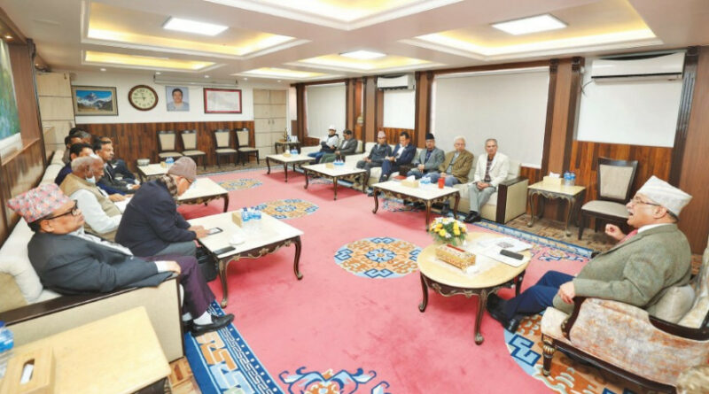
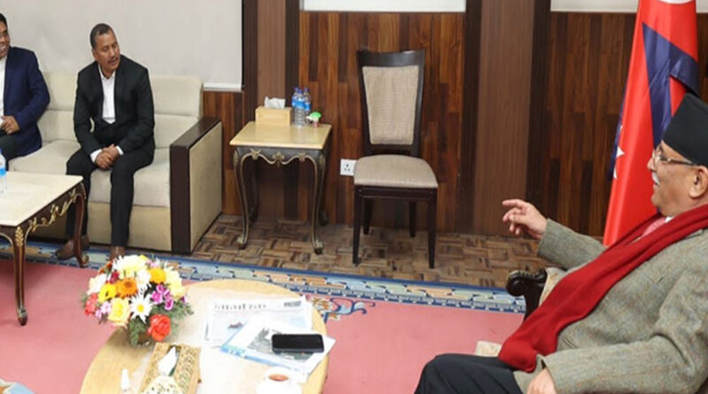
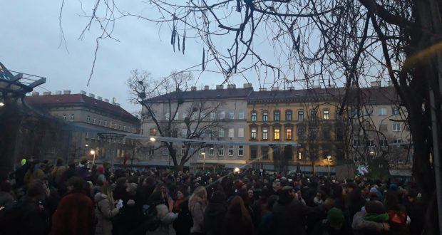
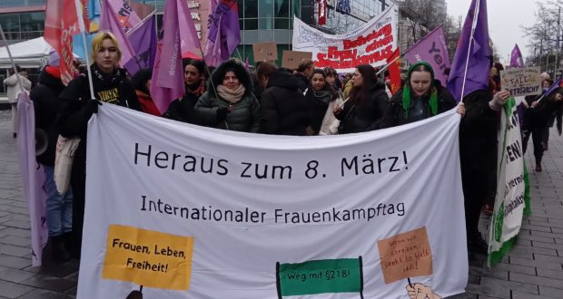
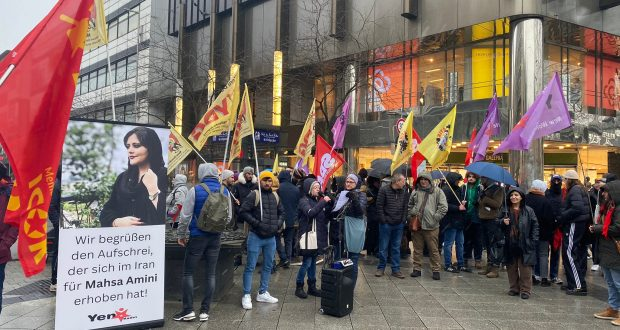
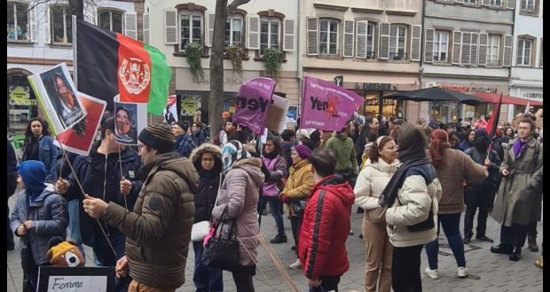
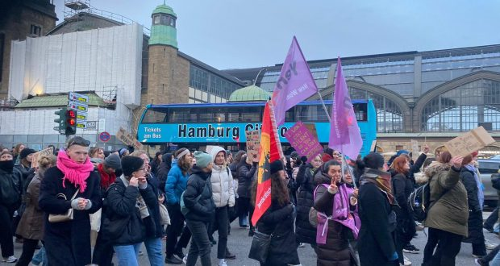

{kind=link}
{kind=link}
{kind=link}


[This lan. PDF][This lan. ODT][This lan. MD][This lan. TXT][This lan. TXT LIST]
Please select your language 请选择你的语言:
Author: Alan Warsaw
Publish Time: 2023-03-08T05:10:43+00:00
Update Time: 2023-03-09T02:21:15+00:00
Images: ['thumb-800x445.jpg']
Tags: ['Aahuti', 'Anti-Revisionism', 'Bahadur Rayamajhi', 'Baigyanik Samajbadi Communist Party', 'Biplav', 'Bishwa Bhakta Dulal', 'Communist Party of Nepal', 'Comprehensive Peace Accord', 'CP Gajurel', 'CPN', 'CPN (Bahumat)', 'CPN (Majority)', 'CPN (Maoist Centre)', 'CPN (Maoist Socialist)', 'CPN-Revolutionary Maoist', 'CPN-UML', 'Dr. Baburam Bhattarai', 'Jwala Kumari Sah', 'Karnajit Budhathoki', 'Kathmandu', 'Khadga Bahadur Bishwakarma', 'Kiran', 'Lekhraj Bhatta', 'Lil Bahadur Thapa Magar', 'Mani Thapa', 'maoism', 'Maoist Communist Party Nepal', 'Marxism-Leninism-Maoism', 'Modern revisionism', 'Mohan Baidya', 'Narayan Prasad Dhimal', 'Nepal', 'Nepal Samajbadi Party', 'Netra Bikram Chand', 'PPW in Nepal', 'Prachanda', 'Prachandism', 'Pushpa Kamal Dahal', 'Ram Bahadur Thapa', 'Revisionism']
Categories: ['Nepal', "People's War"]

Kathmandu, March 8, 2023: Hours before the Supreme Court registered a pairof writ petitions of People's War cases, eight Maoist parties held a raregathering at the prime minister’s residence in Baluwatar on Tuesday.
They warned the judiciary that any attempt to go against the peace process andrecent political changes would be resisted tooth and nail.
Leaders of the eight parties said not just them, but the masses would take tothe streets if attempts were made to derail the ongoing peace process.
“We are ready for just about any eventuality,” said Dharmendra Bastola,convener of the CPN (Majority).
Earlier, on November 10, the Supreme Court administration had refused toregister the writ petitions, saying that the petitioners had alreadyregistered their cases at the Truth and Reconciliation Commission (TRC). Butthe court later changed its stance.
On Tuesday, the meeting of the eight groups concluded that issues related tothe peace process must be managed as per the spirit of the Comprehensive PeaceAccord signed in 2006.
“We are clear that any activities and actions taken beyond the process oftransitional justice won’t be helpful in implementing the peace agreement,”they said in a joint statement following their meeting at Baluwatar.
“We strongly demand that the government make immediate legal and institutionalprovisions to conclude the remaining tasks of the peace process.” Ironically,one of the signatories of the joint statement was Prime Minister Pushpa KamalDahal, the government head, who is also the chairman of the CPN (MaoistCentre).
Besides Dahal, the other signatories were Baburam Bhattarai, chair of theNepal Samajbadi Party; CP Gajurel, standing committee member of the CPN(Revolutionary Maoist); Khadga Bahadur Bishwakarma, spokesperson of theCommunist Party of Nepal; Dharmendra Bastola, convener of the CPN (Majority);Bishwa Bhakta Dulal ‘Aahuti’, general secretary the Baigyanik SamajbadiCommunist Party; Karnajit Budhathoki, chair of the CPN (Maoist Socialist); andNarayan Prasad Dhimal, central member of the Maoist Communist Party Nepal.
“They [the petitioners] have obstructed the peace process and activities ofthe TRC [truth and reconciliation commission]. Filing a case against theperson who led the movement for the republic, and who is also the currentprime minister, is nothing but a demand to scrap the current system,” saidBastola, the CPN (Majority) convener. “This is a ploy to take the country backto a barbarian, regressive age.”
Earlier, on Sunday, various former and current Maoist leaders gathered at afunction organized by the “Foundation of martyrs and disappeared fighters’children” where they stressed the need to join hands to safeguard theachievements of the People’s War.
The Sunday gathering had followed a decision last week by a division bench ofthe Supreme Court to register writ petitions demanding action against theprime minister and CPN (Maoist Centre) chair Dahal.
This Supreme Court decision instilled a sense of disquiet among former Maoistforces.
“We are on the same page when it comes to countering any activity against thepeace agreement and political change,” the joint statement issued by the eightgroups added. “[We] are committed to the fact that all the agreements andunderstandings signed with the state on different occasions must beimplemented.”
Among the many groups of former Maoist forces, Dahal leads the mainstreamMaoist force, the CPN (Maoist Centre). Other Maoist leaders including MohanBaidya believe that Dahal has betrayed the original Maoist cause.
The eight groups assembled on Tuesday were some of the splinter groups formedby the splitting of the CPN (Maoist) that had waged the decade-long People'sWar (1996-2006).
The Kirati-led group had taken the helm of the CPN (Maoist Centre) after Dahalmerged the party with the UML in May 2018 to form the Nepal Communist Party.But when the Maoist Centre and UML were both revived by a Supreme Courtdecision in March 2021, Dahal got to lead the mother party again.
When the Nepal Communist Party split, at least four senior Maoist leadersstayed with the UML—Ram Bahadur Thapa as vice-chair, Top Bahadur Rayamajhi andLekhraj Bhatta as secretaries, and Mani Thapa as a standing committee member.Former Maoist leaders Lil Bahadur Thapa Magar and Jwala Kumari Sah are now UMLpolitburo members.
The Maoist splinters see the petition as a ploy to reignite conflict in thecountry.
Addressing an event organized later in the day on the eve of the 113thInternational Working Women's Day, former prime minister and chair of NepalSamajbadi Party Baburam Bhattarai, who was also present at the Baluwatarmeeting on Tuesday, said that the case against the prime minister intends topush the country back into conflict.
“This looks simple, but this is an issue of serious nature,” Bhattarai added.“We respect the court, but all conflict-era cases should be resolved by theTRC, something that is clearly stated in the constitution.”
Though the Supreme Court’s decision has brought the former Maoist forcestogether again, they are poles apart on ideology and therefore a unificationof all those forces appears nigh impossible, at least for now. But they areready to develop a working alliance.
“There is no possibility of unity with the forces like the one led by Dahal,but we are together on transitional justice issues,” said CP Gajurel, a seniorleader of CPN (Revolutionary Maoist). “We will certainly forge a workingalliance with all the former Maoist forces to fight any conspiracy against thepeace process.”
https://kathmandupost.com/politics/2023/03/08/eight-maoist-groups-close-> ranks-as-judiciary-takes-up-war-era-cases
Author: Alan Warsaw
Publish Time: 2023-03-08T10:18:39+00:00
Update Time: 2023-03-09T02:23:12+00:00
Images: ['1678254627_Biplov_vet_J4RvkER3jv-1200x560_20230308114851-800x445.jpg']
Tags: ['Anti-Revisionism', 'Baluwatar', 'Biplav', 'Communist Party of Nepal', 'CPN', 'CPN (Maoist Centre)', 'Kathmandu', 'Khadga Bahadur Bishwakarma', 'maoism', 'Marxism-Leninism-Maoism', 'Modern revisionism', 'Nepal', 'Netra Bikram Chand', 'PPW in Nepal', 'Prachanda', 'Prachandism', 'Pushpa Kamal Dahal', 'Revisionism']
Categories: ['Nepal', "People's War"]

Kathmandu, March 8, 2023: A meeting was held between Prime Minister PushpaKamal Dahal and CPN General Secretary Netra Bikram Chand.
The meeting took place on Wednesday morning at Baluwatar, the officialresidence of the Prime Minister. Chand’s Secretariat said that there was aserious discussion and review of the latest political developments in thecountry. CPN Spokesperson Khadga Bahadur Bishwakarma was also present in themeeting.
After a case against Prime Minister Dahal, who is also the Chairman of the CPN(Maoist Center), was registered at the court, discussions between variousMaoist factions have increased. Yesterday, the eight different Maoist factionsissued a joint statement and warned that they would respond collectively as acase of the conflict period was taken to the court.
Source : https://myrepublica.nagariknetwork.com/news/pm-dahal-meets-cpn-> leader-biplav/
Source: https://www.redspark.nu/en/peoples-war/cpn-general-secretary-chand-meets-with-pm-dahal/
Author: Gabriel Artur
Description: Milhares de mulheres camponesas se mobilizaram em luta pela terra por todo o Brasil entre os dias 1º e 8 de março, Dia Internacional da Mulher Proletária. As
Publish Time: 2023-03-08T14:10:47-03:00
Modified Time: 2023-03-09T13:16:17-03:00
Updated Time: 2023-03-09T13:16:17-03:00
Images: []
Section: Luta Pela Terra
Tags: ['Tomadas de terra']
Type: article
Camponesas se mobilizaram na Bahia, em Alagoas e no Rio Grande do Sul. Foto: Reprodução
Milhares de mulheres camponesas se mobilizaram em luta pela terra por todo oBrasil entre os dias 1º e 8 de março, Dia Internacional da Mulher Proletária.As lutas, em forma de tomadas de terra e manifestações, ocorrem na Bahia,Alagoas e Rio Grande do Sul.
Centenas de mulheres camponesas tomaram terras na Bahia. As tomadas fazemparte da Jornada Nacional de Luta das Mulheres Sem Terra, organizada peloMovimento dos Trabalhadores Rurais Sem Terra (MST). Até o momento, 470mulheres camponesas participaram na tomada de três latifúndios.
Na madrugada do dia 01/03, cerca de 120 camponesas ocuparam a Fazenda SantaMaria, no município de Itaberaba, na região da Chapada Diamantina (BA). Afazenda ocupada tem quase 2 mil hectares de terra e está abandonada.
Leia também: Camponeses se mobilizam com ocupações e protestos e estremecem aBahia
No dia 05/03, centenas de mulheres camponesas ocuparam duas fazendasabandonadas na mesma região. Cerca de 100 camponesas ocuparam a FazendaRosarinho, município de Rafael Jambeiro. De acordo com o MST, o latifúndio commil hectares está abandonado há mais de oito anos e sem cumprir sua “funçãosocial”.
Outra ocupação aconteceu na região nordeste do estado, no município deJeremoabo, onde 200 mulheres ocuparam a fazenda Espinheiro. Ainda segundo oMST, a área estava também abandonada há muitos anos, sendo uma parte de terrasdevolutas e outra parte, com mais de 620 hectares, de um único proprietário.
Todas essas terras são, agora, alvo da ocupação de centenas de camponesespobres e contam com o apoio dos milhões de camponeses sem terra ou com poucaterra na busca de viver com dignidade. Esta luta ocorre por todo o país, comopor exemplo em Rondônia, em que mais de 800 famílias realizaram o CortePopular na Área Tiago Campin dos Santos e já estão colhendo os frutos dotrabalho.
Leia também: Em nota, LCP denuncia chacina e torturas macabras duranteoperação policial
Cerca de mil camponesas marcharam em Maceió (AL), no dia 07/03, em direção àsuperintendência do Instituto Nacional de Colonização e Reforma Agrária(Incra), no centro da capital. As camponesas exigiram do Instituto aregularização imediata de suas terras.
A marcha reuniu camponeses organizados em diversas movimentos de luta pelaterra, como a Comissão Pastoral da Terra (CPT), Frente Nacional de Luta (FNL),Movimento de Libertação dos Sem Terra (MLST), Movimento de Luta pela Terra(MLT), Movimento de Mulheres Camponesas (MMC), MST, Movimento Terra, Trabalhoe Liberdade (MTL) e Movimento Terra Livre.
A regularização das terras é uma importante pauta da luta camponesa por todo opaís, pois é um passo rumo à titulação definitiva. Ainda que a titulação dadapelo velho Estado não seja a garantia final de que os camponeses não serãoremovidos de suas terras pelo latifúndio, ela pode impulsionar a luta contraas relações atrasadas de dependência e submissão do latifúndio (relações deprodução semifeudais).
Leia também: AL: Camponeses realizam combativo ato exigindo a regularizaçãode suas terras
Cerca de 300 camponesas realizaram um ato na comunidade Vila Herdeiros, nobairro Lomba do Pinheiro, em frente à Barragem Lomba do Sabão, na divisa entrePorto Alegre e Viamão, no Rio Grande do Sul. De acordo com as camponesas, olocal, abandonado pela prefeitura de Porto Alegre desde 2000, está com altorisco de rompimento. Elas denunciam que o rompimento da barragem causariadanos incontáveis para cerca de 70 mil pessoas atingidas diretamente e exigemque a prefeitura tome providências imediatas.
Também na manifestação, foram feitas homenagens para a militante do Movimentodos Atingidos por Barragens (MAB) Débora Moraes, moradora do local, que emsetembro de 2022 foi assassinada por seu marido.
Na contra mão do que exigem os milhares de camponeses em luta por terra, ogoverno Lula/Alckimin (passados mais de dois meses de seu início) ainda nemsequer apresentou um plano de “reforma agrária”. Isto tem motivado denúnciasdas massas de todo o país que, sem esperar pela paralisia das classesdominantes em atender suas reivindicações, tomam terras de Norte a Sul dopaís.
A própria direção do MST anunciou que seguirá com tomadas de terras no mês deabril para exigir uma resposta do governo.
Enfrentando tanto o latifúndio e sua pistolagem, como o governo e suademagogia, as massas camponesas apontam para o caminho de tomar as terras dolatifúndio.
Source: https://anovademocracia.com.br/mulheres-lutam-pela-terra-em-todo-o-brasil/
Author: Ana Nascimento
Description: Assim como ocorreu na UFPB, os estudantes de Curitiba também realizaram uma manifestação contra o aumento da passagem. Na cidade, o valor cobrado passou de
Publish Time: 2023-03-08T16:03:15-03:00
Modified Time: 2023-03-09T14:01:33-03:00
Updated Time: 2023-03-09T14:01:33-03:00
Images: []
Section: Nacional
Tags: ['aumento de passagem', 'ufpb']
Type: article
Foto: TV Cabo Branco/Reprodução
Na tarde de 7 de março, estudantes e trabalhadores da Universidade Federal daParaíba (UFPB) foram reprimidos pela polícia quando realizavam umamanifestação contra o aumento da tarifa de ônibus em João Pessoa, que passoude R$4,40 para R$4,70. Os estudantes iniciaram a manifestação na Praça da Paze se deslocaram para a Cidade Universitária, onde fizeram um bloqueio compneus em chamas. Eles denunciam que tal medida foi tomada sem que houvessenenhuma discussão com a população.
Em determinado momento, ao chegarem à Cidade Universitária, os manifestantesforam cercados pela polícia, que passou a agredir, atirar balas de borracha ea lançar spray de pimenta contra os presentes.
Manifestações como a que ocorreu nesta terça na UFPB não são isoladas. Elassão parte da luta das massas de nosso país por melhores condições de trabalhoe estudo contra a precarização do ensino público, gratuito e de qualidade.Como noticiado amplamente por AND , nos últimos meses o protesto populartem ganhado grande vulto país afora.
Assim como ocorreu na UFPB, os estudantes de Curitiba também realizaram umamanifestação contra o aumento da passagem. Na cidade, o valor cobrado passoude R$5,50 para R$ 6,00. Com uma grande faixa que levava a consigna R$6,00 éroubo! Passe livre já! que estava assinada pelo Centro Acadêmico dePedagogia da UFPR (uma das entidades que organizou o protesto), centenas deestudantes denunciaram à população o absurdo do aumento das passagens.
Leia também: PR: Realizada em Curitiba grande manifestação contra o aumentoda passagem
Os atuais aumentos das tarifas dos transportes que ocorrem por todo o país temcomo principal beneficiário os empresários do transporte. Conivente aosinteresses antipovo da máfia do transporte, os governos repassam o aumento àpopulação sem qualquer contrapartida. Cansados de tanta humilhação, comtransportes públicos lotados, estragados, sem manutenção, sem ar condicionado(mesmo em pleno verão), a resposta do povo tem sido exigir passe livre já.
Source: https://anovademocracia.com.br/estudantes-da-ufpb-protestam-contra-aumento-de-passagem/
Author: maoist
Description: Dear comrades and friends, As International Women's Day For Struggle approaches, we would like to emphasize the strength of solidarity and...
Time: 2023-03-08T16:13:00+01:00
Images: []
Dear comrades and friends,
As International Women's Day For Struggle approaches, we would like toemphasize the strength of solidarity and organizing capacity of the communistand revolutionary women in the devastated cities. Peoples in the region havebeen suffering the harshest conditions during this winter time, but they alsorealise the character of the plunder of the capitalist state. Many socialistorganizations and women's organizations have been conducting solidaritycampaigns together with the people there.
Here is our short thread on the issue with some photos from the work there:
https://twitter.com/MLKP_IB/status/1633089382935568387
Revolutionary greetings,
MLKP International Bureau
Source: https://proletaricomunisti.blogspot.com/2023/03/pc-8-marzo-messaggio-dai-compagni.html
Author: maoist
Description: 1,28 milioni i partecipanti secondo le cifre del Ministero dell’Interno, tre milioni e mezzo secondo la CGT. Si sono tenute circa 300 mani...
Time: 2023-03-08T16:43:00+01:00
Images: ['download.jpg']
1,28 milioni i partecipanti secondo le cifre del Ministero dell'Interno, tremilioni e mezzo secondo la CGT.
Si sono tenute circa 300 manifestazioni in tutta la Francia, con numeriragguardevoli anche nei centri urbani minori e nelle zone rurali.
Dalle interviste nei reportages delle diverse testate di informazione ildato che emerge tra i
manifestanti, al di là della sigla sindacale d'appartenenza, è che bisogna_intensificare_ la lotta e che solo il blocco del paese potrà farà cambiarerotta al governo.
L'intersindacale, che comprende 8 organizzazioni dei lavoratori, ha giàlanciato una nuova mobilitazione per sabato 11 ed un'altra per mercoledì 15,giorno della commissione mista paritaria, ultima tappa della discussioneparlamentare.
oggi Mercoledì 8 marzo, molti dei settori che hanno scioperato il 7prolungheranno l'azione sindacale. Tra questi i lavoratori delle ferrovie -con un voto unanime di tutti i quattro sindacati rappresentativi - e gliautisti della RAPT (metro e autobus di Parigi).
Se si aggiunge l'azione dei "blocchi filtranti" messa in atto dagliautotrasportatori - mobilitati in parte già da domenica sera - e l'astensionedal lavoro di una parte importante del personale aereoportuale, si ha ilquadro dell'impatto complessivo sul settore.
Nell'istruzione, mentre il Ministero dell'Educazione afferma che nelle scuolesolo un insegnante su tre avrebbe scioperato, il sindacato più rappresentativonel comparto (SNUipp-FSU) stima a più del 60% l'adesione allo sciopero nellascuola primaria. La FSU chiama il corpo decente a mobilitarsi anche per l'8marzo. Si sono registrati blocchi in molti istituti superiori ed in diverseuniversità.
Poco meno della metà dei dipendenti della EDF avrebbe scioperato, secondo ladirezione dell'azienda. Ma intanto lo sciopero è prolungato anche a questomercoledì, tra l'altro, in tutti i siti della TotalEnergies, con le spedizionidi carburante bloccate. Tre dei quattro dei terminali per il gas naturaleliquefatto (GNL) verranno fermati per una settimana.
I lavoratori delle centrali nucleari - poco meno di una decina - eranomobilitati da venerdì scorso. I porti sono stati bloccati questo martedì, e locontinueranno ad essere mercoledì.
Source: https://proletaricomunisti.blogspot.com/2023/03/pc-8-marzo-proseguono-gli-scioperi-in.html
Author: DEM VOLKE DIENEN
Time: 2023-03-08T19:58:32+00:00
Images: ['Hamburg_8._März_2023-Rotes_Frauenkomitee_Hamburg-1.jpg', 'Hamburg_8._März_2023-Rotes_Frauenkomitee_Hamburg-2.jpg']
Tags: ['Hamburg', 'Internationaler Frauenkampftag', 'Antimilitarismus']
Category: None

In Hamburg fanden am 8. Marz zahlreiche Versammlungen statt, die mit Abstandgroßte Demonstration hatte einige tausend Teilnehmer. Hier nahm auch einKontingent des Roten Frauenkomitees Hamburg im ersten Drittel derDemonstration teil, es trug ein Transparent mit den Parolen: „Frauen kampftund wehrt euch: Gegen Imperialismus und Patriarchat! Gegen die Teuerungswelleund Militarismus!" trug.
Zudem wurden hunderte Flugblatter des Roten Frauenkomitees - BRD zumdiesjahrigen 8. Marz verteilt und lautstark Parolen angestimmt, die in Teilender Demonstration Widerhall fanden. Auch wenn in dieser Demonstration nichtdie proletarische Farbe des Feminismus uberwiegend war, sondern andere,herrschte doch eine kampferische Stimmung auf der großen Demonstration, diezeigt, dass die Frauenmassen zunehmend bewusster und aktiver am politischenKampf teilnehmen und letztendlich das Anwachsen der proletarischenFrauenbewegung starker werden wird.

Source: https://www.demvolkedienen.org/index.php/de/t-brd/7532-8-maerz-2023-in-hamburg
Author: maoist
Description: Naufragio di Cutro, bloccato il trasferimento delle salme a Bologna dopo la protesta dei familiari Sit-in di protesta dei familiari ...
Time: 2023-03-08T20:38:00+01:00
Images: ['1678276638462_rainewsbadfbccaabdfece.jpg', '0c92acef81a7f396c72ebff637fa25b7.jpg', 'protesta-parenti-vittime-naufragio2-1536x690.jpg']

Sit-in di protesta dei familiari delle vittime del naufragio davanti alPalamilone di Crotone

La protesta dei familiari a Crotone

Manifestazione sulla spiaggia di Cutro il prossimo 11 marzo, per esprimereindignazione per quanto accaduto e solidarietà con le famiglie delle vittime.La manifestazione, che comincerà alle 14.30 sul lungomare di Cutro, è "ilprimo importante appuntamento nazionale di un percorso di iniziative emobilitazioni che le reti intendono organizzare"
Source: https://proletaricomunisti.blogspot.com/2023/03/pc-8-marzo-il-governo-di-assassini.html
Author: fight
Description: La giornata di sciopero e di lotta è proseguita a Palermo con un nuovo sit-in al palazzo del Parlamento siciliano -ARS, dove le precarie Coo...
Time: 2023-03-08T20:48:00+01:00
Images: ['ars%20arrivo.jpg', 'coop%20socilai.jpg', 'ars%202.jpeg', 'ars%203%20do.jpg', 'operatrice%20sanita%CC%80.jpg', 'Ville.jpg', '12%20mila%20euro%20.jpg']
La giornata di sciopero e di lotta è proseguita a Palermo con un nuovo sit-inal palazzo del Parlamento siciliano -ARS, dove le precarie Coop, lavoratrici ele compagne sono arrivate improvvisando un combattivo mini-corteo che èentrato nella piazza gremita di lavoratrici e lavoratori precari OSS e tecnicidella sanità in manifestazione, assunti durante lo scoppio del Covid orabuttati tutti fuori e senza lavoro, mentre gli ospedali sono sempre più allosbando.
Forte e bello scambio di solidarietà, con applausi e poi slogan e comiziinsieme con il nostro megafono con le tante operatrici in particolare a cuiabbiamo dato il volantino.
video del mini-corteo

UNA SOLA SOLUZIONE, STABILIZZAZIONE!


I deputati ARS in modo osceno si sono aumentati stipendi e indennità dipensione mentre migliaia di lavoratrici, precarie, precari, disoccupate devonovivere o con salari bassissimi o morire di fame, visto l'attacco al reddito dicittadinanza di cui oggi vengono private anche tantissime donne.
LA PAGHERETE!


Il bel saluto finale solidale delle precarie Coop, che hanno anche ottenuto unincontro con il vice-Presidente dell'Ars per la prossima settimana, alleprecarie e ai precari della sanità
Source: https://femminismorivoluzionario.blogspot.com/2023/03/2-sciopero-delle-donnelavoratrici-8.html
Author: socialistiskrevolution
Publish Time: 2023-03-09T04:00:00+00:00
Modified Time: 2023-03-06T11:45:10+00:00
Description: Vi bringer en uofficiel dansk oversættelse af rapporten fra Dem Volke Dienen over nye aktioner, som er blevet udført i Folkekrigen i Indien. Den 25. februar blev tre politifolk dræbt i en jungle i …
Images: ['billede.png']
Type: article
Categories: ['Uncategorized']
Vi bringer en uofficiel dansk oversættelse af rapporten fra Dem VolkeDienen over nye aktioner, som er blevet udført iFolkekrigen i Indien.

Den 25. februar blev tre politifolk dræbt i en jungle i Sukman-distriktet idelstaten Chhattisgarh af medlemmer af det Indiens Kommunistiske Parti[Maoist]-ledte Folkets Befrielses Guerillahær [PLGA], der ledes af IndiensKommunistiske Parti [Maoist]. Politimændene, der tilhørte den paramilitæreformation District Reseve Guard, var tidligt om morgenen blevet overfaldet iet baghold, da de forsøgte at sikre en byggeplads. Der blev udsendt adskilligeanti-guerillastyrker til distriktet for at forsøge at bekæmpe PLGA-kammeraterne.
Desuden blev et medlem af hæren og en paramilitær fra Chhattisgarhs statsligestyrker dræbt i to separate operationer udført af PLGA. En paramilitær frahærens tjenestekorps blev skudt ihjel i sin fødeby Bade Tava i Kanker. Den 26.februar blev et medlem af de reaktionære styrker i Chhattisgarh dræbt under enmilitær operation. PLGA havde tidligere plantet miner i området, som blevudløst af de reaktionære styrker under deres operation, hvilket resulterede i,at en af deres mænd blev dræbt.
Source: https://socialistiskrevolution.wordpress.com/2023/03/09/indien-nye-aktioner-i-folkekrigen-2/
Author: maoistroad
Description: COMMUNIST PARTY OF INDIA (MAOIST) Central Committee Press Release 9 March, 2023 Observe 23rd March as an Anti- Imperialist Day. Condemn...
Time: 2023-03-09T04:05:00-08:00
Images: []
COMMUNIST PARTY OF INDIA (MAOIST) Central Committee
Press Release 9 March, 2023
Observe 23rd March as an Anti- Imperialist Day. Condemn the Imperialist wars,the loot of natural resources and subjugation of working class and the toilingmasses!
On 23rd March 1931, the great sons of India, Comrade Bhagat Singh, ComradeSukhdev and Comrade Rajguru were murdered by the British colonial power in collaboration with Indian Right wingand comprador bourgeoisie forces. With their slogans of "Inquilab Zindabad" (Long Live Revolution) and "Downwith Imperialism", Bhagat Singh, Sukhdev and Rajguru had opened a new chapter in the Indian history. Those slogansstill echoes in every corner of India, still boils the blood of every youth against the injustices that runs the order ofthe day. Communist Party of CPI (Maoist) pay its humble to homage to those great revolutionaries of India whosacrificed their life in a struggle against Imperialism, Religious fanaticism, caste system and all forms of injustices. Nine decades has elapsed since 1931 and India's economy still remains inshackles under the regime of Imperialist and comprador bourgeoisie forces. In the last eight years, the attack ofImperialism on India has escalated with the rise of Brahmanical Hindutva Fascist forces. This clearly shows the close nexusbetween the hindutva forces- Comprador bourgeoisie- imperialism. After becoming Prime Minister Narendra Modi has laiddown a red carpet for the welcoming of foreign capital in the Indian Market. The dominance of foreign capital inthe Indian Market has led to pauperization of the working classes and the toiling masses, plundering of natural resourcesand transfer of wealth because of the unequal exchange system. The comprador bourgeoisie are nurturing a strong bondwith Imperialism and they jointly are devastating the economy of India. In order to facilitate the fasteraccumulation of profit for the ruling classes, the Indian state under fascist BJP rule has scraped several labour protectionslaws, has totally turned the environment laws as upside down, made an flow of easy credit, land grabbing andunprecedented scale of privatization. The growth reality of India economy remains a classic example of irony where the rich arebecoming richer and the poor poorer. India which aspires to be a 'world leader' is unable to take care of its ownchildren when they are dying not because of any disease, not because of any natural disaster, not because of externalaggression, but due to hunger. On the other hand, the wealth of Ambani and Adani are touching the sky. The facts areclear that the rise of Ambani and Adani has been accompanied with the help of foreign capital and transfer of publicmoney and industries of public sectors to the comprador bourgeoisie, even before the rise of Modi. But, with the riseof Modi the process of flow of foreign capital, privatization and allocation of subsidies to comprador bourgeoisiehas enhanced in an unprecedented manner. In the case of Adani, the use of manipulations of stocks was followed toacquire cheap credit from public banks with the help of Modi to build his empire. The nexus between Modi and Adani hasbeen exposed which was hidden under the skin cover of propaganda. Millions of Indians are surviving on less than70 rupees per day and living a life devoid of dignity. This is a modern form of barbarity in the rule of imperialism. Capitalist Imperialism is in deep crisis and its contradictions are becomingday by day more intense. History has proved that, in order to overcome from the crisis, imperialism has sprouted warintentionally for the division of the world and the capture of the world market. American Imperialism and its allies arewaging wars in Syria, Yemen and Palestine. The present Russian - Ukraine war is a by- product of Imperialist rivalriesbetween Russia and America. It is a war of re-division of the world and for monopolist control over natural resources.The involvement of American imperialism and the NATO forces to aggravate the war is beyond any doubt. America and NATOhas agreed to supply more weaponry and financial support to Ukraine. Since the start of war, the profitsof the weaponry industries and oil and gas companies has doubled. Whereas the conditions of the working class,peasantry and common masses has retarded further because of the war. The prices of goods of daily necessities that areessential for social reproduction of the
masses is highest in the last 40 years in many countries. At the same time thereal wages of the working class have further declined creating a severe problem of consumption and revival ofdemand of mass goods. Unemployment and cutting down of labour force is rampant in all major industries. Utilizingthese conditions, imperialist institutions like IMF and World Bank have leashed a series of austerity measures andrestructuring of economy for not only third world countries but also for many western nations. These measures are going totransform these countries as a rentier to the Monopolist Imperialist powers. Imperialism is today facing resistance and mass movements from the workingclass, peasantry and other sections. Working class movements are rising all over the world, and in all sectors ofindustries. We are witnessing a large scale of working-class movements in America, France, Britain, Germany, South Korea,Sri Lanka and in many other places. In India, the working class, peasantry, Adivasi, social activists and studentsare revolting and challenging the anti- people policies dictated by fascist BJP-RSS and imperialism. Not only working-class movements but there is a rise in the popularity of socialism and communism in the world. Out of fear ofSocialism and Communism, the Democrat Biden government in America with the support of Republicans has outlawedSocialism in United States of America. Similar measures have taken in Indonesia. Capitalist Imperialist system is "rotten" and "parasitic" and therefore need to be overthrown with full force. With passing of each day, the working-classmovements will raise its innumerable heads against capitalism and its highest stage -Imperialism. The words fromCommunist Manifesto is pertinent to remember that states "What the bourgeoisie therefore produces, above all, areits own grave-diggers." All revolutionary party and Maoist, communist parties of the world need to turnthe present crisis of Imperialism and the Imperialist war into a militant working class and mass movements. Central Committee (CC) of Communist Party of India (Maoist) appeals to allRevolutionary, democratic and patriotic mass organizations, intellectuals, students and oppressed castes, womens andminorities organizations and nationalities to observe 23rd March as an Anti-Imperialist day and join in thestruggles of working class, peasantry and Adivasi of India and stand in solidarity for the working-class movements allover the world. Friends and Comrades, it is time to stop the colonialization of our lands, our water, our forests, ourair and our existence. We also appeal the masses to build movements for the nationalization of the wealth of Ambani andAdani, and against privatization of social wealth, of public sectors and public spaces. It is time to rise againstthe Imperialist plunder and war, against the inhuman conditions that is prevailing in the country. Our struggle will notonly define the future, but also the meaning of the future that we aspire to build. Abhay Spokesperson Central Committee
Source: https://maoistroad.blogspot.com/2023/03/cc-pci-maoist-declaration-against.html
Author: maoist
Description: NON E' IL POST AD ESSERE OFFENSIVO, MA IL FATTO CHE ABBIANO LA MEMORIA CORTA «Il silenzio di Georgia Meloni sulla tragedia mediterr...
Time: 2023-03-09T06:06:00+01:00
Images: []
NON E' IL POST AD ESSERE OFFENSIVO, MA IL FATTO CHE ABBIANO LA MEMORIA CORTA
«Il silenzio di Georgia Meloni sulla tragedia mediterranea che ha costato lavita di almeno 69 migranti è assordante e insopportabile.È passata più di unasettimana dal naufragio e non abbiamo visto altro che indifferenza dellaMeloni e dichiarazioni disumane del ministro dell'Interno italiano.Da quando èal timone del governo italiano, Giorgia Meloni ha perseguito un programmaantimigranti. Il suo governo ha reso più difficile la ricerca e il salvataggioin mare e ha introdotto regole più severe per le ONG che effettuano operazionidi salvataggio indispensabili in assenza di sostegno statale.Questa tragediaconferma semplicemente un programma distruttivo: quelle persone avrebberopotuto essere salvate. Il governo italiano non ha agito fino a quando non èstato troppo tardi. È ora che l'Europa concordi un approccio più umano esostenibile alla ricerca e al salvataggio nell'UE e che utilizzi i fondidell'UE per salvare vite umane, anziché costruire muri.Non accetteremo mai lacrudeltà di permettere a persone disperate di morire in mare!».
Davvero non si capisce cosa ci sia di offensivo, o peggio di additabile comeesempio di sciacallaggio: il gruppo politico in questione ha semplicementesegnalato qual è stato il comportamento dell'esecutivo italico in questaoccasione, nella quale "l'inerzia" (terza autorepressione) dei ministricompetenti ha comportato la perdita della vita di circa settanta persone;quello che andrebbe chiesto ai Socialisti e Democratici non sono delle assurdescuse, bensì dove stavano quando al posto del Ministro degli Affari Internipro tempore, Matteo Piantdosi, sedeva il sedicente democratico Domenico LucaMarco Minniti, ossia colui che inaugurò la stagione dei respingimenti in maree degli accordi con i governi nordafricani che rimettono i migranti nelle manidegli aguzzini.
Bosio (Al), 08 marzo 2023
Source: https://proletaricomunisti.blogspot.com/2023/03/pc-9-marzo-meloni-e-la-strage-dei.html
Author: maoist
Description: None
Time: 2023-03-09T08:03:00+01:00
Images: ['IMG_9617-1.JPG']

Source: https://proletaricomunisti.blogspot.com/2023/03/pc-9-marzo-un-manifesto-marxista.html
Author: maoist
Description: None
Time: 2023-03-09T08:14:00+01:00
Images: ['download.png']

Source: https://proletaricomunisti.blogspot.com/2023/03/pc-9-marzo-la-strage-dei-migranti.html
Author: maoist
Description: Migranti trattati come animali! Cinico e osceno tentativo di trasferire le salme a Bologna! Imperialismo, governo di fascisti e razzisti str...
Time: 2023-03-09T10:00:00+01:00
Images: ['piantedosi-salvini-tajani.jpg']

Migranti trattati come animali!
Cinico e osceno tentativo di trasferire le salme a Bologna!
Imperialismo, governo di fascisti e razzisti strillano in parlamento, siautoassolvono e si preparano a fare di peggio
Danzeremo prima o poi sulle vostre bare!
A Cutro sabato - lungomare ore 14.30 - per far sentire forte e chiara lavoce dei senza voce, brutalmente fatti morire per i profitti del capitale eper la ragione del capitale che genera mostri al governo!
Source: https://proletaricomunisti.blogspot.com/2023/03/pc-9-marzo-gli-assassini-tornano-sempre.html
Author: fannyhill
Description: Da La Stampa È di otto punti il decreto legge all'esame del Consiglio dei ministri a Cutro. 1. Programmazione dei flussi. Si prevede, in v...
Time: 2023-03-09T10:01:00+01:00
Images: []
Da La Stampa
È di otto punti il decreto legge all'esame del Consiglio dei ministri a Cutro.
2. Semplificazioni nel rilascio al nulla osta al lavoro. Si prevede che,se la Questura non ha segnalato elementi ostativi entro 60 giorni dal clickday, il nulla osta può essere rilasciato. I controlli di solvibilità
del datore del lavoro sono demandati a consulenti del lavoro o ad associazionidi categoria. Sono semplificazioni già applicate ai decreti flussi 2021(Governo Draghi) e 2022 (Governo Meloni), che sono ora messe a regime. L'unicadifferenza è l'allungamento da 30 a 60 giorni del termine a disposizione dellaQuestura (dà maggiore garanzia sul piano della sicurezza).
4. Prolungamento da 2 a 3 anni della validità del primo rinnovo delpermesso di soggiorno per lavoro autonomo, subordinato e ricongiungimentofamiliare. La misura è motivata da ragioni pratiche: sgravare le questure dapratiche routinarie e semplificare gli oneri per gli stranieri residenti inItalia.
5. Ingresso di lavoratori agricoli e contrasto alle agromafie. Si prevedeuno "scorrimento" delle graduatorie del decreto flussi 2022, nel senso che ledomande di lavoratori stranieri eccedenti le quote di quel decreto in ambitoagricolo sono soddisfatte con priorità attingendo alle quote del decretosuccessivo. In altri termini, nel settore agricolo, i datori di lavoro nondovranno rifare domanda nel nuovo "click day".
6. Possibilità di commissariare i centri per migranti in caso di malagestione
7. Sanzioni penali contro i trafficanti. Si prevede
- innalzamento di un anno delle pene minime e massime per i reati connessiall'immigrazione clandestina già esistenti (ipotesi base del favoreggiamentodell'immigrazione clandestina avrà una pena compresa tra un minimo di 2 e unmassimo di 6 anni; l'ipotesi aggravata, per fini di guadagno o in caso diingresso di più persone, avrà una pena da 6 a 16 anni);
- introduzione di un nuovo reato (Morte o lesione come conseguenza dei reatidi immigrazione clandestina), punito con reclusione da 20 a 30 anni in caso dimorte di più persone o di morte di una persona e lesioni di una o più personecome conseguenza di trasporti di persone organizzati in violazione delledisposizioni sull'immigrazione; la pena da 15 a 24 anni in caso di morte di 1persona; la pena da 10 a 20 anni in caso di lesioni gravi o gravissime a una opiù persone. Lo schema è modellato sul sequestro di persona (che prevede penedi gravità comparabile quando da esso consegua la morte).
8. Disposizioni in materia di ricorsi sulla protezione internazionale.Sono norme di dettaglio ispirate da esigenze pratiche (si precisa chel'allungamento dei termini per chi sta in Paesi extra UE si applica non solo achi risiede in un Paese extra UE, ma anche a chi semplicemente vi si trovi; sielimina l'obbligo della convalida dell'espulsione da parte del giudice dipace, quando l'espulsione è stata pronunciata da un giudice per esempio aseguito di una condanna penale; si elimina ,in caso di espulsione, l'obbligodi dare avviso che, se l'interessato non si allontana volontariamente nei 15giorni successivi, potrà essere allontanato coattivamente).
9. Accelerazione degli appalti per la realizzazione di centri di permanenzaper i rimpatri
10. Potenziamento della sorveglianza marittima. La Difesa ha proposto unanorma, che prevede la condivisione delle informazioni sulla situazionemarittima (definite e aggiornate dalla Marina militare) e l'estensione deicompiti della Marina militare al controllo della pesca in acque territoriali enella zona contigua. Infrastrutture e Agricoltura hanno espresso contrarietà(le norme attribuiscono alla Marina militare compiti ora attribuiti allaGuardia costiera). Il Ministero dell'interno ha formulato una generale riservapolitica.
Source: https://proletaricomunisti.blogspot.com/2023/03/pc-9-marzo-migranti-ecco-cosa-ce-nel-dl.html
Author: SERVIR AL PUEBLO
Publish Time: 2023-03-09T11:39:42+00:00
Modified Time: 2023-03-09T11:39:42+00:00
Description: Cerca de una decena de integrantes del Comité, de la Asamblea y colaboradores estuvieron durante horas ejecutando los primeros trabajos de limpieza, que lograron retirar cientos de kilos de basura,…
Images: ['untitled-1.png', 'image-8.png', 'image-9.png', 'image-10.png', 'image-11.png', 'image-12.png']
Type: article

09/03/2023
El pasado fin de semana la Asamblea del Asentamiento junto con el ComitéRevolucionario de Albacete puso en marcha la campaña de limpieza delasentamiento que en la anterior asamblea aprobaron comenzar.
Cerca de una decena de integrantes del Comité, de la Asamblea y colaboradoresestuvieron durante horas ejecutando los primeros trabajos de limpieza, quelograron retirar cientos de kilos de basura, escombro y ceniza que seacumulaba desde hacía meses en los alrededores de las chabolas.
Este trabajo sirvió respondía al total abandono que desde hace muchos añossufre el terreno y las condiciones de falta de salubridad en la que cada añosobreviven cientos de personas.
Tras el gran incendio que hace unos meses afectó a siete chabolas todavíakilos y kilos de ceniza se acumulan en el lugar en el que antes estaban éstas.
Los activistas y voluntarios lograron despejar hasta tres zonas diferentes delasentamiento que se establece en la Carretera de las Peñas, sin embargo,todavía son muchos los esfuerzos necesarios para mejorar la higiene y lascondiciones en las que viven los vecinos del asentamiento.
Con guantes, palas, rastrillos y capazos en mano se comenzó con una obra quelas instituciones jamás se plantearon, que las ONGs no contemplan y que losvecinos del asentamiento no han podido emprender hasta que se han hechofuertes y conscientes de la necesidad de autorganizarse al margen del Estadoburgués, de su miseria y de sus migajas.
La jornada transcurrió bajo el sol del primer fin de semana de marzo yconcluyó preparando y compartiendo una comida con todos los trabajadores quehabían participado en el inicio de la campaña.
El Comité Revolucionario de Albacete desplegó una pancarta reivindicando laacción en la que se podía leer “Lo que el Estado niega, el pueblo loconstruye”, y efectivamente, así es. Lo que el Estado español ha negado pordécadas a los migrantes que sudan nuestros campos y sangran en nuestrasfronteras lo están construyendo ellos hoy con sus manos.
Esta campaña comparte el espíritu de las acciones por la alfabetización quedías antes se venían emprendiendo dentro del asentamiento, donde desde elComité Revolucionario de Albacete se ha comenzado a dar clases de lectura yescritura según los diferentes niveles de los miembros de la asamblea.
Así comienza una campaña en la lucha por la autorganización de las masas,contra el imperialismo y su miseria.
Así continúa el trabajo de las masas migrantes de Albacete por su dignidad ycontra un sistema que los condena a una vida de explotación.
Artículo enviado por un colaborador


Anuncio publicitario
Author: SERVIR AL PUEBLO
Publish Time: 2023-03-09T11:49:40+00:00
Modified Time: 2023-03-09T11:49:40+00:00
Description: Reproducimos el posicionamiento político de las camaradas del Movimiento Femenino Popular de México sobre el 8 de marzo de este año 2023
Images: ['image-14.png']
Type: article
Reproducimos el posicionamiento político de las camaradas del MovimientoFemenino Popular de México sobre el 8 de marzo de este año 2023. El linkoriginal es el siguiente:https://solrojista.blogspot.com/2023/03/manifiesto-del-8-de-marzo-en-mexico.html

Movimiento Femenino Popular-México
“Para impulsar la emancipación política de la mujer es deber de las mujeressocialistas de todos los países agitar infatigablemente entre las masastrabajadoras los principios antes mencionados… ___Esta reivindicación debeser explicada en relación con toda la cuestión de la mujer según la concepciónsocialista. El Día de la Mujer debe tener un carácter internacional y debe serpreparado cuidadosamente”._
Clara Zetkin. Proclamación del Día Internacional de la Mujer (8 de marzo).Segunda Conferencia Internacional de Mujeres Socialistas, Copenhague,Dinamarca, 1919
A las mujeres de clase trabajadora
A las mujeres oprimidas del campo y la ciudad
Camaradas
Es este el Día Internacional de la Mujer Trabajadora , y para las mujeresdel México de abajo que somos tres veces oprimidas, primero por ser mujeres,segundo por ser pobres y tercero por ser indígenas, es un día especialmenteimportante.
Desde los monopolios de la prensa burguesa se nos pretende arrancar este díade nuestras manos; se nos quiere “felicitar por ser mujeres” y se nos pretendeechar en un mismo costal junto a las señoronas burguesas y latifundistas queoprimen y explotan a nuestro pueblo. Se nos llama a “alzar la voz” contra losroles de género peleando contra nuestros compañeros hombres, pero se nos pidecallar respecto a los roles de clase que se han impuesto desde el surgimientode la propiedad privada, sometiéndonos ante las clases parasitarias en elpoder.
Por otra parte, la USAID y otras agencias del imperialismo tratan decooptarnos, de pintarnos de colores y agendas golpistas identificadas condiscursos “progre” y posmodernistas que promueven desde la academia y las ONG(contrainsurgentes). Los clichés del lenguaje inclusivo, el separatismo aultranza y las visiones distópicas e individualistas que nos proponen, sontotalmente ajenas a nuestra defensa de la vida, de la alegría, y del feminismoproletario.
La gran burguesía y sus lacayos están traficando con la justa lucha en contrala violencia patriarcal y los feminicidios presentándola como un asunto degénero para maquillar el fondo de clase pues la abrumadora mayoría de lasmujeres desaparecidas, mutiladas, violadas o asesinadas son precisamentemujeres del pueblo, estudiantes, trabajadoras, indígenas o migrantes cuyofuturo sigue siendo incierto bajo el capitalismo burocrático.
La terrateniente, la esposa del banquero, la senadora, “la corcholata”, notemen a ser raptadas y ultrajadas en las calles porque no caminan en nuestrascalles; tienen autos, choferes y guaruras que las cuidan a costa de laplusvalía que extraen de nuestra fuerza de trabajo.
Para las mujeres del pueblo la lucha por la emancipación femenina estáintrínsecamente ligada a la defensa del territorio, del agua, de la vida, dela salud, de los derechos laborales, de las infancias, etc. así como también ala lucha por la liberación nacional, por la Nueva Democracia y el Socialismoque México reclama para acabar con la explotación de la humanidad.
Por ello desde el Movimiento Femenino Popular (MFP-Mx) queremos echar unamirada retrospectiva -una vez más- a los orígenes de esta fecha, a fin dedefenderla, de reivindicarla y de levantar en alto nuevamente la bandera rojade la clase obrera con la que hemos marchado desde entonces; no la banderitamorada que nos impone la ONU, no la banderita verde que por casualidad serelaciona desde hace 10 años con un derecho que el capitalismo y la moralidadburguesa nos escatiman, y que sin embargo en la URSS fue un derechoconquistado y garantizado en su pleno ejercicio para todas las mujeres.
¡La bandera roja y la pañolera roja pertenecen a las mujeres del pueblo,rojas como la revolución que enarbolamos!
¡Viva el 8 de marzo, Día Internacional de la Mujer Trabajadora!
¡Feminismo proletario, destruye al patriarcado!
MFP-Mx [Nota del editor: Movimiento Femenino Popular - México]
8 de marzo de 2023
Source: https://serviralpuebloperiodico.wordpress.com/2023/03/09/8m-manifiesto-del-8m-en-mexico/
Author: Comitê de Apoio – Florianópolis (SC)
Description: Em Santa Catarina a temporada de verão 2022/2023 começou com uma crise ambiental e de saúde pública devido a fragilidade do sistema de esgoto. O excesso de
Publish Time: 2023-03-09T11:50:00-03:00
Modified Time: None
Updated Time: None
Images: []
Section: Nacional
Tags: ['contaminação', 'poluição']
Type: article
AND entrevistou professor Dr. Paulo Horta sobre situação de poluição por contaminação das praias de Santa Catarina. Foto: Reprodução/NDmais
Em Santa Catarina a temporada de verão 2022/2023 começou com uma criseambiental e de saúde pública devido a fragilidade do sistema de esgoto. Oexcesso de chuvas colocou o saneamento básico de Florianópolis e outrascidades no limite, tendo como resultado a contaminação de muitas praiasclassificadas como impróprias para banho de mar. O Instituto do Meio Ambiente(IMA) do estado está a frente das análises e os relatórios de balneabilidadeforam atualizados durante as semanas de dezembro e janeiro.
Muitas praias do norte da ilha de Florianópolis, um dos principais destinosturísticos no veraneio, foram afetadas pelas chuvas. Ainda em janeiro, haviaalgumas praias que continuavam impróprias para banho de mar e isso ocasionouum surto de diarreia na capital catarinense, por contaminação através de umrio que desemboca na praia de Canasvieiras. O litoral catarinense, muitopopular entre os turistas, sofreu com essa repercussão das praias poluídas eas intoxicações de banhistas.
Além da crise sanitária na perspectiva da saúde pública, há o impactoambiental causado por esses fatores. A contaminação da água afeta diretamenteos ecossistemas e perturba o equilíbrio do meio ambiente. O setor do turismosofreu baixas com a divulgação dos relatórios de balneabilidade, visto que olitoral catarinense não parecia mais um destino tão viável. Devido a esseimpacto na área e com receio de maiores perdas de público e lucro, osempresários ligados ao setor turístico de Balneário Camboriú pressionaram asautoridades para mudarem os parâmetros de análise da balneabilidade de SantaCatarina, demanda que foi atendida pelo governador de SC Jorginho Mello (PL).A fim de não afetar o turismo, as autoridades e o empresariado considerarammais vantajoso alterar a metodologia da balneabilidade do que melhorar osistema de saneamento básico do estado para que atenda o povo.
Para entender melhor essas questões que envolvem a balneabilidade e a saúdepública catarinense/de Florianópolis de uma perspectiva mais técnica,conversamos com o professor da Universidade Federal de Santa Catarina (UFSC) ePhD em Ciências Biológicas e Ecologia Marinha Paulo Horta para esclarecersobre o assunto.
Comitê de Apoio - Florianópolis (SC): — No balanço divulgado em 7 dejaneiro deste ano pelo Instituto do Meio Ambiente (IMA), mais da metade dospontos em Santa Catarina estavam impróprios para banho. Só em Florianópolis,50 eram considerados impróprios contra 37 aptos para banho. Quais fatoresrecentes contribuíram para desencadear essa situação?
Prof. Dr. Paulo Horta: — O cenário de carência de balneabilidade em SC éresultado da combinação dos seguintes fatores: primeiro, é fundamentaldestacarmos uma carência histórica de saneamento básico, tanto nas cidadescosteiras, quanto no interior, este elemento da infraestrutura urbana,especialmente, foi deixada pra depois, não foi dada prioridade ao saneamentobásico. Neste caso, a consequência é que a contaminação crônica de diferentesambientes vai minando a saúde de ecossistemas, como manguezais, marismas[pradarias de gramas na região litorânea], e claro, vai minando a saúde detudo aquilo que está dentro e debaixo da água: organismos filtradores,organismos que produzem substâncias químicas que de alguma formacomplementavam as condições necessárias para manter as nossas praias, do pontode vista sanitário, mais seguras. Então, essas condições locais, de carênciaslocais, de fragilidades locais, combinadas as mudanças climáticas,especialmente a estas ondas de calor e eventos extremos de maior pluviosidade[mais chuvas e chuvas mais concentradas], eventos extremos mais frequentes eintensos, esses três elementos fundamentais que acabam produzindo as condiçõespara que organismos patogênicos, inclusive aqueles que são indicadores dabalneabilidade, chegassem em maior concentração e permanecessem viáveis pormais tempo em nossas praias. Devemos olhar para o cenário como ele é, ele écomplexo. E ele é resultado dessa combinação, de problemas locais com asmudanças climáticas.
Comitê de Apoio - Florianópolis (SC): — Em 2021, um relatório publicadopelo Instituto Trata Brasil demonstrou que apenas 25,3% dos catarinensespossuem acesso a tratamento de esgoto. De que forma o governo do estado e dasdemais prefeituras de Santa Catarina lidaram com isso nos últimos anos e comose relacionou ao atual situação?
Prof. Dr. Paulo Horta: — Infelizmente, o cenário que hoje ficou explícito,como eu disse inicialmente, ele é resultado de uma omissão que é histórica.Historicamente, apesar dos nossos direitos, ou do dever do Estado deproporcionar o saneamento básico universal, ele não aconteceu. O saneamentobásico foi considerado uma commoditie, e como commoditie, as empresasenvolvidas, ou as instituições envolvidas no processo de saneamento,continuaram transferindo lucros e recursos para acionistas, para o sistemarentista, independente das carências ou das necessidades de investimento nauniversalização e na otimização da nossa infraestrutura relacionada aosaneamento. Portanto, o sistema de saneamento tem que crescer na medida em quecrescer [crescer, melhorar e se aperfeiçoar] na medida que cresce a população,tem que crescer na medida em que a capacidade suporte dos ecossistemas querecebem os efluentes tratados vai reduzindo. E nós observamos que osinvestimentos alocados para o saneamento básico no estado inteiro e todas asprefeituras de forma, infelizmente, generalizável, não foram suficientes paraenfrentar esses dois elementos, ou seja, o crescimento populacional,especialmente na região costeira, por conta de imigração, inclusive que veiode outros estados, não só do interior de SC, e claro, por conta do fim dacapacidade suporte dos ecossistemas: dos rios, dos lagos, das praias, dosestuários, que recebem esses efluentes. Então, nós precisamos de uma vez portodas, agilizar a universalização do saneamento básico, incorporando nessemovimento, nesse grande movimento em SC e no Brasil, atenção para anecessidade de tratamento de efluentes ser pleno. Que nós possamos entender oesgoto, doméstico principalmente, como fonte de recursos, como uma fonte deresíduos que precisam ser resgatados e que podem ser reutilizados. Essa novavisão pode transformar de forma definitiva o saneamento básico num grande epoderoso motor de desenvolvimento, porque é um grande investimento em saúdepública, em educação, em diferentes aspectos que estão infiltrados na nossaeconomia.
Comitê de Apoio - Florianópolis (SC): — No dia 24 de janeiro, foiconfirmado pelo governador Jorginho Mello (PL) a mudança da metodologia decoleta de água para análise da balneabilidade das praias, visando maiorflexibilidade. Segundo o governador, a mudança foi realizada para nãoprejudicar as cidades que dependem economicamente do turismo. Quais osimpactos que esta mudança pode acarretar a saúde pública e na balneabilidadedas praias de Santa Catarina?
Prof. Dr. Paulo Horta: —**** As mudanças na metodologia do IMA sãoperversas e não necessariamente vão proporcionar o resultado que o governadorespera. São perversas porque tiram o foco de algo que é essencial: coloca aculpa da análise de algo que é reflexo da falta de investimento do estado queele governa. Então, no lugar de assumir as deficiências de saneamento básico edialogar com a comunidade, com toda a sociedade, a necessidade de uminvestimento estruturado em educação, em tudo aquilo que envolve saneamento,pois saneamento é muito mais do que tubo de esgoto, estação de tratamento. Osaneamento precisa ser compreendido como a palavra mesmo representa, algomuito maior no sentido de sanear, de cuidar, de tratar. Então, o sistema desaneamento, de cuidado, de zelo, para aquilo que é resultado do metabolismo deuma cidade, de um estado, de uma sociedade, isso tudo precisa ser compreendidocomo algo estruturador desta cidade, desse estado, dessa sociedade. Então, seessa sociedade não tem dimensão dos problemas e das soluções relacionadas aosprodutos de seu metabolismo, ela não vai ser uma sociedade crítica, ela nãovai ser uma sociedade que de fato possa alimentar aquilo que está na nossaConstituição, que é a base para uma democracia participativa, ela não vaiparticipar do processo. Então é importante que a sociedade tenha noção do queé o saneamento urbano, de sua importância de maneira clara, que a sociedadeparticipe da determinação das prioridades de como devemos ou podemos fazereste processo de saneamento. De fato, a medida do governador atual éessencialmente equivocada porque tira o foco do problema como se o problemanão existisse. O problema existe, é gigante e tem consequências ambientais,humanas, sociais e econômicas. E você ignorar estes problemas não fazem comque os problemas deixem de existir. Agora, é importante destacarmos que o fatode você aumentar a frequência de análises não necessariamente vai melhorar aqualidade da água. Você vai aumentar o número de análises e segundo alegislação vai deixar os resultados, os índices, mais dinâmicos. E essedinamismo, de alguma forma, pode proporcionar águas próprias hoje, porexemplo, uma quarta-feira. Mas por acaso vai que amanhã tem uma chuvarada, osistema de saneamento não suporta essa chuvarada, e claro, a sua insuficiênciaou sua vulnerabilidade fica expressa com carreamento de grande quantidade deefluentes para o litoral e com isso temos na semana que vem prais impróprias.O banhista vai estar aqui, o turista vai estar aqui, já vão ter pago tudo oque pagaram e isso, a médio e longo prazo, vai minar a confiança para você teruma atividade econômica robusta. Então isso, principalmente a médio prazo,também não é uma solução ao problema econômico relacionado às carências debalneabilidade. A gente deve destacar o seguinte: que a eventual maquiagem doresultado por conta dessa diminuição de frequência aumenta a vulnerabilidade.Isso é muito sério porque a gente tá falando de algo que é saúde pública. Nóssabemos, por exemplo, que se o rio do Braz romper, imediatamente, apesar de aplaca estar própria para o banho, uma grande concentração de organismospotencialmente patogênicos estarão sendo carreados para a região costeira. Eisso vai expor toda aquela sociedade, todos aqueles banhistas a estesorganismos patogênicos. Deus o livre guarde, tem ali uma criança, tem ali umidoso, do ponto de vista imunológico ou do ponto de vista fisiológico, maisvulnerável, este ser humano, esse cidadão, ele pode ser levado a óbito, por umato administrativo de muita irresponsabilidade. Vou reforçar: deextraordinária irresponsabilidade. Porque nós não temos mais o direito detapar o sol com a peneira. Se a gente está tentando fazer isso, é um equívoco.Esse negacionismo nos leva cada vez mais para a beira do abismo. Ficou muitoclaro durante a pandemia. E toda vez que tem uma catástrofe fica evidente queo negacionismo só nos expõe, nos coloca em situação vulnerável diante deameaças gigantescas, diante de fenômenos que são de fato, do ponto de vista davida, ameaçadores. Então, é muito importante que a gente reveja todo essecenário. Nós produzimos uma nota técnica entende enquanto coletivo [EcoandoSustentabilidade] que utilizar a balneabilidade como um momento pedagógicopara falarmos sobre saneamento básico, falarmos sobre saúde coletiva, falarmossobre o destino do investimento de recursos públicos é uma grandeoportunidade. Então, nós estamos propondo nesta nota técnica publicadarecentemente segregação dos indicadores de balneabilidade, assim como está nalegislação brasileira, assim como está lá na CONAMA 274, mostrando com quatrobandeirinhas diferentes, quando a água tá excelente, quando a água tá boa,quando a água tá satisfatória, e quando a água tá imprópria para o banho.Porque daí este caminho da água piorando, da água melhorando, da presença deorganismos potencialmente patogênicos, mesmo que em concentrações muitopequenas, isso nos inspira a olhar para o problema, isso nos leva a olhar parao problema, e é olhando para o problema que a gente vai poder encontrarcoletivamente soluções do ponto de vista político que venha valorizar oupriorizar as soluções do ponto de vista técnico.
Author: SERVIR AL PUEBLO
Publish Time: 2023-03-09T11:54:16+00:00
Modified Time: 2023-03-09T11:54:16+00:00
Description: Reproducimos el posicionamiento político de las camaradas del Movimiento Femenino Popular de Ecuador sobre el 8 de marzo de este año 2023.
Images: ['image-15.png', 'image-16.png']
Type: article
Reproducimos el posicionamiento político de las camaradas del MovimientoFemenino Popular de Ecuador sobre el 8 de marzo de este año 2023. El linkoriginal es el siguiente: https://fdlp-ec.blogspot.com/2023/03/viva-la-mujer-trabajadora-oprimida.html

Conmemoramos el día de la mujer trabajadora, explotada, oprimida; perorebelde, revolucionario, que brega junto al hombre por la transformaciónrevolucionaria de la sociedad.
El proceso de emancipación de la mujer no puede estar por fuera de larevolución, de la destrucción de todas las cadenas y condiciones que lacolocan en una posición de discriminación y explotación.
En esta brega por la emancipación, muchas mujeres asumen sus responsabilidadesde cara a la revolución con objetividad y madurez; lo entregan todo, hasta susvidas. Otros, sucumben ante la mejor tentación del feminismo burgués, delentrampamiento de la gran burguesía que les abre las puertas a la viejainstitucionalidad del viejo estado burgués-terrateniente; no pocas se quedanrelegadas, como guarichas, serviles al camino burocrático, el delelectorerismo, el de la pequeña burguesía, tapiñadas en un discursorevolucionario, pero en esencia, unas víboras dispuestas a petardear el únicocamino digno de ser transitado, no solo por las mujeres, sino por lasdistintas nacionalidades, grupos étnicos y todos aquellos sectores excluidospor la sociedad semifeudal y semicolonial.
¿Qué somos un país patriarcal?, no, eso quedó en el pasado, hace siglos. Esasformas de explotación evolucionaron a nuevas formas, más elaboradas, queanidan no solo en la estructura económica del país, sino en los escenarios máselementales, propios de la semifeudalidad que constriñe, no solo el desarrolloy participación en la vida económica, y política del país, sino que mira condesprecio todo aquello que no está alineado con sus intereses de clase.
Hoy, al conmemorar un aniversario más del día de la mujer trabajadora,explotada, pero rebelde, saludamos a las obreras, campesinas, trabajadoras delhogar, a las putas de la calle, a las estudiantes, a todas aquellas que hanasumido para sí la responsabilidad de cargar sobre sus hombros la otra mitaddel cielo para enterrar todo vestigio de la vieja sociedad y construir laNueva Democracia, tránsito ininterrumpido al socialismo.
Igualmente, expresamos profundo odio de clase a aquellas traidoras quedecidirán, al igual que la Malinche, la Tibán, la Atamaint, la Rojas, yaquellas dirigentes sindicales que decidirán pesarse del lado de la patronal,del lado de los enemigos de las mujeres y hombres trabajadores que entreganíntegramente sus vidas a la noble causa de la revolución.
¡VIVA LA MUJER TRABAJADORA, EXPLOTADA, OPRIMIDA, PERO REVOLUCIONARIA YDIGNA!
¡LA VERDADERA EMANCIPACIÓN DE LA MUJER EXPLOTADA Y OPRIMIDA SOLO SERÁPOSIBLE EN EL CURSO DE LA REVOLUCIÓN BAJO DIRECCIÓN DEL PROLETARIADO!

Anuncio publicitario
Author: maoist
Description: pubblicato da operai contro MANIFESTO UNITARIO Popolo nobile e libero dell’Iran ! Nel 44° anniversario della Rivoluzione del ’79, la strut...
Time: 2023-03-09T12:50:00+01:00
Images: []
pubblicato da operai contro
MANIFESTO UNITARIO
Popolo nobile e libero dell 'Iran ! Nel 44° anniversario della Rivoluzione del '79, la struttura economica,politica e sociale del Paese è precipitata in un tale vortice di crisi edisgregazione che non si può immaginare una prospettiva chiara e realizzabileche possa rappresentarne un punto di arrivo all'interno della sovrastrutturapolitica esistente. È anche per questo che il popolo oppresso dell'Iran -donne e giovani che vogliono libertà e uguaglianza - hanno trasformato lestrade delle città di tutto il Paese nel centro di una lotta storica edecisiva per porre fine alle condizioni disumane esistenti e, da cinque mesi,nonostante la sanguinosa repressione del governo, non si sono riposati per unattimo. La bandiera delle proteste fondamentali sollevata oggi da donne, studentiuniversitari e delle scuole medie e superiori, insegnanti, lavoratrici elavoratori, da chi lotta per la giustizia, da artisti, persone queer,scrittori e dal popolo oppresso dell'Iran in generale in tutto il paese, dalKurdistan al Sistan e al
Baluchistan, che ha attirato il sostegno internazionale, è una protestacontro la misoginia e la discriminazione di genere, l 'infinita insicurezzaeconomica, la schiavitù del lavoro, la povertà e la miseria e l'oppressione diclasse, l'oppressione nazionale e religiosa, ed è una rivoluzione contro ogniforma di tirannia religiosa e non, che è stata imposta a noi, il popoloiraniano, nel corso di un secolo. Queste inquietanti proteste nascono dal contesto di grandi e moderni movimentisociali e dall'ascesa di una generazione invincibile, determinata a porre finealla storia di cento anni di arretratezza e di emarginazione dell'ideale diuna società moderna, prospera e libera in Iran. Dopo le due grandi rivoluzioni della storia contemporanea dell'Iran, ora iprincipali movimenti sociali - il movimento operaio, il movimento degliinsegnanti e dei pensionati, il movimento per l'uguaglianza delle donne, ilmovimento degli studenti e dei giovani, il movimento contro la pena di morte,etc, in dimensioni di massa e dal basso, sono nella posizione di efficaciastorica per plasmare la struttura politica, economica e sociale del Paese. Pertanto, questo movimento mira a porre fine per sempre alla formazione diqualsiasi potere dall'alto e ad essere l'inizio di una rivoluzione sociale,moderna e umana per liberare le persone da ogni forma di oppressione,discriminazione, sfruttamento, tirannia e dittatura. Noi, le organizzazioni e le istituzioni sindacali e civiche che hanno firmatoquesta carta, concentrandoci sull'unità e l'interconnessione dei movimenti edelle rivendicazioni sociali e concentrandoci sulla lotta per porre fine allasituazione disumana e distruttiva esistente, riteniamo che puntare allarealizzazione delle seguenti rivendicazioni minime, come primi obiettivi erisultato delle proteste fondamentali del popolo iraniano, sia l'unico modoper costruire una società nuova, moderna e umana nel paese e chiediamo a tuttele persone nobili che hanno nel cuore la libertà, l'uguaglianza e laliberazione, di alzare la bandiera di queste rivendicazioni minime, dallefabbriche, dalle università e scuole e quartieri, dagli spalti dell'arenainternazionale, sul picco delle Libertà. 1. La liberazione immediata e incondizionata di tutti i prigionieri politici,il divieto di criminalizzazione delle attività politiche, sindacali e civili eil pubblico processo dei responsabili della repressione delle protestepopolari. 2. Libertà illimitata di opinione, espressione e pensiero, stampa,partecipazione politica, libera attività di sindacati locali e nazionali e diorganizzazioni popolari, di raduni, scioperi, cortei, nell'accesso ai socialnetwork e ai media audiovisivi. 3. Annullamento immediato dell'emissione e dell'esecuzione di qualsiasi tipodi pena di morte, esecuzione, punizione e divieto di qualsiasi tipo di torturamentale e fisica. 4. Riconoscimento, subito, della piena uguaglianza dei diritti delle donnecon gli uomini in tutti i campi politici, economici, sociali, culturali efamiliari, abolizione incondizionata di leggi e forme discriminatorie controle relazioni e tendenze sessuali e di genere, riconoscimento della societàarcobaleno di "LGBTQIA +". Depenalizzazione di tutte le relazioni e tendenzedi genere e adesione incondizionata a tutti i diritti delle donne sul propriocorpo e sul proprio destino e prevenzione del controllo patriarcale. 5. La religione è una questione privata degli individui e non dovrebbe esserecoinvolta nei destini e nelle leggi politiche, economiche, sociali e culturalidel paese. 6. Garantire la sicurezza sul lavoro, la sicurezza del posto di lavoro el'aumento immediato delle retribuzioni dei lavoratori, degli insegnanti, degliimpiegati e di tutti i lavoratori attivi e pensionati con la presenza, ilcoinvolgimento e il consenso dei rappresentanti eletti delle loroorganizzazioni indipendenti e nazionali. 7. Abolire le leggi e qualsiasi atteggiamento basato sulla discriminazione el'oppressione nazionale e religiosa e creare adeguate infrastrutture disupporto e un'equa e giusta distribuzione delle strutture governative per lacrescita della cultura e dell'arte in tutte le regioni del paese, e fornire lenecessarie ed eque strutture per l'apprendimento e l'insegnamento di tutte lelingue comuni nella società. 8. L'abolizione degli organi di repressione, la limitazione dei poteri delgoverno e il coinvolgimento diretto e permanente del popolonell'amministrazione degli affari del Paese attraverso i consigli locali enazionali. Il licenziamento di qualsiasi funzionario governativo e nongovernativo da parte degli elettori in qualsiasi momento dovrebbe rientraretra i diritti fondamentali degli elettori. 9. Confisca della proprietà di tutte le persone fisiche e giuridiche e delleistituzioni governative, semigovernative e private che hanno sottratto laproprietà e la ricchezza sociale del popolo iraniano mediante saccheggiodiretto o rendita governativa. La ricchezza ottenuta da queste confischedovrebbe essere urgentemente spesa per l'ammodernamento e la ricostruzionedell'istruzione, dei fondi pensione, dell'ambiente e per i bisogni delleregioni e delle sezioni del popolo iraniano che sono state emarginate ed hannoavuto meno possibilità economiche e lavorative durante i due regimi dellaRepubblica Islamica e della monarchia. 10. Porre fine alla distruzione ambientale, attuare politiche fondamentaliper ripristinare l'infrastruttura ambientale che è stata distrutta negliultimi cento anni e nazionalizzare quelle parti della natura (come pascoli,spiagge, foreste e colline pedemontane) il cui godimento, sotto forma diprivatizzazione del diritto pubblico, è stato negato al popolo. 11. Il divieto del lavoro minorile e la garanzia di vita e istruzione aiminori, indipendentemente dal loro stato economico, sociale e di famiglia.Creare assistenza pubblica attraverso l'assicurazione contro la disoccupazionee una solida sicurezza sociale per tutte le persone maggiorenni pronte oinabili al lavoro. Istruzione e assistenza sanitaria gratuita per tutte lepersone. 12. Normalizzazione delle relazioni estere ai massimi livelli con tutti ipaesi del mondo sulla base di relazioni eque e rispetto reciproco, vietandol'acquisizione di armi nucleari e lottando per la pace mondiale. Dal nostro punto di vista, le rivendicazioni minime di cui sopra, possonoessere realizzate e implementate immediatamente, considerando l'esistenza diricchezze sotterranee potenziali ed effettive nel Paese e l'esistenza di unpopolo consapevole e capace e di una generazione di giovani che hanno moltamotivazione per godere una vita felice, libera e prospera. Le rivendicazioni sollevate in questa carta comprendono gli assi generalidelle rivendicazioni dei nostri firmatari e ovviamente nella continuazionedella nostra lotta e solidarietà, le affronteremo in modo più dettagliato. Consiglio di coordinamento delle organizzazioni sindacali dei coltivatoriiraniani Unione libera dei lavoratori iraniani Unione delle organizzazioni studentesche degli studenti uniti Centro per i difensori dei diritti umani Sindacato dei lavoratori della Nishkar Heft Tepe Company Sindacato dei lavoratori della Canna da Zucchero di Haft Tappeh Consiglio per l'organizzazione delle proteste dei lavoratori a contrattopetrolifero Casa della Cultura dell'Iran (Khafa) Il risveglio Il richiamo delle donne iraniane La voce indipendente dei lavoratori dell'Ahvaz National Steel Group Centro per i difensori dei diritti dei lavoratori Unione dei lavoratori elettrici e metallurgici di Kermanshah Comitato di coordinamento per aiutare a costruire organizzazioni sindacali Unione dei pensionati Consiglio dei pensionati dell'Iran Organizzazione di studenti progressisti Consiglio degli studenti di libero pensiero dell'Iran Sindacato dei pittori della provincia di Alborz Comitato per seguire la creazione di organizzazioni sindacali in Iran Consiglio dei pensionati dell'organizzazione della sicurezza sociale (BASTA)
Stando a "lavoratori petrolifero", il manifesto ha incontrato l'attenzione dimolti altri gruppi e commenta: "Le istituzioni e le organizzazioni i cui nomisono elencati di seguito desiderano che l'intera società si unisca allerichieste sollevate in questa carta e hanno dichiarato che qualsiasi azionepolitica nel paese con particolare attenzione a questa carta ha legittimitàpolitica e accettabilità. Hanno anche chiesto ai loro rappresentanti politicie sindacali a tutti i livelli politici di rispettare queste richieste minime edi farne la massima priorità per le azioni future. Organizzazione del sindacato dei medici Unione giovanile dei quartieri iraniani (Ajma) Comitato Nazionale degli Studenti del Kurdistan Organizzazione degli studenti rivoluzionari di Teheran Un gruppo di studenti attivisti dell'Università Tarbiat Modares Associazione dell'Università di Tecnologia di Isfahan Organizzazione studentesca amante della libertà dell'Università Kharazmi Un gruppo di attiviste e studentesse della Sanandaj Girls Technical University Un gruppo di attivisti e studenti dell'Università Yazdan Panah del Kurdistan Un gruppo di attivisti e studenti dell'Università del Kurdistan Un gruppo di attivisti della Jundishapur University Gruppo di ragazze Aftab di Urmia Gruppo rivoluzionario di donne e giovani di Tehransar Studenti dell'Università Noshirvani di Babol Un gruppo di attivisti e studenti della Beheshti University Istituzione del sindacato studentesco della provincia di Teheran Istituzione del movimento studentesco dell'Università Shahr Quds Organizzazione dei cercatori di libertà, Università del nord di Teheran Giovani in cerca di libertà, Kohgiluyeh e Boyerahmad Organizzazione delle donne del Kurdistan contro la discriminazione di genere
Source: https://proletaricomunisti.blogspot.com/2023/03/pc-9-marzo-manifesto-unitario-della.html
Author: Verein der Neuen Demokratie
Description: Movimiento Femenino Popular-Mx “Para impulsar la emancipación política de la mujer es deber de las mujeres socialistas de todos los ...
Time: 2023-03-09T15:43:00+01:00
Images: ['Infograf%C3%ADa%208M.png']

Movimiento Femenino Popular-Mx
_ _
" Para impulsar la emancipación política de la mujer es deber de las mujeressocialistas de todos los países agitar infatigablemente entre las masastrabajadoras los principios antes mencionados… _ _Esta reivindicación debeser explicada en relación con toda la cuestión de la mujer según la concepciónsocialista. El Día de la Mujer debe tener un carácter internacional y debe serpreparado cuidadosamente ".
Clara Zetkin
Proclamación del Día Internacional de la Mujer (8 de marzo)
Segunda Conferencia Internacional de Mujeres Socialistas, Copenhague,Dinamarca, 1919
A las mujeres de clase trabajadora
A las mujeres oprimidas del campo y la ciudad
Camaradas
Es este el Día Internacional de la Mujer Trabajadora , y para las mujeresdel México de abajo que somos tres veces oprimidas, primero por ser mujeres,segundo por ser pobres y tercero por ser indígenas, es un día especialmenteimportante.
Desde los monopolios de la prensa burguesa se nos pretende arrancar este díade nuestras manos; se nos quiere "felicitar por ser mujeres" y se nos pretendeechar en un mismo costal junto a las señoronas burguesas y latifundistas queoprimen y explotan a nuestro pueblo. Se nos llama a "alzar la voz" contra losroles de género peleando contra nuestros compañeros hombres, pero se nos pidecallar respecto a los roles de clase que se han impuesto desde el surgimientode la propiedad privada, sometiéndonos ante las clases parasitarias en elpoder.
Por otra parte, la USAID y otras agencias del imperialismo tratan decooptarnos, de pintarnos de colores y agendas golpistas identificadas condiscursos "progre" y posmodernistas que promueven desde la academia y las ONG(contrainsurgentes). Los clichés del lenguaje inclusivo, el separatismo aultranza y las visiones distópicas e individualistas que nos proponen, sontotalmente ajenas a nuestra defensa de la vida, de la alegría, y del feminismoproletario.
La gran burguesía y sus lacayos están traficando con la justa lucha en contrala violencia patriarcal y los feminicidios presentándola como un asunto degénero para maquillar el fondo de clase pues la abrumadora mayoría de lasmujeres desaparecidas, mutiladas, violadas o asesinadas son precisamentemujeres del pueblo, estudiantes, trabajadoras, indígenas o migrantes cuyofuturo sigue siendo incierto bajo el capitalismo burocrático.
La terrateniente, la esposa del banquero, la senadora, "la corcholata", notemen a ser raptadas y ultrajadas en las calles porque no caminan en nuestrascalles; tienen autos, choferes y guaruras que las cuidan a costa de laplusvalía que extraen de nuestra fuerza de trabajo.
Para las mujeres del pueblo la lucha por la emancipación femenina estáintrínsecamente ligada a la defensa del territorio, del agua, de la vida, dela salud, de los derechos laborales, de las infancias, etc. así como también ala lucha por la liberación nacional, por la Nueva Democracia y el Socialismoque México reclama para acabar con la explotación de la humanidad.
Por ello desde el Movimiento Femenino Popular (MFP-Mx) queremos echar unamirada retrospectiva -una vez más- a los orígenes de esta fecha, a fin dedefenderla, de reivindicarla y de levantar en alto nuevamente la bandera rojade la clase obrera con la que hemos marchado desde entonces; no la banderitamorada que nos impone la ONU, no la banderita verde que por casualidad serelaciona desde hace 10 años con un derecho que el capitalismo y la moralidadburguesa nos escatiman, y que sin embargo en la URSS fue un derechoconquistado y garantizado en su pleno ejercicio para todas las mujeres.
¡ La bandera roja y la pañolera roja pertenecen a las mujeres del pueblo,rojas como la revolución que enarbolamos!
¡ Viva el 8 de marzo, Día Internacional de la Mujer Trabajadora!
¡ Feminismo proletario, destruye al patriarcado!
MFP-Mx
8 de marzo de 2023
Source: https://vnd-peru.blogspot.com/2023/03/corriente-del-pueblo-sol-rojo-de-oaxaca.html
Author: Tjen Folket Media
Description: Kampkomiteen har delt rapporter fra Oslo, Bergen, Trondheim og Kristiansand, der de har markert arbeiderkvinnenes internasjonale kampdag med paroler og slagord mot vold mot kvinner, mot imperialism…
Publish Time: 2023-03-09T16:00:57+00:00
Modified Time: 2023-03-09T16:01:49+00:00
Images: ['Foto-34.png', 'O-fb_r7AKg-v2xdFhbcx3oJwXuFb8GHtArCnIr1Xo1OB8twzeWQFX0W3jkaMY16kbYuGCUZ8AF4Z9XS3MyeTErUrBHmfOUQJ3mvckbwBzQU9FOaKVmXC3jTV2KLg2UarjtewwT7Tx_hBpeI0j8a1XvM', 'naadqV03RPFsg64PJTfndBjffBXcaFlqw1tt4yGFJURPlXVDIvQpCkp4KbfqzSkYZibtKH0F7B4ue083VfRwgLzkn6FUHoLWz16K3c6dW-p1zpBomFMyMs9eHewb_pGHDMMW_SyErULHk8V30aIsUBw', 'iKEP6HriY3DrbHGx3ppmdEqypbbrwzLhmfP2pp84LUSLBLh8z-oYiwJSCBb7sdsH0v5s3LOCiRilRXsUxdFaab60pejeRWMO7q0qw7FaRjn7ui6oD9nj-uXDjkK6ooQnL_fjdz9s_GwNuqEYsg_jN9E', 'SVAp541pGu7G9pAbbaWdRAUokqvHTNQrqJnCSRfrv-krv4tOu1uMBLoFasZqOY_6veSaRHf21_xoiEVGq1toG7jaVNvUfGYuEmUgC0BTUr5CaJDGmawRW_QgF0qrqZ_djLsEG-RCugIGB04zeJkFJN4', 'zkFXVRfPfYFN67eSxpmFh2kSNwHohpwdVMnDl8RGyt3EsKbYK9IRlmlxAAXiP6CRG7_qATF1IN5U9qqSBL-Z0GsZVETWTD2s1Zwr2K-sT40OGoGZCwUCcaT1zFnAbizP333ftN6JIKx_Jez8V2AWm2g', 'wW4kXkXYZ-f7VY9dmxVQzL2fvPNIlIwttiCQAl07vfJom5UoCE9JRN_Bi3hJTz0wp--vv2HOHgklQtZ1j6zYflw_H2zdA_9dtLDpbJHzMj_tqMfcjf3U-rCvC2x7paUupmjn8AQ4hcP8WIWycY3S0ZI', 'JZ3B-Itp4Vepe8jPG4heF_hSJBSNUh44EKFtN2FqG1wf7mwPVNS7BjsQlKjvXpLl8lFTIpzkfss-Ed3oOPKcF1Z1OyIiaEMa-kRsDfMiCGA6MuAr8VRakbObaywKZHUSw1y5GwsXclekXsS-A2U45tM', 'jQLQjJ5XnziDwYYa9RB7H-FzOzv3Do1226wYzw3Ypz7_Y6PB4INEColxZm3uCF_piUTjWsK8IYByf3vnG5RhooUyaGzdTpqfFa08XaA6euu7QhcCiXT8yxQTu44UIwNqnq0QaHDH39C1AHxVQjQap64', 'F8mFTR4WE1akBu-83HGcogPVDs5Ln-i346SWQLEbowwhiA8rQfyLjsQF-5DJJ8nxwlg8k49jD3HZ53OPeOt-VgNoDAvw-4pGCHkshz7WIpEnkwmY-Dkd3PSk7eNDvUz2E2UR18jVmozmERsPGK_xAWY', 'DCMerDgwiwaMX-B5i_t8z7vOfMJQHoCHgwGtA1j-gaVv9wwSGFbd9kchJDOhGxq39ZWBaSP21vegHEUWxdiLqZx3AV_eKIMUfg5IXe1CgLr4wRMMJzYjdWJaC6rln80Uc9wtqNDoA0N_ToALPxchT5M', '2ckiKe6seZip2oknZtOKo69p3bp7VG-nvnK3Ex2hgRHVSO8mOvS-Pq4AD4XfTNNeBsgU5Ht4aX8BarY6P3j2Q611_8XT1w0Ux6jSfwucmeTb6k5ugidrnLQOeL8EmBjnmdU39z5IsyI6Gj6eDztEHPM', 'Zbz5b_3QKBd64xsUbdLQC-Fa0tBB4GuJKwGmOKQg_--GsoAdW1VQ7Nn3Ot-Amsk4CbcBGafYpGX7MesOrwhsT9DcDlZFf37zR_NZKXUdI890AIUrnVRlgwnnCHXo2icsY1okCB_i2hjpp-TAWycX_KU', 'ANu8z2cTcIE3g-gznCbL4EQB0tjTolC92gGCV-BqG5OaTi3ihOfGNJn48bROUji_FxIYCob-XGPaYlHm9zMyw7N2YAbuvHbOGlJ_d_Vmxf3FacrbZYbxQToRwH6OKhSXSjxOjC-SLNh0PHXShwIajF0', 'VHTvZjC6djXG9egidB7s7MgAkBMU-q8wDQVTsfnqIhzCV1Rkod0wF7WSmCGotXVQRXTVAoxTscv3Ql6T-KfJwCggmF4wnPWEMkzBeLoNKUnIqPAB4F0Sm8TPXp7zrol71KOK3EVQ--AVcauFVUJF9YY', 'MZ1PK3Ba-m2P27pNhc-G_76WgHb83BmJgMkm0Wzt5M69fcAz5WE9Eg5T1nQqJRYKmPtcXYtxZL7EjGhfIUcRZwAfeZR01Ij0Ct4n4ULYIrSGa17YP-L6zH03Q6suZQG91Nn-iRcQoDC9BXEFuRx3Jjk', 'Dlby5DCBlLJ3xQR1lrPgE-ih7Ry2wjYHRwUpd-G6R766MvMp7mO_iBjMpcl1GzLoGAiLmFdb_H4WQx9-VgBgH99Zv9xvue8915aJEC_BPfLCPgD59foc8QXwiUiuHWLBnFgHFtdlXU3lgHbRsudJ_4w', 'QDY7p8u23EBS00oK2RARmzPpBx8WKqWGWeMLE4tz8MRHVA9Gz_ECTfyN6TxP1oTdaGjVM8GVeXWXdH_E_TNm6ebP1ImQ7KBQV-vUF9NKZ9V9SrLqJgviQYvmhMU2FCv6xDVD47degJuBX-ln6n8U5js', 'AWLs4dakBmNOaEJup_Umdesvyhtmt9BZBLFbNAOwMX2gIYYZ6mK866wH9quomp4cV7nCVtKJ5wISWyQjtEHgOr25kTvhXICLHI3okH46gZ0egXpRRe4lVHiM8IkYFBs8PW3RxoRsczX7H7rAtrlEUsw', 'Cu0qdoFn9Y1H5LqwT_pL3VKM3jxyvydPPHHJmcuAlwPDx-rfcgMrXKb8sM-s-0qLSE54wVP1ifVOFIcKwZPBZhrb16l5xwPfT15rE9K-OcTAcNta9-xJtCGSLSP1atJex7lYFAr1MmftIweM23zW120', 'JiOTopJzhSoSdzvisSuJWOXC_k-D9LNIp63_5gL5tvfcUX_tYcUzVsycdWC93iLmaJ84YhUZvW7X-DJ3fdY3rMrUBrS-AzlURyGVzZex4o5DYVqtcwqlwn6kNVqt1PeJ9RowsqZqkXBUWeVdw4V--48']
Tags: None
Category: 'Aktiviteter'

Kampkomiteen har delt rapporter fra Oslo, Bergen, Trondheim og Kristiansand,der de har markert arbeiderkvinnenes internasjonale kampdag med paroler ogslagord mot vold mot kvinner, mot imperialisme og for ei klasselinje ikvinnebevegelsen. Aktivistene har deltatt i 8.marstog, hatt forskjelligemarkeringer og delt ut det felles nordiskeoppropet .
Innhold
Kampkomiteen i Oslo har markert 8. mars, arbeiderkvinnenes internasjonalekampdag, sammen med en rekke andre organisasjoner. Markeringen ble gjennomførtpå en kjempende måte, med appeller og slagord, og det var både egendemonstrasjon samt felles blokk i 8. mars-toget, hvor over 50 personer deltok.
Kampkomiteen deltok på 8. mars-markeringen på Torgallmenningen under parolen“Bekjemp vold mot kvinner!”. Bak parolen gikk ble det ropt slagord som “Bølgefor bølge, slag for slag, mot imperialisme og patriarkat!”.
Senere ble det gjennomført en markering ved den blå steinen, under sammeparole, der en appelant fra Kampkomiteen hold en tale mot vold mot kvinner.Flere forbipasserende stoppet opp for å høre på appellen og det ble delt utløpesedler.
Samme kvelden gjennomførte “MIFF” et møte for Israel. På møtet talte RichardKemp, en tidligere offiser i den britiske hæren, som var en del av de britiskeokkupasjonsstyrkene først i Irland og senere i Afghanistan.
Aktivister fra Kampkomiteen sluttet seg til aktivister og palestinere somsamlet seg utenfor møtelokalet på litteraturhuset i Bergen og ropte slagordmot Israel og okkupasjonen og viftet palestinske flagg.
Senere ble det gjennomført en markering ved den blå steinen, under sammeparole, der en appelant fra Kampkomiteen hold en tale mot vold mot kvinner.
Flere forbipasserende stoppet opp for å høre på appellen og det ble delt utløpesedler.
I Trondheim markerte aktivister fra Kampkomiteen arbeiderkvinnenesinternasjonale kampdag under parolene “Ut på gata 8. mars – for ei klasselinjei kvinnebevegelsen!” og “Bekjemp vold mot kvinner!” Først arrangerte Kampkomiteen ei markering i ei gågate i Trondheim sentrum,med appell, røde flagg og plakater. Denne markeringa ble holdt under parolen“Ut på gata 8. mars – for ei klasselinje i kvinnebevegelsen!” I etterkant avappellen delte aktivistene ut løpesedler med det felles nordiske oppropet.
Etter markeringa deltok aktivistene på torgmøtet og 8. mars-toget i Trondheim,under parolen “Bekjemp vold mot kvinner!” Også andre organisasjoner ogenkeltpersoner gikk bak parolen. Det ble ropt slagord mot både patriarkat ogimperialisme, som “Stopp vold mot kvinner,” “Slå tilbake, knus patriarkatet,”“Bølge for bølge, slag for slag, mot imperialisme og patriarkat,” “Tørktårene, knytt nevene, kjemp og gjør motstand,” “Styrk den internasjonalesolidaritet,” “Kamp mot kapital og patriarkat, fram for en ny arbeiderstat” og“Russland, NATO, USA, henda vekk fra Ukraina!”
Kampkomiteen deltok i 8. mars-toget med banneret “Bekjemp vold mot kvinner”.Flere enkeltpersoner slutta seg til parola, og det ble ropt slagord som “Slåtilbake, knus patriarkatet”, “Bølge for bølge, slag for slag, mot imperialismeog patriarkat”, “Styrk den internasjonale solidaritet,” og “Kvinne, livfrihet”. Musikkstudenter spilte i toget og det var allsang av “Vi måste Höjavåra röster” og “Jag ropar”.
Kampkomiteen har også deltatt i 8. marskomiteens arbeid med 8.mars-programmetog med å lage årets hovedparole “Kvinne liv frihet”, og deltok etter toget pået arrangement med fokus på internasjonal solidaritet, men panelsamtaler,appeller og palestinsk dans, og på konsert med Sliteneliten.
Referanse Rapporter fra 8. mars – Kampkomiteen
Source: https://tjen-folket.no/index.php/2023/03/09/rapporter-fra-8-mars/
Author: maoist
Description: Taranto Lo sciopero delle donne a Taranto è stato organizzato direttamente dalle donne lavoratrici dello Slai cobas, Usb e dal Movimento fe...
Time: 2023-03-09T16:08:00+01:00
Images: ['2.jpg', '5.jpg', 'IMG_20230308_105433.jpg', 'IMG_20230308_091219.jpg', 'IMG_20230308_084652.jpg', 'IMG_20230308_091834.jpg', 'IMG_20230308_105452.jpg', 'collettiva.jpeg', 'bandiera%20mfpr.jpeg', 'Aborto%20.jpg', 'migranti.jpeg', 'TUTTA%20LA%20VITA%20DEVE%20CAMBIARE.jpg', 'studenti.jpg', 'no%20Muos%202.jpg', 'no%20muos.jpeg', 'Combattenti.jpg', 'ars%20arrivo.jpg', 'ars%202.jpeg', 'ars%203%20do.jpg', 'operatrice%20sanita%CC%80.jpg', 'Ville.jpg']
Taranto


Lo sciopero delle donne a Taranto è stato organizzato direttamente dalle donnelavoratrici dello Slai cobas, Usb e dal Movimento femminista proletariorivoluzionario.
Sono state soprattutto le lavoratrici delle pulizie e ausiliariato, in lottacontro la precarietà, i salari miseri, l'aumento dei carichi di lavoro da farein pochissime ore, la difesa della salute, a "prendersi la scena" con unosciopero che ha bloccato il servizio in tutti gli asili della città; a loro sisono unite, le operaie della Pellegrini appalto ex Ilva - per la prima voltaoperaie della fabbrica in sciopero nell'8 marzo, che proprio dopo la giornatadi lotta hanno conquistato un contratto migliore per le ore per cui le operaieSlai cobas si erano battute nei mesi precedenti - e altre lavoratrici di altriposti di lavoro.
Le lavoratrici degli asili hanno rappresentare in questa giornata anche lerivendicazioni di condizioni di lavoro dignitose di tutte le lavoratrici deglialtri settori della città. Con orgoglio combattività e determinazione, maanche gioia, hanno unito lotta a festa, fuori da ogni ritualità stantia eretorica sulle donne.
Quest'anno sono state le lavoratrici a prendere nelle loro mani lo scioperodelle donne, portando creativita' e idee nuove, e impugnando le bandiere delMfpr, non solo materialmente ma soprattutto ideologicamente. Nella lotta sono entrate tutte le rivendicazioni e le solidarietà ancheinternazionali - con le donne dell'Iran al canto di "Bella ciao", le migrantimorte sulle nostre coste; cosi' come la lotta contro femmicidi e violenze, conun messaggio forte e chiaro 'Tutta la vita deve cambiare!' sui posti dilavoro, nelle case, nella società.
Collegamenti telefonici con altre realta' in sciopero, in particolare leoperaie della Beretta di Trezzo, le lavoratrici di Palermo delle cooperative,perchè l'unita' delle donne/lavoratrici è un valore importante per far pesarela loro forza.
Alle donne lavoratrici si è unito un significativo contingente di studentessee studenti della Fgc che sono state compatte in piazza con le lavoratricirappresentando un ponte tra presente e futuro.
 La giornata dell'8 marzo era iniziataal mattino presto, con un giro delle lavoratrici Slai cobas in tanti asili,sia per la riuscita dello sciopero sia per dare volantini, parlare con lemadri, i genitori dei bambini, affinchè siano al loro fianco perchè la lorolotta serve anche a migliorare il servizio.
La giornata dell'8 marzo era iniziataal mattino presto, con un giro delle lavoratrici Slai cobas in tanti asili,sia per la riuscita dello sciopero sia per dare volantini, parlare con lemadri, i genitori dei bambini, affinchè siano al loro fianco perchè la lorolotta serve anche a migliorare il servizio.
 Poisi sono recate nella piazza del Comune. Ma qui le lavoratrici con le compagnedel Mfpr hanno voluto fare un ingresso combattivo. Con cartelli fatti da ognilavoratrice, bandiere, megafono, fischietti hanno fatto un breve corteo sulponte girevole. Quindi un lungo presidio sotto il Comune con interventi,tanti slogan, uno tra tutti: 'la lotta è dura e non ci fa paura!'.
Poisi sono recate nella piazza del Comune. Ma qui le lavoratrici con le compagnedel Mfpr hanno voluto fare un ingresso combattivo. Con cartelli fatti da ognilavoratrice, bandiere, megafono, fischietti hanno fatto un breve corteo sulponte girevole. Quindi un lungo presidio sotto il Comune con interventi,tanti slogan, uno tra tutti: 'la lotta è dura e non ci fa paura!'.
Le lavoratrici dello Slai cobas, le compagne del Mfpr quando sono arrivate inpiazza, dove stavano ad attenderle le lavoratrici del Usb, sono state l'anima,la forza, l'orgoglio delle donne nel presidio.
 Duranteil presidio l'assessora che si sta occupando della loro vertenza si è dovutafermare per lungo tempo, "accerchiata" dalle lavoratrici che hanno detto chela lotta continuera', con altri scioperi perchè vi siano effettivi risultati
Duranteil presidio l'assessora che si sta occupando della loro vertenza si è dovutafermare per lungo tempo, "accerchiata" dalle lavoratrici che hanno detto chela lotta continuera', con altri scioperi perchè vi siano effettivi risultati
La bella giornata è proseguita la sera con un incontro presso la sede Slaicobas, sullo slogan: "festeggiamo il nostro 8 marzo di lotta facendo la"festa" a loro...". Un momento di discussione e riflessione della necessita'di accrescere e rendere più forte la lotta delle donne, oggi contro il governoreazionario della Meloni al servizio dei padroni e della guerra imperialista;questo insieme al collegamento ideale con le nostre sorelle in lotta deglialtri paesi, attraverso anche video, canzoni, e di comprensione, attraversoanche opuscoli del Mfpr, che un mondo nuovo è possibile se e quando le donnefanno la rivoluzione proletaria portando in essa e nella nuova societa'socialista la loro marcia in più e tutti i loro bi/sogni di liberazione.
Palermo
In sciopero e in lotta l'8 marzo a Palermo le precarie Coop Sociali conlavoratrici della scuola, pensionate, disoccupate, le compagne del Mfpr.
Il primo sit-in si è fatto a Piazza Pretoria/Comune con striscioni, pannelli,bandiere, diffusione della piattaforma dello sciopero, dell'appello delleprecarie Coop Sociali e del foglio Mfpr verso tante donne, giovani che si sonoavvicinate, hanno fotografato i cartelli, così a studentesse e studenti chehanno solidarizzato con le lavoratrici. Megafonaggio costante e slogan perdenunciare tutta la condizione di doppia oppressione della maggioranza delledonne lavoratrici, proletarie in questo sistema sociale, attaccate ogni giornoe in modo sempre più pesante dal governo, oggi il nero governo Meloni, daipadroni, da questo Stato borghese.


Bella la presenza attiva e solidale di compagne e compagni dell'Assemblea NoGuerra e del Comitato No Muos di Palermo

Intervento della compagna Assemblea No Guerra e Comitato No Muos Palermo

In unità con le operaie, lavoratrici, precarie, donne in sciopero e lottanelle altre città e posti di lavoro.
Al fianco delle donne che lottano con grande coraggio nel mondo contro regimifeudal-fascisti come le donne iraniane, delle compagne combattenti chedall'India, alle Filippine, Turchia... sono parte determinante della lottarivoluzionaria per una vera liberazione sociale.

La giornata di sciopero e di lotta è proseguita a Palermo con un nuovo sit-inal palazzo del Parlamento siciliano -ARS, dove le precarie Coop, lavoratrici ele compagne sono arrivate improvvisando un combattivo mini-corteo che èentrato nella piazza gremita di lavoratrici e lavoratori precari OSS e tecnicidella sanità in manifestazione, assunti durante lo scoppio del Covid orabuttati tutti fuori e senza lavoro, mentre gli ospedali sono sempre più allosbando.
Forte e bello scambio di solidarietà, con applausi e poi slogan e comiziinsieme con il nostro megafono con le tante operatrici in particolare a cuiabbiamo dato il volantino.
video del mini-corteo
UNA SOLA SOLUZIONE, STABILIZZAZIONE!
I deputati ARS in modo osceno si sono aumentati stipendi e indennità dipensione mentre migliaia di lavoratrici, precarie, precari, disoccupate devonovivere o con salari bassissimi o morire di fame, visto l'attacco al reddito dicittadinanza di cui oggi vengono private anche tantissime donne.
LA PAGHERETE!
Il bel saluto finale solidale delle precarie Coop, che hanno anche ottenuto unincontro con il vice-Presidente dell'Ars per la prossima settimana, alleprecarie e ai precari della sanità
Source: https://proletaricomunisti.blogspot.com/2023/03/pc-9-marzo-taranto-le-lavoratrici-in.html
Author: Rosa Minine
Description: Quinta-feira, 09/03, às 21h, o pianista e compositor Hercules Gomes realiza a live show Especial Tia Amélia, homenagem à pianista e compositora Amélia Brandão
Publish Time: 2023-03-09T16:45:52-03:00
Modified Time: 2023-03-09T16:46:30-03:00
Updated Time: 2023-03-09T16:46:30-03:00
Images: []
Section: Agenda Cultural
Tags: ['Agenda Cultural', 'compositor', 'Hercules Gomes', 'live show', 'pianista', 'Quintas com Piano', 'Youtube']
Type: article
Quinta-feira, 09/03, às 21h, o pianista e compositor Hercules Gomesrealiza a live show Especial Tia Amélia , homenagem à pianista ecompositora Amélia Brandão Nery (1897 - 1983), conhecida como TiaAmélia. O evento faz parte do seu projeto de lives semanais Quintas comPiano , transmitido através do seu canal no YouTube.
Source: https://anovademocracia.com.br/hercules-gomes-apresenta-especial-tia-amelia-quintas-com-piano/
Author: Rosa Minine
Description: Quinta-feira, 09/03, às 19h, a cantora, compositora, atriz, diretora e gestora cultural Dani Câmara realiza um show no Centro da Música Carioca Artur da
Publish Time: 2023-03-09T17:13:21-03:00
Modified Time: 2023-03-09T17:13:24-03:00
Updated Time: 2023-03-09T17:13:24-03:00
Images: []
Section: Agenda Cultural
Tags: ['Agenda Cultural', 'atriz', 'cantora', 'Centro Música Carioca Artur Távola', 'compositora', 'Dani Câmara', 'diretora', 'gestora cultural', 'Sara Hana', 'show Firmeza']
Type: article
Foto: Divulgação do evento
Quinta-feira, 09/03, às 19h, a cantora, compositora, atriz, diretora e gestoracultural Dani Câmara realiza um show no Centro da Música Carioca Arturda Távola , no Rio. Participação especial de Sara Hana. "Entoandocantos, acendemos a chama do encontro através de músicas autorais e jáconsagradas. Firmamos ponto para celebrar, MULHER! Dani Câmara, cria de Angrados Reis/ RJ, canta e compõe no universo da música afro-brasileira, da mpb, dopop e do jazz. Suas letras e melodias falam sobre afeto, ancestralidade eempoderamento. Está há 10 anos no campo das multilinguagens criando sobre apremência de ecoar voz e dar vazão a diálogos que atravessam sua corpa pretano mundo. Sara Hana é uma artista em expansão; com origem na zona norte do Riode Janeiro. Sua expressão artística inclui múltiplas linguagens, atuando comointérprete-criadora em diversos projetos de música, dança, teatro, circo ecinema. Recentemente recebeu a indicação de melhor atriz em papel protagonistaem 'A Menina com um Buraco na Mão' pelo prêmio CBTIJ de Teatro para crianças.Atualmente trabalha no desenvolvimento do seu projeto de música autoral",divulga o Centro.
Endereço do show: rua Conde de Bonfim, 823, Tijuca, Rio de Janeiro/RJ.
Ingressos: 30 (trinta reais) - vendas direto na bilheteria
Author: Giovanna Maria
Description: Moradores da comunidade do Jacarezinho, na zona norte do Rio, realizaram uma manifestação em frente ao Palácio Laranjeiras, sede do governador reacionário Cláudio Castro (PL)
Publish Time: 2023-03-09T17:18:52-03:00
Modified Time: 2023-03-09T17:18:56-03:00
Updated Time: 2023-03-09T17:18:56-03:00
Images: []
Section: Nacional
Tags: ['Luta Classista', 'protesto de moradores']
Type: article
Moradores do Jacarezinho exigem moradia após 12 anos de promessas do governo. Foto: Camila Araújo
Moradores da comunidade do Jacarezinho, na zona norte do Rio, realizaram umamanifestação em frente ao Palácio Laranjeiras, sede do governador reacionárioCláudio Castro (PL), no dia 7 de março. Eles exigem moradias prometidas há 12anos, governo após governo, depois de um despejo de 1,4 mil pessoas alegando“residência em local de risco”.
Revoltados contra a situação, os moradores entoavam Queremos casa! ecarregavam cartazes estampados com fotos dos políticos profissionais do estadodo Rio de Janeiro que prometiam atender à reivindicação em visitas àcomunidade em diversos governos. Rechaçando o oportunismo eleitoreiro, osmoradores carregavam as imagens de eventos e reuniões promovidos dentro e forada comunidade, fotos de políticos profissionais com moradores da comunidade,entre outras.
Os moradores denunciam, ainda, que são 12 anos recebendo aluguel social nomísero valor de R$ 400. Como consequência disso, as famílias tiveram de serealocar em outros locais de risco. Dona Gilvanice Lourenço, de 61 anos, quehoje aluga uma quitinete na Rua do Rio na comunidade do Jacarezinho, afirmou:“Sempre que chove, a rua enche. Na chuva do mês passado, eu perdi meus móveis,minha geladeira e meu fogão, porque a água invadiu minha casinha. Com oaluguel social não consigo pagar um lugar mais seguro. Estou esperando essesanos todos por uma moradia digna. Não dá mais”, em entrevista ao jornal domonopólio de imprensa Extra.
Desde crianças pequenas a idosos de até 80 anos denunciavam que vivem emapartamentos minúsculos e superlotados, ainda em locais de risco nacomunidade, após o despejo. Muitos dos afetados são pais de família e mãessolteiras que arcam sozinhos com valores superiores ao aluguel social.
Os moradores do Jacarezinho foram despejados durante o governo de LuizFernando Pezão (2014-2018), em meio às obras do Programa de Aceleração doCrescimento (PAC) e, desde então, receberam promessas de todos osgovernadores.
“A última promessa é que o secretário de Obras esteve lá na nossa comunidade,na quadra, e prometeu para a gente que estavam com o dinheiro para fazer aobra, estavam com o maquinário e tudo. Só foi promessa, de boca mesmo, queainda estamos ainda nessa luta. Teve pessoas que já faleceram”, afirmou umamoradora ao monopólio de imprensa reacionário Globo.
Ela conta que ouviram a promessa, inclusive, do próprio Cláudio Castro: “Eledisse que não tinha problema de dinheiro, que tinha a verba. E estamosesperando até agora, ninguém teve resposta. Ainda estamos aguardando”, disse amoradora.
Cláudio Castro, em maio de 2022 prometeu que as obras dos apartamentoscomeçariam em novembro: "As primeiras 740 unidades começam a ser construídasesse ano ainda. É meu compromisso com vocês", afirmou o reacionário.
Uma moradora entrevistada pelo monopólio reacionário Globo na manifestaçãoquestionou: “A gente tem que fazer o quê? Só viver na promessa? Até quando aspessoas vão ter que morrer [esperando] para termos moradia digna? Até quandovamos viver assim?”.
Após o protesto, apenas um morador pôde se reunir com algum representante dogoverno estadual no Palácio Laranjeiras. Informou-se que “quatro projetosestão em fase de desenvolvimento pela Secretaria de Habitação e de InteresseSocial. Alguns deles aguardam licenciamento junto à Prefeitura do Rio”.
Os moradores, entretanto, não acreditam mais nas promessas dos governadores:"Fica difícil de acreditar, porque quanto tempo já passou? A verba, já falaramque já teve na mão deles pra poder construir nossas casas, e até agora nada.Ainda tenho que arcar, juntar com o aluguel social com mais R$ 150 para eupoder pagar meu aluguel, que moro eu e meus dois filhos", afirmou LeandraPacheco, auxiliar de creche.
Reedição da tragédia
O governador Cláudio Castro, através do programa “Cidade Integrada”, iniciadoem 2022, busca, novamente, despejar cerca de 800 famílias em “local de risco”,fazendo uma vez mais promessas de construir moradias. As famílias afetadaslutam por manter suas casas, barrando até então o despejo.
Além da tentativa de demolir as casas de 800 famílias para supostamenteconstruir novas, o governo do estado do Rio prometeu outras dezenas demelhorias aos moradores do Jacarezinho, utilizando-se disso ofuscar, naopinião pública, a ocupação da comunidade por mais policiais civis emilitares, além da Unidade de Polícia Pacificadora (UPP) já instalada no localdesde 2013. Em 6 de maio de 2021, a Polícia Civil e Polícia Militarassassinaram 29 pessoas no Jacarezinho, na chacina mais letal da cidade.
Foi prometido a construção de um espaço para prática de esportes, uma unidadede saúde e um parque para os moradores, assim como obras de urbanização ecanalização dos rios Salgado e Jacaré. Nenhuma dessas construções foifinalizada.
Os moradores da comunidade denunciam que, ao contrário de ser um programa paratrazer melhorias ao povo, o programa Cidade Integrada, que teve início poucomais de oito meses depois da operação mais letal da história do Rio deJaneiro, que terminou com 29 mortos, serviu, na verdade, para aprofundar aopressão e repressão aos moradores da comunidade e coibir a rebelião popularapós a chacina.
Source: https://anovademocracia.com.br/rj-moradores-do-jacarezinho-exigem-moradia-apos-12-anos-de-despejo/
Author: fannyhill
Description: Lo sciopero delle donne a Taranto è stato organizzato direttamente dalle donne lavoratrici dello Slai cobas, Usb e dal Movimento femminista ...
Time: 2023-03-09T17:32:00+01:00
Images: ['2.jpg', '5.jpg', 'IMG_20230308_105433.jpg', 'IMG_20230308_091219.jpg', 'IMG_20230308_084652.jpg', 'IMG_20230308_091834.jpg', 'IMG_20230308_105452.jpg']
Lo sciopero delle donne a Taranto è stato organizzato direttamente dalle donnelavoratrici dello Slai cobas, Usb e dal Movimento femminista proletariorivoluzionario.
Sono state soprattutto le lavoratrici delle pulizie e ausiliariato, in lottacontro la precarietà, i salari miseri, l'aumento dei carichi di lavoro da farein pochissime ore, la difesa della salute, a "prendersi la scena" con unosciopero che ha bloccato il servizio in tutti gli asili della città; a loro sisono unite, le operaie della Pellegrini appalto ex Ilva - per la prima voltaoperaie della fabbrica in sciopero nell'8 marzo, che proprio dopo la giornatadi lotta hanno conquistato un contratto migliore per le ore per cui le operaieSlai cobas si erano battute nei mesi precedenti - e altre lavoratrici di altriposti di lavoro.
Le lavoratrici degli asili hanno rappresentare in questa giornata anche lerivendicazioni di condizioni di lavoro dignitose di tutte le lavoratrici deglialtri settori della città. Con orgoglio combattività e determinazione, maanche gioia, hanno unito lotta a festa, fuori da ogni ritualità stantia eretorica sulle donne.
Quest'anno sono state le lavoratrici a prendere nelle loro mani lo scioperodelle donne, portando creativita' e idee nuove, e impugnando le bandiere delMfpr, non solo materialmente ma soprattutto ideologicamente. Nella lotta sono entrate tutte le rivendicazioni e le solidarietà ancheinternazionali - con le donne dell'Iran al canto di "Bella ciao", le migrantimorte sulle nostre coste; cosi' come la lotta contro femmicidi e violenze, conun messaggio forte e chiaro 'Tutta la vita deve cambiare!' sui posti dilavoro, nelle case, nella società.
Collegamenti telefonici con altre realta' in sciopero, in particolare leoperaie della Beretta di Trezzo, le lavoratrici di Palermo delle cooperative,perchè l'unita' delle donne/lavoratrici è un valore importante per far pesarela loro forza.
Alle donne lavoratrici si è unito un significativo contingente di studentessee studenti della Fgc che sono state compatte in piazza con le lavoratricirappresentando un ponte tra presente e futuro.
La giornata dell'8 marzo era iniziataal mattino presto, con un giro delle lavoratrici Slai cobas in tanti asili,sia per la riuscita dello sciopero sia per dare volantini, parlare con lemadri, i genitori dei bambini, affinchè siano al loro fianco perchè la lorolotta serve anche a migliorare il servizio.
Poisi sono recate nella piazza del Comune. Ma qui le lavoratrici con le compagnedel Mfpr hanno voluto fare un ingresso combattivo. Con cartelli fatti da ognilavoratrice, bandiere, megafono, fischietti hanno fatto un breve corteo sulponte girevole. Quindi un lungo presidio sotto il Comune con interventi,tanti slogan, uno tra tutti: 'la lotta è dura e non ci fa paura!'.
Le lavoratrici dello Slai cobas, le compagne del Mfpr quando sono arrivate inpiazza, dove stavano ad attenderle le lavoratrici del Usb, sono state l'anima,la forza, l'orgoglio delle donne nel presidio.
Duranteil presidio l'assessora che si sta occupando della loro vertenza si è dovutafermare per lungo tempo, "accerchiata" dalle lavoratrici che hanno detto chela lotta continuera', con altri scioperi perchè vi siano effettivi risultati
La bella giornata è proseguita la sera con un incontro presso la sede Slaicobas, sullo slogan: "festeggiamo il nostro 8 marzo di lotta facendo la"festa" a loro...". Un momento di discussione e riflessione della necessita'di accrescere e rendere più forte la lotta delle donne, oggi contro il governoreazionario della Meloni al servizio dei padroni e della guerra imperialista;questo insieme al collegamento ideale con le nostre sorelle in lotta deglialtri paesi, attraverso anche video, canzoni, e di comprensione, attraversoanche opuscoli del Mfpr, che un mondo nuovo è possibile se e quando le donnefanno la rivoluzione proletaria portando in essa e nella nuova societa'socialista la loro marcia in più e tutti i loro bi/sogni di liberazione.
Source: https://femminismorivoluzionario.blogspot.com/2023/03/taranto-le-lavoratrici-in-sciopero.html
Author: DEM VOLKE DIENEN
Time: 2023-03-09T17:37:33+00:00
Images: ['Ecuador_ES_LEBE_DIE_ARBEITENDE_FRAU_UNTERDRÜCKT_AUSGEBEUTET_ABER_REBELLISCH_UND_DER_REVOLUTION_VERPFLICHTET-1.png', 'Ecuador_ES_LEBE_DIE_ARBEITENDE_FRAU_UNTERDRÜCKT_AUSGEBEUTET_ABER_REBELLISCH_UND_DER_REVOLUTION_VERPFLICHTET-2.png']
Tags: None
Category: None

Wir publizieren eine inoffizielle Übersetzung einer Erklarung des MovimentoFemenino Popular del Ecuador anlasslich des internationalen Frauenkampftages.
Wir begehen den Tag der arbeitenden, ausgebeuteten, unterdruckten, aberrebellischen, revolutionaren Frau, die gemeinsam mit den Mannern fur dierevolutionare Umgestaltung der Gesellschaft kampft.
Der Prozess der Frauenemanzipation kann nicht ohne die Revolution stattfinden,ohne die Zerstorung aller Ketten und Bedingungen, die die Frauen in einePosition der Diskriminierung und Ausbeutung bringen.
In diesem Kampf fur die Emanzipation ubernehmen viele Frauen ihreVerantwortung fur die Revolution mit Objektivitat und Reife; sie geben allesauf, sogar ihr Leben. Andere erliegen der besten Versuchung des burgerlichenFeminismus, der Verfuhrung der Großbourgeoisie, die dem altenInstitutionalismus des alten burgerlichen Gutsherrenstaates die Turen offnet;Nicht wenige bleiben wie Guarichas dem burokratischen Weg, dem desWahlkampfes, dem des Kleinburgertums verhaftet, getarnt in einemrevolutionaren Diskurs, aber im Grunde genommen Vipern, die bereit sind, deneinzigen Weg, der es wert ist, beschritten zu werden, zu bombardieren, nichtnur von Frauen, sondern von den verschiedenen Nationalitaten, ethnischenGruppen und all jenen Sektoren, die von der halbfeudalen und halbkolonialenGesellschaft ausgeschlossen sind.
Dass wir ein patriarchalisches Land sind, nein, das gehort der Vergangenheitan, und zwar seit Jahrhunderten. Diese Formen der Ausbeutung haben sich zuneuen, ausgefeilteren Formen entwickelt, die nicht nur in der wirtschaftlichenStruktur des Landes verankert sind, sondern auch in den elementarstenSzenarien, die fur den Halbfeudalismus typisch sind, der nicht nur dieEntwicklung und die Teilnahme am wirtschaftlichen und politischen Leben desLandes einschrankt, sondern auch auf alles herabblickt, was nicht mit seinenKlasseninteressen ubereinstimmt.
Heute, da wir einen weiteren Jahrestag des Tages der arbeitenden,ausgebeuteten, aber rebellischen Frau begehen, grußen wir die Arbeiter,Bauern, Hausangestellten, Straßenhuren, Studenten, all diejenigen, die dieVerantwortung auf sich genommen haben, die andere Halfte des Himmels auf ihrenSchultern zu tragen, um alle Überreste der alten Gesellschaft zu begraben unddie Neue Demokratie aufzubauen, den ununterbrochenen Übergang zum Sozialismus.
Ebenso bringen wir einen tiefen Klassenhass gegen jene Verrater zum Ausdruck,die sich wie Malinche, Tiban, Atamaint, Rojas und jene Gewerkschaftsfuhrerentscheiden werden, sich auf die Seite der Bosse zu stellen, auf die Seite derFeinde der arbeitenden Frauen und Manner, die ihr Leben ganz der edlen Sacheder Revolution widmen.
ES LEBE DIE ARBEITENDE FRAU, AUSGEBEUTET, UNTERDR ÜCKT, ABER REVOLUTIONÄRUND WÜRDEVOLL!
DIE WIRKLICHE EMANZIPATION DER AUSGEBEUTETEN UND UNTERDR ÜCKTEN FRAU WIRDNUR IM ZUGE DER REVOLUTION UNTER DER FÜHRUNG DES PROLETARIATS MÖGLICH SEIN!

Author: fannyhill
Description: Avevamo detto nell'ultima Formazione operaia del 23 febbraio, in cui abbiamo ripreso alcune citazioni di Lenin del testo: Il socialismo e ...
Time: 2023-03-09T17:49:00+01:00
Images: ['imagescms-image-000296826-625x980-1.jpg']
Avevamo detto nell'ultima Formazione operaia del 23 febbraio, in cui abbiamoripreso alcune citazioni di Lenin del testo: Il socialismo e la guerra, che leavremmo commentati nel prossimo appuntamento, ed è questo che cominceremo afare ora, guardando alla guerra inter imperialista in corso in Ucraina.

Non c'è alcun dubbio se si guarda all'attuale Ucraina o se si analizza lanatura economico politica di questo paese che le forze legate a Zelensky nonsono impegnate in una lotta di liberazione nazionale rispetto ad una invasionema ad una politica che corrisponde perfettamente alla definizione leninista disocialsciovinismo.
Il regime di Zelensky è il regime dei grandi capitalisti ucraini edell'oligarchia finanziaria che aspira ad essere parte dell'Europaimperialista ed è alleata e in prima linea dei piani di guerradell'imperialismo Usa/Nato.
In questo senso la "difesa della patria" di cui parla Zelensky è stata, è esarebbe l'oppressione e lo sfruttamento degli operai e delle masse popolari eil pieno dominio in Ucraina delle multinazionali Usa/Europa.
Per questo tutti coloro che portano avanti argomentazioni di destra, che quicoincidono in particolare anche con il sostegno alla componente nazista delleforze militari ucraine; e argomentazioni di "sinistra", nascondono e mettonoil silenziatore alla lotta di classe in Ucraina e approvano ogni tipo diarmamenti che l'esercito ucraino riceve dagli imperialisti e sono il punto diforza della cosiddetta "resistenza", peraltro sempre più addestrata e guidataanche direttamente dalla forze armate Usa/Nato.
Quella dell'Ucraina non è una "difesa della patria" dall'oppressione stranierama un prendere parte in prima linea ad uno scontro inter imperialista perinterposta persona che manterrebbe l'oppressione straniera sull'Ucraina comeStato e porterebbe l'Ucraina ad essere parte integrante dei preparativi diguerra imperialista mondiale e della catena dell'oppressione dei popoli nelmondo. L'andamento della guerra sta dimostrando appunto questo, da qualunque latoesso si veda.
L'invasione ucraina da parte dell'imperialismo russo è senz'altro parte dellepolitica neo zarista della borghesia imperialista russa. Ma non siamo ai tempi dello zar. Siamo ai tempi della post restaurazionecapitalista in Russia che ha portato al potere prima un regimesocialimperialista e socialfascista all'interno, poi un regime capitalistadominato dai grandi capitalisti e dall'oligarchia finanziaria con unadittatura all'interno espressione di queste classi dominanti, orarappresentate in forma maggioritaria da Putin.
La restaurazione capitalista in Russia per lungo tempo, lungi dall'averrafforzato l'economia russa l'ha indebolita nel sistema imperialista mondiale,di cui lo scioglimento dell'Urss è stato l'effetto principale.
Questo ha portato via via le borghesie capitaliste dei paesi dell'Est chehanno ripreso pienamente il potere a staccarsi dal potere economico a guidaRussia e a legarsi al sistema e al blocco imperialista Usa/Europa.
A questo indebolimento economico ha corrisposto un indebolimento militare chenon ha cancellato il carattere di superpotenza ma la resa più debole e minataall'interno.
Questo ha scatenato gli appetiti dell'imperialismo Usa e degli imperialistieuropei che hanno marciato a tappe forzate verso una politica aggressivainterna e ad una nuova ripartizione del mondo. In questo senso l'invasione russa è un'azione militare "difensiva". Ciò haportato ad uno scenario classico che correttamente è analizzato da Lenin negliscritti sulla guerra che stiamo trattando.
Chi può negare, quindi, che si tratta di una "guerra tra banditi"? Chi lo neganel campo dei comunisti assume, che lo voglia o no, un carattere simile aipartiti falso socialisti, falso comunisti che al tempo di guerra sono ilbersaglio dello scritto di Lenin.
Cosa fa chi sostiene l'Ucraina di Zelensky se non "giustificare e mettere inbuona luce i governi e le borghesie di uno dei gruppi di potenze belligeranti"(Lenin). O sono del tipo di quei socialisti di tutte le potenze belligerantiche riconoscono - chi all'Ucraina, chi alla Russia considerata nonimperialista - lo stesso diritto di "difendere la patria".
I comunisti, ieri come oggi, sono quelli che con Lenin sostengono il"Manifesto di Basilea" che dichiara apertamente "nessun interesse del popolopuò giustificare una simile guerra condotta per i profitti dei capitalisti e avantaggio delle dinastie (oggi diremmo dell'oligarchie) sul terreno dellapolitica imperialista di rapina delle grandi potenze". Quindi i comunisti di oggi sono con Lenin solo se sostenitori dellarivoluzione proletaria e della guerra civile in tutti gli attuali paesibelligeranti, sia direttamente sia indirettamente, come è il caso dell'Italiaimperialista finora.
Quindi, qual'è il compito che ci indica Lenin? Quello che fa riferimento al"Manifesto di Basilea" (fissare) "proprio per questa guerra la tattica dellalotta rivoluzionaria degli operai su scala internazionale contro i proprigoverni, la tattica della rivoluzione proletaria". "Sfruttare la crisieconomica e politica che ne deriva per affrettare l'eliminazione del dominiodi classe capitalista. Sfruttare le difficoltà che la guerra crea ai governi el'indignazione delle masse (non siamo in realtà ad una vera indignazione dellemasse sia nello scenario diretto di Ucraina e Russia sia all'interno di tuttii paesi attualmente belligeranti direttamente o indirettamente, ma sicuramente- e anche i loro stessi sondaggi lo misurano - la maggioranza dei proletari edelle masse popolari è contro la guerra in generale e questa guerra inparticolare) ai fini della rivoluzione socialista"
E' esattamente l'opposto di quello che fanno una parte rilevante dei gruppiche nel nostro paese e nel mondo si definiscono comunisti marxisti leninisti ein alcuni casi addirittura marxisti leninisti maoisti. In realta' si tratta - dice Lenin - "di aperto tradimento del socialismo e diopportunismo" a cui Lenin ricorda alla fine del passo dello scritto che laposizione di Marx è una sola: "gli operai non hanno patria" e che "questa èl'epoca della rivoluzione socialista".
Source: https://proletaricomunisti.blogspot.com/2023/03/pc-9-marzo-formazione-operaia-su-guerra.html
Author: DEM VOLKE DIENEN
Time: 2023-03-09T18:23:48+00:00
Images: ['2023BHV8März-2.jpg', '2023BHV8März-1.jpg', '2023HB8März-Banner.JPG']
Tags: ['8. März', 'Rotes Frauenkomitee', 'Bremerhaven', 'Internationaler Frauenkampftag', 'Antimilitarismus']
Category: None

Am diesjahrigen Internationalen Frauenkampftag mobilisierte das RoteFrauenkomitee Bremen zu einer Demonstration im Bremerhavener Goetheviertelunter der Parole "Frauen kampft und wehrt euch! Gegen gegen die Teuerungswelleund Militarismus!".
Trotz vorangegangenen Drohungen der Polizei setzte sich ein kampferischer Zugmit Teilnehmern aus Bremerhaven-Lehe in Bewegung, der auch lautstark dieimperialistische Agression gegen die Ukraine anprangerte. Die Parolen wurdenenthusiastisch von den Menschen aus dem Viertel aufgenommen und mitgerufen. InBezug auf Bremerhaven wurde insbesondere die Rolle des Hafens als Drehschreibeder schweren Militartransporte der Yankees in die Ukraine denunziert und mitder Parole "Keine Militartransporte uber Bremerhaven!" beantwortet.

Des weiteren wollen wir an dieser Stelle ein Bild von einer Banneraktion ausBremen-Blockdiek teilen, das uns zugeschickt worden ist.

Source: https://www.demvolkedienen.org/index.php/de/t-brd/7534-8-maerz-2023-in-bremerhaven
Author: COMMUNIST INTERNATIONAL MARXIST-LENINIST-MAOIST ONLINE NEWSPAPER
Time: 2023-03-09T89:00:00-04:00
Images: ['ICL-ENG-1024x681.png']
Categories: ['Danish', 'Other Languages']

Tidligt om morgenen den 6. februar kl. 04.17 fandt et jordskælv sted iPazarcık/Maraş med en styrke på 7,7, umiddelbart efterfulgt af et andetjordskælv med en styrke på 7,6 i Elbistan/Maraş kl. 13.24. Med disse jordskælvskete der en stor katastrofe og ødelæggelse i Antakya, Osmaniye, Antep, Urfa,Amed, Malatya, Kilis, Adıyaman, Adana, Rojava og det nordlige Syrien.
Ud over jordskælvskatastrofen og dens omfang af ødelæggelser blev der spredtoplysninger om, at på grund af vintersæsonen påvirker de kolde vejrforhold iregionen de fattige mennesker negativt, tusindvis af mennesker mistede livet,mange ligger stadig under murbrokker, og titusinder af dem blev såret. Men nårman ser på dem, der var tilbage under murbrokkerne, står det klart, at der ertale om titusinder af ofre, hundredtusinder af sårede og en stor ødelæggelse.
Den tyrkiske stats fascistiske karakter og fjendtlige holdning over forbefolkningen, som organiserer sit budget i overensstemmelse medkrigspolitikken og arbejdsgivernes interesser, blev tydeligt vist efterjordskælvet. Den undtagelsestilstand [OHAL], der blev erklæret efterjordskælvet, er blevet et våben, et statsligt instrument mod befolkningen, derforsøger at dække over ødelæggelsernes omfang. Embargoen mod journalister ogrevolutionære og progressive kredse, der forsøger at formidle sandheden tiloffentligheden, og praksis med at monopolisere offentlighedens adgang tilhjælp er de første foranstaltninger, der er truffet. Dette fremgår også afregeringens og de statslige embedsmænds modstridende udtalelser: Den tyrkiskestat er ufølsom over for folk af tyrkisk, kurdisk, arabisk og anden nationaloprindelse. Den har ikke forberedt sig på et jordskælv, og alligevel stopperstaten ethvert forsøg på at hjælpe med den begrundelse, at det ville svækkestatsmagten. Staten stiller ikke hurtigt sine faciliteter til rådighed forbefolkningen, den forhindrer solidaritetsinitiativer fra befolkningen, denlader som om titusinder af mennesker ikke befinder sig under murbrokkerne, ogTayyip Erdoğan selv gør udtalelser som »vi bliver lettet dag for dag«. Mensfolk dør under murbrokkerne og dør under kulden og sulten, loves det, at deødelagte byer vil blive genopbygget. Allerede på andendagen blev der åbentgivet udtryk for profitberegninger for genopbygningen af de byer, der blevødelagt af jordskælvet, af repræsentanterne for kompradorborgerskabet.
Jordskælvet er naturligvis en naturkatastrofe, men det er bestemt ikkenaturligt, at det forårsager så alvorlige ødelæggelser, for disse ødelæggelserer et produkt af de grådige herskende klassers udbytningssystem, som erfuldstændig afhængige af imperialismen. Politikkerne med at bygge ogurbanisere, udplyndre naturen, udnytte folk og fokusere på at skabe mereprofit for at skabe mere profit har ført til store katastrofer formenneskeheden den dag i dag. Det eneste, der bedst kan beskytte og sikremennesker og alle levende væsener, er den revolutionære linje, der sigter modat afskaffe udbytningssystemet og privatejendommen for at opbygge detsocialistiske system, kommunismen.
Det er blevet vist, hvor svagt og skrøbeligt det økonomiske system og dentyrkiske herskende klasses og stats infrastruktur er i kraft af deresafhængighed af imperialismen. Den fascistiske stat afsætter store budgettertil angreb på befolkningen, til fjendtlighed over for den kurdiske nation ogde undertrykte folk, til statens undertrykkelsesmekanismer og til etforsvarssystem, der er NATO [Nordatlantiske Traktatorganisation] værdigt. Meddenne struktur har den ikke afholdt sig fra at fodre masserne med chauvinismeog propagandere for »den store stat«, »den store leder« og »verdensstaten«.Jordskælvet har tværtimod vist, at statsmagtens storhed og dens autoritet ivirkeligheden kun er en »papirtiger«. Alle dens svagheder er blevet afsløret.Hvad vigtigere er, har det vist, at staten ikke har noget at give til folketsinteresser, at den ikke er i stand til at foretage nogen investeringer og ikkeer i stand til at træffe nogen foranstaltninger i denne henseende. Denfungerer som et hensynsløst tandhjul, der vil udnytte folket endnu mere,bringe det ind i endnu mere fattigdom og drukne det i endnu mere blod ogtårer.
Tayip Erdogan, som i øjeblikket sidder i den tyrkiske stats regering, og denfascistiske alliance AKP-MHP har under hensyntagen til den planlagtevalgproces, der vil finde sted i år, beregnet at stramme pressemekanismenyderligere for at opretholde magtbalancen til deres fordel. Nu er folketsvrede og reaktion, som allerede er forårsaget af det økonomiske og socialesammenbrud, blevet endnu større med jordskælvet. For dem betyder det enforværring af forvaltningskrisen. For at håndtere denne forvaltningskrise vilde styrke den fascistiske undertrykkelsesmekanisme endnu mere. Den vil angribefolk mere, begrænse de politiske frihedsrettigheder endnu mere og gøre sitbedste for at pålægge folk den økonomiske byrde, som jordskælvet har medført.
Jordskælvskatastrofen viste endnu en gang, hvor meget folket har brug fororganisering og revolution. Som altid er det folket, der er de største ofrefor katastrofer. Folket har store smerter og lider. De udsættes for alvorligemassakrer og drives ud i endnu mere sult og fattigdom. Denne situationpræsenteres for offentligheden som »skæbnen«. Folkets skæbne ligger imidlertidi kampen for befrielse. Naturligvis skal folket opnå en bevidsthed, enorganisation og et politisk program, som vil bestemme dets egen skæbne. Kun pådenne måde er frelse mulig. En endnu stærkere organisering og en mere bevidsthandling er afgørende for folkets befrielse.
Jordskælvskatastrofen og dens eftervirkninger afslørede nogle afnødvendighederne for den tyrkiske revolution. Der er et presserende behov forrevolutionen. Men endnu vigtigere er spørgsmålet om, hvilken vej revolutionenskal gå, og hvilken vej folkets organiserede vej skal gå. Den eneste og sandemåde at fjerne dette system, som er råddent og kun er en papirtiger, erFOLKEKRIGEN. En revolutionær kamp, der ikke er baseret på våben og vold, vilikke afsløre massernes magt og autoritet. For at fjerne folkets hjælpeløshedog ændre situationen med at vente på en frelser og være dømt til at vente, måde organisere sig og kæmpe på folkekrigens vej under ledelse af TKP/ML.Magtovertagelsen, som vil blive kæmpet skridt for skridt gennem den FolketsDemokratiske Revolution indtil overtagelsen af al magt, vil betyde denfuldstændige og endelige befrielse af folket.
Vi, som Internationalt Kommunistisk Forbund [IKF], deler smerten hos demennesker af alle nationaliteter, der mistede livet i jordskælvene i Tyrkiet,Kurdistan og Syrien, og organiserer folkets solidaritet for at hele sårene hostitusindvis af familier, der kæmper med fattigdom og elendighed, og mener, atfolkets autoritet bør opbygges nu i stedet for statens autoritet.
Vi opfordrer alle progressive, revolutionære, demokratiske ogantiimperialistiske sektioner til at handle i internationalistisk ånd ogstyrke de undertryktes solidaritet og kamp!
Internationalt Kommunistisk Forbund står ved de undertrykte tyrkiske,kurdiske, arabiske og andre folkeslags undertrykte nationaliteter, som blevofre for jordskælvet.
08. februar 2023
Internationalt Kommunistisk Forbund
Author: ['muhabirhasan']
Time: 2023-03-09T91:00:00-04:00
Description: VİYANA|09.03.2023| Kadınların emeklerinin çifte sömürüsüne, kazanılmış hakların gaspına, toplumsal c...
Images: ['vi5-620x330.jpg', 'vi-300x225.jpg', 'vi1-225x300.jpg', 'vi3-225x300.jpg', 'vi4-300x225.jpg', 'vi5-300x225.jpg']
Categories: ['Avrupa', 'Haberler', 'Manset']
Type: article

VİYANA|09.03.2023| Kadınların emeklerinin çifte sömürüsüne, kazanılmışhakların gaspına, toplumsal cinsiyet baskısına, tecavüze, tacize ve LGBTİ+bireylerine yönelik nefret cinayetlerine kadar, ataerkil kapitalist-emperyalist düzene karşı Kadınlar ve LGBTI+ ların öncülüğünde Viyana'da 10 binkişinin katıldığı miting ve yürüyüş gerçekleştirildi.
Yapılan açıklamalarda; Kadınlar için daha fazla yoksulluk, sefalet, şiddet,katliam, göç anlamına gelen savaş politikalarına, savaş bütçelerine hayırdedin. Onun yerine sağlık, eğitim ve toplumsal cinsiyet eşitliğine dayalıpolitikalar hayata geçirilmesi vurgulandı. Kadınlara ve LGBTİ+lara uygulananayrımcılık, şiddet ve tacize son verilmeli, cinsler arasında eşitliğinsağlandığı çalışma yaşamı ve ortamı sağlanmalıdır diyerek taleplerini Viyanasokaklarında haykırarak, Yaşasın 8 Mart,Kadınlar birlikte güçlü sloganlarıylayürüyüş sonlandırıldı.
Author: COMMUNIST INTERNATIONAL MARXIST-LENINIST-MAOIST ONLINE NEWSPAPER
Time: 2023-03-09T91:00:00-04:00
Images: ['ICL-ENG-1024x681.png']
Categories: ['Danish']

Proletarer i alle lande, foren jer!
Pr. denne 24. februar har den Russiske aggressionskrig mod Ukraine varet i etår. Denne uretfærdige krig har skabt hundredtusindvis af døde og sårede ogmillioner af flygtninge. Gennem det heroiske forsvar af deres hjemland af detUkrainske folk, trods deres nationale forræderregime ledt af Yankee-lakajenZelenskyj, har den Russiske aggressor ikke kunnet fuldføre sine krigsmål.
Sammenfaldet af en række modsætninger og interesser, der i øjeblikket er påspil i Ukraine, har skabt stor forvirring blandt nogle kommunistiske oggenerelt antiimperialistiske kræfter, og nogle synes endda at tro, at vi stårpå randen til en ny verdenskrig. Derfor er det nødvendigt at fastlægge en klarholdning på vegne af Internationalt Kommunistisk Forbund.
Hovedmodsigelsen er den mellem Ukraine, et land undertrykt af imperialisme, ogRusland, et imperialistisk land. Uanset klassekarakteren af det Ukrainskeregime og dets tjeneste af andre imperialistmagter, hovedsageligt yankee-imperialismen, vil enhver tvivl på dette punkt lede til at benægte Ukrainesret til selvstændighed og national suverænitet, og derfor til, i hvert faldindirekte, at støtte den Russiske imperialismes interesser.
Den interimperialistiske modsigelse kommer også skarpt til udtryk. Yankeerneslangsigtede plan om at omringe og i sidste ende besejre deres eneste atomarependant og de russiske modforanstaltninger for at genvinde tabte stillinger erden vigtigste faktor, der fører til krigen. Yankeernes åbenlyst erklæredeinteresse er, at Rusland bliver bundet i en »endeløs krig«, at det spildersine knappe ressourcer og må binde hovedparten af sine konventionelle styrkerpå vestfronten, at Ukraine i denne forstand bliver et fuldstændigmilitariseret bolværk, og at dets europæiske »allierede« i NATO tvinges til atindordne sig under dets strategiske plan, der har kinesisk socialimperialismesom sit hovedfokus. Interesserne af de andre imperialister – først og fremmestTyskland, Storbritannien, Frankrig og Kina – modsiger i denne kontekst dem afde Russiske- og Yankee-imperialisterne, men de har intet alternativ end attilpasse sig en af de atomare supermagter. Ingen af disse imperialister har idag interesse i at udløse en Verdenskrig. Selv et muligt brug af taktiskeatomvåben af Rusland vil ikke udløse en atomar reaktion fra Yankeerne, som depolitiske repræsentanter gentagende gange har sagt. At fokusere på faren foren verdenskrig – en fare, der altid vil være til stede, så længe imperialismeneksisterer – er derfor en politisk fejltagelse, der fører til det samme forligmed den russiske imperialismes interesser i navnet »at forhindre krigen«.
Det er betinget af disse ydre modsætninger, at den ukrainske nations indremodsætninger udfolder sig. Zelenskyj-regimet står i akut modstrid med detovervældende flertal af det ukrainske folks interesser, idet det med sineberettigede patriotiske følelser handler med absolut centralisme, og der eringen som helst demokratiske rettigheder for folket. Retten til at udtale sig,forsamle sig og organisere sig undertrykkes af en drakonisk og chauvinistiskundertrykkelse, og regimet støtter sig på åbne fascistiske militærformationertil at knuse ethvert udtryk for folkelig utilfredshed. Det saboterer folketsuafhængige væbnede modstand ved at stole på de våben, som det ivrigt får afdet yankee-ledede NATO, og frygter det væbnede folk, som er det eneste, dervirkelig forsvarer nationen. Samtidig sælger den ud hver eneste centimeter aflandet og beriger sig selv og sine kumpaner, mens befolkningen bærer krigensbyrde. Det er i sandhed et regime af nationale forrædere, yankee-imperialismens lejesoldater. Den eneste vej frem for Ukraines folk er at stolepå sine egne kræfter og forsvare nationen mod den udenlandske invaderer og delandsforrædere, der sælger landet. I denne forbindelse er nøglefaktorenproletariatets ledelse, som centrum for folkets pol, gennem dets fortrop, detKommunistiske Parti, der er ledt af marxismen-leninismen-maoismen. Kun underledelse af det Kommunistiske Parti kan folkets modstandskrig omdannes til enægte Folkekrig, hvorved angriberen, alle imperialisterne og deres marionetterkan fordrives fra ukrainsk jord. I dag findes der ikke et sådant KommunistiskParti, men der findes kommunister under dannelse, revolutionære og konsekventeantiimperialister, som skal støttes af verdens kommunister, så de kan gørefremskridt i forståelsen af det internationale proletariats eneste ideologi,marxismen-leninismen-maoismen. Uden ideologien findes der intet KommunistiskParti. Uden det Kommunistiske Parti kan der ikke være noget demokrati forfolket, ingen national befrielse og ingen revolution. De mest fremskrednerevolutionære kræfter skal støttes ideologisk, politisk, moralsk og materielt,så de under de store prøvelser, de står over for, kan gøre fremskridt i kampenfor rekonstitueringen af det Kommunistiske Parti, det er den vigtigste opgave.
Vi må også gøre alt vi kan for at fremme venskab mellem de Ukrainske ogRussiske folk. To folk der engang var forenede i den Store Sovjetunion underdet røde banner med Lenins og Stalins hammer og segl bliver nu drevet modhinanden på slagmarken på grund af imperialisternes intriger. Kommunisterneunder dannelse, revolutionære og alle konsekvente antiimperialister har etsærligt ansvar for at øge propagandaen mod Ruslands imperialistiske krig oghæve deres kamp mod den imperialistiske stat og dens aggressionskrig til nyehøjder med alle midler til rådighed, idet de også kæmper mod imperialistiskkrigsmageri og våbenudsendelse i de respektive imperialistiske lande.Marxister-leninister-maoisterne i Rusland må gå modigt frem i kampen forrekonstitueringen af deres Parti og overvinde alle vanskeligheder for atforene sig mere med kommunisterne i verden, så de bliver bedre i stand til atopfylde deres historiske mission om at genoprette proletariatets diktatur i delande, der engang var det Socialistiske Fædreland.
Som Formand Mao lærte os frygter vi kommunister ikke verdenskrig, vi frygterikke atomkrig, vi er imod det og vil gøre alt for at forhindre det ved atudvikle revolutionen, at kæmpe mod den reaktionære krig med folkekrig. Når vifordømmer imperialistisk aggression og imperialisternes krigsmageri må vialdrig glemme dette. Imperialistisk aggression skal besejres med folkekrig.
Russiske imperialister ud af Ukraine!
Leve det Ukrainske folks kamp!
Ned med yankee-imperialismen og alle dens kumpaner!
Fremad i kampen for rekonstieringen af de Kommunistiske Partier i Ukraine,Rusland, og hele verden!
Internationalt Kommunistisk Forbund
8. februar 2023
Source: https://ci-ic.org/blog/2023/03/09/imod-imperialistisk-aggression-haev-folkekrigens-fane-hojt/
Author: ['muhabirhasan']
Time: 2023-03-09T93:00:00-04:00
Description: DUİSBURG|09.03.2023| YENİ KADIN'ın da bileşeni olduğu Duisburg Kadın Platformu 8 Mart Dünya Emekçile...
Images: ['d-1-620x330.jpg', 'd-1-225x300.jpg', 'd1-225x300.jpg', 'dd-225x300.jpg']
Categories: ['Avrupa', 'Haberler', 'Manset']
Type: article

DUİSBURG|09.03.2023| YENİ KADIN'ın da bileşeni olduğu Duisburg Kadın Platformu8 Mart Dünya Emekçiler gününde alanlara çıktı. Saat 16:00'da şehir merkezinde kadın örgütlerinin gündeme ilişkinkonusmalarıyla miting başladı. Mitingin ardından yüzlerce insan yürüyüşegeçti. " Jin Jiyan Azadı, Yasaşın 8 Mart, Bugün İş Günu Değil Grev Günüdür,Yaşasın Enternasyonal Dayanışma " gibi sloganlar atıldı. Yürüyüş sonrasıkapanış miting alanına gelindiğinde Grup Yorum türküleriyle etkinliğe renkkattı.
Daha sonra Yeni Kadın temsilcisi, Clara Zetkin yoldaşın “uyanın, hareketegeçin, örgütlenin! Sınıfsal ve sosyal kurtuluşunuz için savaşın!” sözleriylemücadelemizi büyütmekteyiz" diyerek konuşmasına başladı. Bu 8 Mart Dünya Emekçi Kadınlar gününde de tüm emperyalist saldırılara karşı;haklarımız, hayatlarımız ve geleceğimiz için kendi renklerimiz vetaleplerimizle sokaklarda, iş yerlerinde kısaca yaşamın her alanındamücadelemizi ve kazanımlarımızı büyüteceğiz diyen yeni Kadin temsilcisi, 8Mart tüm emekçi, çalışan kadınların ücretli izin günü olmalıdır. Eşit işe, eşit ücret talep ediyoruz. Güvencesiz, esnek, kiralık işçi sistemine, düşük ücretlerle çalışma tarzınason verilmelidir. Kadınlar için daha fazla yoksulluk, açlık, sefalet, şiddet, katliam, göçanlamına gelen savaş politikalarına, savaş bütçelerine hayır diyoruz. Onunyerine sağlık, eğitim ve toplumsal cinsiyet eşitliğine dayalı politikalarhayata geçirilmelidir! Kadınların ve LGBTİ+lara uygulanan ayrımcılık, şiddet, taciz ve mobbinge sonvermeli, cinsler arasında eşitliğin sağlandığı çalışma yaşamı ve ortamısağlanmalıdır! Yaşasın 8 Mart! Kadınlar birlikte güçlü! Kadın dayanışması yaşatır! Jin Jiyan Azadi! talepleriyle konusmasıni sonlandırdı. Yoğun kitleninkatılımıyla saat 16:00 da başlayan eylem saat 19:00 da sonlandırıldı.
Source: https://www.atik-online.net/blog/duisburgda-kadinlar-alanlardaydi
Author: COMMUNIST INTERNATIONAL MARXIST-LENINIST-MAOIST ONLINE NEWSPAPER
Time: 2023-03-09T93:00:00-04:00
Images: ['ICL-ENG-1024x681.png']
Categories: ['Danish']

Proletarer i alle lande, foren jer!
Den vellykkede afholdelse af den Forenede Maoistiske Internationale Konference(FMIK) og oprettelsen af Internationalt Kommunistisk Forbund er en succes fordet internationale proletariat og et slag mod imperialismens ogverdensreaktionens generelle kontrarevolutionære offensiv, ligesom modrevisionismen og al opportunisme. Det er mindre end to måneder siden, at dettespring blev udarbejdet, erklæringen og beslutningerne blev oversat til 15sprog, og stiftelsen blev fejret med aktioner i mindst 20 lande med hundredvisaf aktioner, lige fra graffiti, flaghejsning, bannerophængning,plakathængning, uddeling af pamfletter og en stor demonstration af kommunistermed hundredvis af deltagere, der marcherede i Tyskland med IKF’s flag ogparoler. Det er en historisk bedrift uden fortilfælde, at kommunister idusinvis af lande har gennemført aktioner under parolen: »Foren jer undermaoismen! Ned med revisionismen! Leve Internationalt Kommunistisk Forbund!«Mængden og kvaliteten af aktionerne bekræfter den historiske betydning af detspring, der blev skabt, og er et glimt af den kraftige impuls, som denInternationale Kommunistiske Bevægelse er ved at tage.
Grundlæggelsen af Internationalt Kommunistiske Forbund er resultatet af enlang og kompleks proces gennem mere end fire årtier med henblik på atovervinde spredningen og forene den Internationale Kommunistiske Bevægelse[IKB] under marxismen-leninismen-maoismen som verdensrevolutionens befaler ogvejleder. Kun ved at forstå denne årtier lange proces er det muligt at forståden historiske transcendens og det dybe strategiske indhold af grundlæggelsenaf Internationalt Kommunistisk Forbund.
Den store sejr, der blev opnået, ruster os til at fortsætte den store vej forIKB’s genforening under maoismen. Splittelsen er stadig det største problem iIKB, og revisionismen er den største fare. I FMIK har alle de partier, derkunne og ønskede at deltage, gjort det. Under forberedelsen blev alle departier, som der var en direkte kommunikationskanal til, inviteret til atdeltage. Alligevel var der nogle, der ikke kunne deltage eller ikke kunneinviteres direkte til FMIK på grund af forskellige omstændigheder, som er endel af klassekampen, og der var også – isolerede – tilfælde af dem, der ikkeønskede at deltage.
I FMIK kunne partier og organisationer med forskellige synspunkter – gennemtolinjekamp, ved at praktisere enhed, kritik, enhed på en ærlig og kammeratligmåde – opnå den højeste ideologiske og politiske enhed i de sidste fireårtier. Dette er et grundigt eksempel på, at de sande kommunister ønsker atforene sig under maoismen! Opdelingen af det internationale proletariat er kuni revisionismens og reaktionens interesse.
Den politiske erklæring og principperne for IKF udtrykker den enighed, som 15Partier og Organisationer fra hele verden er nået frem til, og den er et stortskridt fremad og er grundlaget og referencepunktet for at forene hele IKB.
Internationalt Kommunistisk Forbund vil ikke spare på kræfterne for atetablere en direkte forbindelse med alle de M-L-M Partier og Organisationer,der ønsker at arbejde for enhed og ikke splittelse, og som forsvarer de tregrundlæggende principper: 1. forsvaret af marxismen-leninismen-maoismen, 2.kampen mod revisionismen og 3. at være for den proletariske verdensrevolution.IKF vil arbejde på at afholde møder, genforeninger og fora, der har til formålat løfte tolinjekampen og fremme ideologisk og politisk enhed. Derfor vil denstøtte alle forslag, initiativer og fora, der tjener til at udvikle enhed-kamp-enhed. Ligesom det blev bekræftet i den politiske erklæring og iprincipperne:
Den nye internationale organisation er et center for ideologisk, politisk ogorganisatorisk koordinering, baseret på demokratisk centralisme og løsning afproblemer gennem gensidig og permanent konsultation mellem de partier ogorganisationer, der er i overensstemmelse med den, og den vil udvide denneprocedure til alle dem, der – selv om de deltager med de samme principper ogformål – står uden for den.
Derfor afslutter stiftelsen af IKF ikke processen for kampen for enhed, menåbner en helt ny fase i »den organiserede kamp for genetablering af denkommunistiske Internationale under maoismens kommando og ledelse«, og vi stårtil rådighed og er forpligtet til at bevæge himmel og jord for at kæmpe forgenetableringen af den glorværdige Kommunistiske Internationale.
Kammerater,
I dag, hvor imperialismens generelle krise og dens sammenbrud er blevet stærktintensiveret, hvor heroiske kampe for national modstand og folkelig modstanddukker op over hele verden, hvor folkekrigene i Indien, Peru, Tyrkiet ogFilippinerne udvikler sig, og hvor der forberedes andre folkekrige i andrelande, bliver det endnu mere presserende og nødvendigt at forene IKB undermaoismen for at sætte skub i den store bølge af den proletariskeverdensrevolution. Derfor opfordrer vi hele det internationale proletariat,alle marxistiske-leninistiske-maoistiske Partier og Organisationer til atslutte sig til Internationalt Kommunistisk Forbunds røde fane for at styrkedenne Nye Store Bølge af den Proletariske Verdensrevolution.
Foren jer under maoismen! Ned med revisionismen!
Ned med imperialismen! Leve den Proletariske Verdensrevolution!
Leve Internationalt Kommunistisk Forbund!
8. februar, 2023
Internationalt Kommunistisk Forbund
Author: ['muhabirmehmet']
Time: 2023-03-09T95:00:00-04:00
Description: HANNOVER|09.03.2023| Yeni Kadın, YDG ve bir çok kurumun içinde bulunduğu platform 8 Mart Dünya Emekç...
Images: ['WhatsApp-Image-2023-03-09-at-08.27.44-620x330.jpeg']
Categories: ['Avrupa', 'Haberler', 'Manset']
Type: article

HANNOVER|09.03.2023| Yeni Kadın, YDG ve bir çok kurumun içinde bulunduğuplatform 8 Mart Dünya Emekçi Kadınlar Günü dolayısıyla, Hannover ‚de biryürüyüş gerçekleştirdi.
Birçok kurumun konuşma yaptığı yürüyüşte, erk kapitalist sömürü düzeninkadınlar üzerindeki baskısı ve dünyanın her yerinde kadınların cinsel,sınıfsal, ulusal , psikolojik baskıya maruz kaldığı vurgulandı. Aynı zamandakadın , erkek ve LGBTI ‚lerin ortak mücadelesinin öneminden bahsedildi.
Saat 17.00'da başlayan eylem, 18.30 civarında sona erdi.
Source: https://www.atik-online.net/blog/hannoverde-8-mart-yuerueyuesue
Author: COMMUNIST INTERNATIONAL MARXIST-LENINIST-MAOIST ONLINE NEWSPAPER
Time: 2023-03-09T95:00:00-04:00
Images: ['LCI-DE.svg_-1024x681.png']
Categories: ['German']

INTERNATIONALER KOMMUNISTISCHER BUND:
WIR TEILEN DEN SCHMERZ DER MENSCHEN ALLER NATIONEN, DIE DURCH DAS ERDBEBENIN DER TÜRKEI, ROJAVA UND NORDSYRIEN IHR LEBEN VERLOREN HABEN!
In den frühen Morgenstunden des 6. Februar ereignete sich um 04:17 Uhr einErdbeben in Pazarcık/Maraş mit einer Stärke von 7,7, unmittelbar gefolgt voneinem weiteren Erdbeben mit einer Stärke von 7,6 in Elbistan/Maraş um 13:24Uhr. Mit diesen Erdbeben kam es zu einer großen Katastrophe und Zerstörung inAntakya, Osmaniye, Antep, Urfa, Amed, Malatya, Kilis, Adıyaman, Adana, Rojavaund im Norden Syriens.
Zusätzlich zu der Erdbebenkatastrophe und ihrem Ausmaß an Zerstörung wurdebekannt, dass die kalten Wetterbedingungen in der Region aufgrund derWintersaison die arme Bevölkerung negativ beeinflussen, tausende von Menschenihr Leben verloren haben, viele noch unter Trümmern liegen und zehntausendevon ihnen verletzt wurden. Betrachtet man jedoch diejenigen, die unter denTrümmern zurückgeblieben sind, so wird deutlich, dass es sich um zehntausendevon Opfern, Hunderttausende von Verletzten und eine große Zerstörung handelt.
Der faschistische Charakter und die volksfeindliche Haltung des türkischenStaates, der seinen Haushalt nach der Kriegspolitik und den Interessen derBonzen ausrichtet, wurde nach dem Erdbeben deutlich sichtbar. Der nach demErdbeben ausgerufene Ausnahmezustand (OHAL) ist zu einer Waffe, einemInstrument des Staates gegen das Volk geworden, mit dem versucht wird, dasAusmaß der Zerstörung zu verschleiern. Das Embargo gegen Journalisten undrevolutionäre und fortschrittliche Kreise, die versuchen, der Öffentlichkeitdie Wahrheit zu vermitteln, und die Praxis, den Zugang der Öffentlichkeit zuHilfsleistungen zu monopolisieren, sind die ersten Maßnahmen, die ergriffenwerden. Dies zeigt sich auch in den widersprüchlichen Aussagen der Regierungund der Staatsbeamten: Der türkische Staat ist unsensibel gegenüber Menschentürkischer, kurdischer, arabischer und anderer nationaler Herkunft. Er hatkeine Vorbereitungen für ein Erdbeben getroffen, und dennoch unterbindet derStaat alle Hilfsversuche mit der Begründung, dies würde die staatliche Machtschwächen. Der Staat stellt seine Einrichtungen nicht schnell genug in denDienst der Menschen, er verhindert Solidaritätsinitiativen der Bevölkerung, ertut so, als ob nicht zehntausende von Menschen unter den Trümmern lägen, undTayyip Erdoğan selbst macht Äußerungen wie "wir werden von Tag zu Tagerleichtert." Während die Menschen unter den Trümmern sterben und an Kälte undHunger zugrunde gehen, wird versprochen, dass die zerstörten Städte wiederaufgebaut werden. Bereits am zweiten Tag wurden von den Vertretern derKompradorenbourgeoisie offen Profitkalkulationen für den Wiederaufbau derdurch das Erdbeben zerstörten Städte geäußert.
Das Erdbeben ist natürlich eine Naturkatastrophe, aber es ist sicherlich nichtnatürlich, dass es so schwere Zerstörungen verursacht, diese Zerstörungen sindein Produkt des Ausbeutungssystems der gierigen herrschenden Klassen, dievöllig vom Imperialismus abhängig sind. Die Politik des Aufbaus und derUrbanisierung, der Ausplünderung der Natur, der Ausbeutung der Menschen undder Konzentration auf mehr Profit, um mehr Profit zu machen, hat bis heute zugroßen Katastrophen für die Menschheit geführt. Das Einzige, was die Menschenund alle Lebewesen am besten schützen und bewahren kann, ist die revolutionäreLinie, die auf die Abschaffung des Systems der Ausbeutung und desPrivateigentums abzielt, um das sozialistische System, den Kommunismus,aufzubauen.
Es hat sich gezeigt, wie schwach und zerbrechlich das Wirtschaftssystem unddie Infrastruktur der türkischen herrschenden Klassen und des Staates aufgrundihrer Abhängigkeit vom Imperialismus sind. Der faschistische Staat stelltgroße Summen für die Angriffe auf das Volk, für die Feindseligkeit gegenüberder kurdischen Nation und den unterdrückten Völkern, für dieRepressionsmechanismen des Staates und für ein Verteidigungssystem bereit, dasder NATO würdig ist. Mit dieser Struktur hat sie sich nicht gescheut, dieMassen mit Chauvinismus zu füttern und Propaganda für den „großartigen Staat“,„großartigen Führer“ und „Weltstaat“ zu machen. Das Erdbeben hat im Gegenteilgezeigt, dass die Größe der Staatsgewalt und ihrer Autorität in Wirklichkeitnur ein „Papiertiger“ ist. Alle ihre Schwächen wurden aufgedeckt. Vor allemaber hat es gezeigt, dass der Staat den Interessen des Volkes nichtsentgegenzusetzen hat, dass er nicht in der Lage ist, Investitionen zu tätigen,und dass er nicht in der Lage ist, entsprechende Vorkehrungen zu treffen. Erfunktioniert wie ein rücksichtsloses Zahnrad, das die Menschen noch mehrausbeuten, sie in noch mehr Armut stürzen und in noch mehr Blut und Tränenertränken wird.
Tayip Erdogan, der derzeit an der Regierung des türkischen Staates ist, unddas faschistische Bündnis AKP-MHP haben in Anbetracht des für dieses Jahrgeplanten Wahlprozesses darauf gesetzt, den Druckmechanismus weiter zuverschärfen, um das Machtgleichgewicht zu ihren Gunsten zu erhalten. Die Wutund Reaktion der Menschen, die bereits durch den wirtschaftlichen und sozialenZusammenbruch hervorgerufen wurde, hat sich durch das Erdbeben noch verstärkt.Für sie bedeutet dies eine Verschärfung der Führungskrise. Um dieseFührungskrise zu bewältigen, wird sie den faschistischenUnterdrückungsmechanismus noch weiter verstärken. Sie wird die Menschen nochmehr angreifen, die politischen Freiheiten noch mehr einschränken und ihrBestes tun, um die wirtschaftliche Last des Erdbebens dem Volk aufzubürden.
Die Erdbebenkatastrophe hat einmal mehr gezeigt, wie sehr die MenschenOrganisierung und Revolution brauchen. Wie immer sind die größten Opfer vonKatastrophen das Volk. Das Volk leidet unter großen Schmerzen. Sie sindschweren Massakern ausgesetzt und werden in noch mehr Hunger und Armutgetrieben. Diese Situation wird in der Öffentlichkeit als „Schicksal“dargestellt. Das Schicksal des Volkes liegt jedoch im Kampf für die Befreiung.Natürlich muss das Volk ein Bewusstsein, eine Organisation und ein politischesProgramm erlangen, das sein eigenes Schicksal bestimmt. Nur so ist dieErlösung möglich. Eine noch stärkere Organisation und ein noch bewussteresHandeln sind für die Befreiung des Volkes unerlässlich.
Die Erdbebenkatastrophe und ihre Folgen haben einige der Notwendigkeiten dertürkischen Revolution aufgezeigt. Die Revolution ist dringend notwendig. Abernoch wichtiger ist die Frage, was der Weg der Revolution sein wird und was derorganisierte Weg des Volkes sein wird. Der einzige und wahre Weg zurBeseitigung dieses Systems, das verrottet und nur ein Papiertiger ist, ist derVOLKSKRIEG. Ein revolutionärer Kampf, der nicht auf Waffen und Gewalt beruht,wird die Macht und Autorität der Massen nicht offenbaren. Um die Hilflosigkeitdes Volkes zu beseitigen und die Situation des Wartens auf einen Retter zuändern, muss es sich organisieren und auf dem Weg des Volkskrieges unter derFührung der TKP/ML kämpfen. Die Machtergreifung, die Stück für Stück durch dievolksdemokratische Revolution bis zur Übernahme der gesamten Macht erkämpftwird, wird die vollständige und endgültige Befreiung des Volkes bedeuten.
Wir als Internationaler Kommunistischer Bund (IKB) teilen den Schmerz derMenschen aller Nationalitäten, die bei den Erdbeben in der Türkei, Kurdistanund Syrien ihr Leben verloren haben, und organisieren die Solidarität desVolkes, um die Wunden zehntausender Familien zu heilen, die mit Armut undElend kämpfen, und sind der Meinung, dass die Autorität des Volkes jetztanstelle der Autorität des Staates aufgebaut werden sollte.
Wir rufen alle fortschrittlichen, revolutionären, demokratischen,antiimperialistischen Kreise auf, mit internationalistischem Geist zu handelnund die Solidarität und den Kampf der Unterdrückten zu stärken!
Der Internationale Kommunistische Bund steht an der Seite der unterdrücktentürkischen, kurdischen, arabischen und anderen Nationalitäten der Völker, dieOpfer des Erdbebens geworden sind.
8. Februar 2023 Internationaler Kommunistischer Bund
Author: Philippine Revolution Web Central
Publish Time: 2023-03-09T96:00:00-04:00
Modified Time: None
Description: Nagprotesta ang mga kaanak ng mga biktima ng Bloody Sunday Massacre at mga demokratikong organisasyon sa upisina ng Department of Justice (DOJ) sa Manila City noong Marso 7. Iginiit nila ang hustisya
Images: ['bloody-sunday-massacre-protest-doj.jpg']
Categories: ['Human Rights', 'Regions']
Type: article

Nagprotesta ang mga kaanak ng mga biktima ng Bloody Sunday Massacre at mgademokratikong organisasyon sa upisina ng Department of Justice (DOJ) sa ManilaCity noong Marso 7. Iginiit nila ang hustisya at pagpapanagot sa mga pulis nasangkot sa mga pagpatay. Pinangunahan ang pagkilos ng grupong Defend SouthernTagalog. Matapos nito, nagkaraban at nagprotesta ang mga grupo sa NationalIntelligence Coordinating Agency (NICA) sa Quezon City.
Siyam na lider-masa at organisador sa Southern Tagalog ang pinatay noong Marso7, 2021. Kabilang dito sina Bagong Alyansang Makabayan (BAYAN) Cavitecoordinator Emmanuel “Manny” Asuncion, lider-magsasaka at mangingisdang sinaAriel Evangelista at Ana Mariz “Chai” Lemita-Evangelista, mga organisador samaralitang lungson na sina Mark “Makmak” Lee Bacasno at Melvin “Greg” Dasigao,at katutubo na sina Abner Esto at Edward Esto, at mga lider-Dumagat na sinaRandy dela Cruz at Puroy dela Cruz.
Ayon sa Defend Southern Tagalog, ang pagpatay sa mga biktima ay maituturing napaglabag sa internasyunal na makataong batas dahil. Ang mga sibilyang biktimaay tinarget matapos paulit-ulit na binansagang mga armadong kombatant at mgakasapi ng rebolusyonaryong kilusan bago at matapos sila'y paslangin.
Samantala, matatandaan na noong Enero 16 ay inianunsyo sa publiko ang desisyonng DOJ na isaisantabi at ibasura ang mga kasong pagpatay na isinampa laban sa17 upisyal ng pulis na sangkot sa pagpaslang sa lider-manggagawang si MannyAsuncion, isa sa mga biktima ng Bloody Sunday Massacre. Ayon sa DOJ,inaabswelto ang mga pulis dahil sa diumano’y “kakulangan ng ebidensya.”
Inaresto rin sa araw na iyon sina Karapatan-ST paralegal at Kapatid-STcoordinator Nimfa Lanzanas, BAYAN Laguna coordinator Mags Camoral, liderunyonistang si Esteban “Steve” Mendoza, Eugenio Tadeo, at Joan Efren.
Ayon kay Mags Camoral ng Bayan-Laguna, “Bilang isa sa mga inaresto, masaholang pwersa ng militar-pulisya sa pag-aakusa ng gawa-gawang kaso laban sa hanayng mga aktibista. Dalawang taon na, wala pa ring nagaganap na hearing, walangibinibigay na piskal ang Cabuyao Regional Trial Court (RTC) Branch 108…"
Author: Philippine Revolution Web Central
Publish Time: 2023-03-09T97:00:00-04:00
Modified Time: None
Description: Pangkat-pangkat ng Kabataang Makabayan (KM) sa Agusan del Sur ang nagpinta ng mga panawagan nitong nagdaang mga araw sa iba't ibang lugar sa bayan ng San Francisco. Namula ang mga dingding at kalsada
Images: ['km-agusan-del-sur-opod.jpeg', 'km-agusan-del-sur-opod-4.jpeg', 'km-agusan-del-sur-opod-2.jpeg', 'km-agusan-del-sur-opod.jpeg', 'km-agusan-del-sur-opod-3.jpeg']
Categories: ["People's War"]
Type: article

Pangkat-pangkat ng Kabataang Makabayan (KM) sa Agusan del Sur ang nagpinta ngmga panawagan nitong nagdaang mga araw sa iba't ibang lugar sa bayan ng SanFrancisco. Namula ang mga dingding at kalsada ng mga katagang "NPA 54", "VivaCPP-NPA-NDF" at "Sampa sa NPA."


Puno ng sigasig ang mga kabataan naglunsad ng "operasyon pinta." Ayon sa isangkalahok, "sa una ay kinabahan kami pero sa kabila nito ay mayroong pananabikdin dahil sa magiging ambag nito sa darating na anibersaryo."
"Mas na excite kami sa susunod na mga tungkulin na pamamahagi ng mga polyetoat postering," dagdag pa nila.
"Natutuwa kami sa aming naging ambag sa pagdiriwang ng anibersaryo ng BHB.Maliit na ambag pero mahalaga sa propaganda para sa pagsulong ng pakikibaka,"kwento pa ng mga kabatan.
Dagdag pa nila, "sa darating na mga panahon direkta na kaming lalahok sademokratikong rebolusyong bayan sa pamamagitan ng pagsampa sa BHB."
Ang KM ay itinatag noong 1964 at isa sa mga alyadong organisasyon ng NationalDemocratic Front of the Philippines (NDFP). Kabilang sa mga tungkulin ng KMang sumuporta sa armadong pakikibaka ng BHB.
Source: https://philippinerevolution.nu/angbayan/operasyong-dikit-pinta-ng-km-sa-agusan-del-sur-inilunsad/
Author: ['muhabirmehmet']
Time: 2023-03-09T97:00:00-04:00
Description: STRASBOURG|09.03.2023| Aralarında Yeni Kadın'ın da bulunduğu kadın kurumları tarafından organize edi...
Images: ['WhatsApp-Image-2023-03-09-at-08.40.28-620x330.jpeg', 'WhatsApp-Image-2023-03-08-at-18.39.28-1-300x135.jpeg']
Categories: ['Avrupa', 'Haberler', 'Manset']
Type: article

STRASBOURG|09.03.2023| Aralarında Yeni Kadın'ın da bulunduğu kadın kurumlarıtarafından organize edilen 8 Mart Dünya Emekçi Kadınlar Günü'ne yaklaşık 1800kişi katıldı. Saat 14.00'de Place Kleber Meydanın da başlayan yürüyüşte,„Patriarkaya Ölüm" pankartı açıldı. Eylemde sık sık dayanışma ve mücadelesloganları atıldı.
Sendikalarında destek verdiği eylemde katledilen kadınların fotoğrafları dataşındı. Yürüyüşün ardından etkinlik başarılı bir şekilde sonlandırıldı.
Source: https://www.atik-online.net/blog/strasbourgda-emekci-kadinlar-guenue-yuerueyuesue-duezenlendi
Author: COMMUNIST INTERNATIONAL MARXIST-LENINIST-MAOIST ONLINE NEWSPAPER
Time: 2023-03-09T97:00:00-04:00
Images: ['LCI-DE.svg_-1024x681.png']
Categories: ['German']

Proletarier aller Länder, vereinigt euch!
Gegen die imperialistische Aggression, erhebt das Banner des Volkskrieges!
Am 24. Februar wird der russische Aggressionskrieg gegen die Ukraine ein Jahrlang andauern. Dieser ungerechtfertigte Krieg hat Hunderttausende von Totenund Verwundeten und Millionen von Flüchtlingen hervorgebracht. Durch dieheldenhafte Verteidigung des Heimatlandes durch das ukrainische Volk, trotzdes nationalen Verräterregimes unter der Führung des Yankee-Lakaien Zelensky,war der russische Aggressor nicht in der Lage, seine Kriegsziele zu erreichen.
Das Zusammentreffen einer Reihe von Widersprüchen und Interessen, die derzeitin der Ukraine auf dem Spiel stehen, hat bei einigen kommunistischen undallgemein antiimperialistischen Kräften nicht wenig Verwirrung gestiftet,einige scheinen sogar zu glauben, dass wir uns am Rande eines neuen Weltkriegsbefinden. Daher ist es notwendig, im Namen des Internationalen KommunistischenBundes eine klare Position zu etablieren.
Der Hauptwiderspruch ist der zwischen der Ukraine, einem vom Imperialismusunterdrückten Land, und Russland, einem imperialistischen Land. Ungeachtet desKlassencharakters des ukrainischen Regimes und seines Dienstes an denInteressen anderer imperialistischer Mächte, vor allem der Yankee-Supermacht,führt jede Unklarheit in diesem Punkt dazu, der Ukraine ihr Recht aufUnabhängigkeit und nationale Souveränität abzusprechen und damit zumindestindirekt die Interessen des russischen Imperialismus zu unterstützen.
Der zwischenimperialistische Widerspruch kommt ebenfalls deutlich zumAusdruck. Der langfristige Plan der Yankees, ihr einziges nukleares Gegenstückeinzukreisen und letztendlich zu besiegen, und die russischen Gegenmaßnahmenzur Rückeroberung verlorener Positionen sind der Schlüsselfaktor, der zumKrieg hinführt. Das offen erklärte Interesse der Yankees besteht darin, dassRussland in einen „endlosen Krieg“ verwickelt wird, seine knappen Ressourcenvergeudet und den größten Teil seiner konventionellen Streitkräfte an seinerWestfront binden muss, dass die Ukraine in diesem Sinne zu einem völligmilitarisierten Bollwerk wird und dass seine europäischen „Verbündeten“ in derNATO gezwungen werden, sich ihrem strategischen Plan anzuschließen, der denchinesischen Sozialimperialismus als Hauptfokus hat. Die Interessen deranderen Imperialisten – vor allem Deutschlands, Großbritanniens, Frankreichsund Chinas – stehen in diesem Zusammenhang im Widerspruch zu denen desrussischen und des Yankee-Imperialismus, aber sie haben keine andere Wahl, alssich mit einer der beiden nuklearen Großmächte zu verbünden. Keiner dieserImperialisten hat heute ein Interesse daran, einen Weltkrieg zu entfesseln.Selbst der mögliche Einsatz taktischer Atomwaffen durch Russland würde keinenukleare Antwort der Yankees auslösen, wie deren politische Vertreterwiederholt erklärt haben. Daher ist es ein politischer Irrtum, sich auf dieGefahr eines Weltkrieges zu konzentrieren – eine Gefahr, die immer vorhandensein wird, solange der Imperialismus existiert –, der dazu führt, dass mansich mit den Interessen des russischen Imperialismus im Namen der„Verhinderung des Krieges“ arrangiert.
Bedingt durch diese äußeren Widersprüche entfaltet sich der innere Widerspruchder ukrainischen Nation. Das Zelensky-Regime steht in akutem Widerspruch zuden Interessen der überwältigenden Mehrheit des ukrainischen Volkes, schachertmit dessen berechtigten patriotischen Gefühlen, wendet absoluten Zentralismusan und es gibt keinerlei demokratische Rechte für das Volk. Das Recht aufMeinungsäußerung, Versammlung und Organisation wird durch drakonische undchauvinistische Repressionen unterdrückt, und das Regime stützt sich auf offenfaschistische Militärformationen, um jede Äußerung von Unzufriedenheit im Volkzu zerschlagen. Es sabotiert den unabhängigen bewaffneten Widerstand desVolkes, indem es sich auf die Waffen verlässt, die von der von den Yankeesgeführten NATO bereitwillig zur Verfügung gestellt werden, da es dasbewaffnete Volk fürchtet, das als einziges die Nation wirklich verteidigt.Gleichzeitig verkauft sie jeden Zentimeter des Landes, um sich und ihreHandlanger zu bereichern, während die Bevölkerung die Last des Krieges trägt.Es ist wirklich ein Regime von Landesverrätern, Söldnern des Yankee-Imperialismus. Der einzige Ausweg für das ukrainische Volk besteht darin, sichauf seine eigenen Kräfte zu stützen und die Nation gegen die ausländischenInvasoren und die landesverkäuferischen Verräter zu verteidigen. Dabei ist derSchlüsselfaktor die Führung des Proletariats, als Zentrum des Pols des Volkes,durch seine Vorhut, die Kommunistische Partei, geleitet vom Marxismus-Leninismus-Maoismus. Nur unter der Führung der Kommunistischen Partei kann derWiderstandskrieg des Volkes in einen echten Volkskrieg umgewandelt werden,durch den der Invasor, alle Imperialisten und ihre Marionetten vonukrainischem Boden vertrieben werden können. Heute gibt es keine solcheKommunistische Partei, aber es gibt Kommunisten in Formierung, Revolutionäreund konsequente Antiimperialisten, die von den Kommunisten der Weltunterstützt werden müssen, damit sie die einzige Ideologie des internationalenProletariats, den Marxismus-Leninismus-Maoismus, ergreifen können. Ohne dieIdeologie gibt es keine Kommunistische Partei. Ohne die Kommunistische Parteikann es keine Demokratie für das Volk, keine nationale Befreiung und keineRevolution geben. Die am weitesten fortgeschrittenen revolutionären Kräftemüssen ideologisch, politisch, moralisch und materiell unterstützt werden,damit sie unter großen Schwierigkeiten im Kampf um den Wiederaufbau derKommunistischen Partei vorankommen können; das ist die Schlüsselaufgabe.
Wir müssen auch alles tun, um die Freundschaft zwischen dem ukrainischen unddem russischen Volk zu fördern. Zwei Völker, die einst in der großenSowjetunion unter dem roten Banner mit Hammer und Sichel von Lenin und Stalinvereint waren, werden nun durch die Intrigen der Imperialisten auf demSchlachtfeld gegeneinander getrieben. Die Kommunisten in Formierung, dieRevolutionäre und alle konsequenten Antiimperialisten, haben eine besondereVerantwortung, die Propaganda gegen den imperialistischen Krieg Russlands zuverstärken, ihren Kampf gegen den imperialistischen Staat und seinenAngriffskrieg mit allen ihnen zur Verfügung stehenden Mitteln auf neue Höhenzu heben und auch gegen die imperialistische Kriegstreiberei undWaffenlieferungen in den jeweiligen imperialistischen Ländern zu kämpfen. DieMarxisten-Leninisten-Maoisten in Russland müssen im Kampf um dieRekonstitution ihrer Partei kühn voranschreiten und alle Schwierigkeitenüberwinden, um sich stärker mit den Kommunisten der Welt zu vereinigen, damitsie ihre historische Mission der Wiederherstellung der Diktatur desProletariats in den Ländern, die einst das Sozialistische Vaterland waren,besser erfüllen können.
Wie der Vorsitzende Mao sagte, haben wir Kommunisten keine Angst vor demWeltkrieg, wir haben keine Angst vor dem Atomkrieg, wir sind dagegen undwerden alles tun, um ihn zu verhindern, indem wir die Revolution entwickeln,um den reaktionären Krieg mit dem Volkskrieg zu bekämpfen. Während wir dieimperialistische Aggression und die Kriegstreiberei der Imperialistenverurteilen, dürfen wir nie vergessen. Die imperialistische Aggression mussmit Volkskrieg besiegt werden.
Russischer Imperialist raus aus der Ukraine!
Es lebe der Kampf des ukrainischen Volkes!
Nieder mit dem Yankee-Imperialismus und all seinen Handlangern!
Vorwärts im Kampf für die Rekonstitution der Kommunistischen Parteien in derUkraine, in Russland und in der ganzen Welt!
Internationaler Kommunistischer Bund 8. Februar, 2023
Author: Philippine Revolution Web Central
Publish Time: 2023-03-09T98:00:00-04:00
Modified Time: None
Description: Nanawagan ang grupo ng mangingisda na Pambansang Lakas ng Kilusang Mamamalakaya ng Pilipinas (Pamalakaya) na papanagutin ang kapitalistang may-ari ng MT Princess Empress sa pinsala sa karagatan bu
Images: ['Oil-Spill_Oriental-Mindoro-1024x683.jpeg']
Categories: ['Environment', 'Fisherfolks']
Type: article

Nanawagan ang grupo ng mangingisda na Pambansang Lakas ng KilusangMamamalakaya ng Pilipinas (Pamalakaya) na papanagutin ang kapitalistang may-ari ng MT Princess Empress sa pinsala sa karagatan bunga ng paglubog nito sadagat at pagtapon ng karga nitong langis.
Naganap ang trahedya ng oil spill noong Pebrero 28 nang nalubog sa dagat nasakop ng Naujan, Oriental Mindoro ang tanker na MT Princess Empress. Karga ngnaturang tanker ang 800,000 litro ng krudong pang-industriya.
Hinihingi nilang bigyan ng bayad-pinsala ang mga mangingisda na nawasak angkabuhayan bunga ng insidente at isabalikat ang gastos sa paglilinis sa eryangapektado ng tumapon na langis.
Tinatayang 18,000 mangingisda ang apektado sa Oriental Mindoro dulot ng oilspill. Umabot na rin ang epekto nito sa karatig na mga baybayin ng kalapit namga prubinsya.
Sa ulat ng Pamalakaya-Panay, naapektuhan na rin ang mga coastal na barangay saAntique kung saan 1,200 mangingisda at mga residente ang naapektuhan saSemirara Island ng bayan ng Caluya.
Panawagan din ng Pamalakaya kagyat na bigyan ng subsidyong pampinansyang atsuporta sa kabuhayan ang mga pamilya ng mangingisda na nawalan ng kabuhayan atnaapektuhan ng oil spill sa Oriental Mindoro simula pa noong nakaraang linggo.
“Isang linggo nang apektado ang kabuhayan ng mga mangingisda sa mga lugar nasinalanta ng oil spill, kabilang ang isla ng Semirara. Kailangan nila ngagaran at pang-araw-araw na panustos para sa kanilang pamilya," pahayag niFernando Hicap, pambansang pangulo ng Pamalakaya.
Giit niya, panawagan ng mga mangingisda sa mga kinauukulang ahensya ngpamahalaan na sabayang aksyunan ang paglilinis ng kumalat na langis atpaghahatid ng ayuda sa mga apektadong mangingisda at pamilya sa tabing dagat.
Paliwanag pa ng Pamalakaya, tiyak sila na magdudulot ito ng pagbagsak ng huling mga mangingisda dahil sa posibleng pinsala nito sa mga bahura (coral reefs)at bakawan (mangroves) na nagsisilbing tirahan ng mga isda.
Sa taya ng University of the Philippines Marine Science Institute, aabot sa36,000 ektaryang coraf reef, 9,900 ektarya ng mangrove at 6,000 ektarya ngseagrass and maaaring maapektuha. Liban dito, dapat din umanong paghandaan nglokal at pambansang pamahalaan ang posibleng fish kill dulot ng pagkalason ngmga isda at kontaminasyon ng tubig.
Author: Philippine Revolution Web Central
Publish Time: 2023-03-09T99:00:00-04:00
Modified Time: None
Description: Nananawagan ang Jose Rapsing Command - Bagong Hukbong Bayan Masbate sa mga Masbatenyo, laluna sa mga mamamayan ng Mobo na alisin ang takot at sama-samang labanan ang panibagong atakeng militar sa
Images: ['npa-masbate-map-1024x576.png']
Categories: ['Environment', "People's Struggles"]
Type: article

Nananawagan ang Jose Rapsing Command - Bagong Hukbong Bayan Masbate sa mgaMasbatenyo, laluna sa mga mamamayan ng Mobo na alisin ang takot at sama-samanglabanan ang panibagong atakeng militar sa kanilang bayan. Nagsisilbi angmuling pagsasailalim ng Mobo sa okupasyong militar para bigyang-daan angpagpapalawak ng operasyon ng dambuhalang minang Filminera - Masbate GoldProject.
Tiyak na layunin ng militarisasyon sa ilalim ng Retooled Community SupportProgram (RCSP) ang pagpapalayas sa mga komunidad na sasaklawin ng ekspansyonng Filminera. Sa katunayan, inaasahang hindi lang ang bayan ng Mobo angpupuntiryahin ng mga okupasyong militar kundi pati mga karatig-bayan nito.Hindi lingid sa publiko ang matagal nang interes ng Filminera na minahin angbulubunduking bahagi ng ikalawang distrito ng Masbate.
Ang AFP-PNP-CAFGU ang pinakamalaking private army ng malalaking dayuhan atlokal na korporasyon. Militar at pulis ang ginamit sa pagpapalawak ngnegosyong rantso ni Gov. Antonio T. Kho. Nilunod din sa operasyong militar angmga baryong sasaklawin ng ekoturismong Empark para pilitin ang mga magsasakana ibenta ang kanilang lupa.
Batid ang pagtutol ng masa, tiyak walang sasantuhin ang Filminera sa agresibonitong pakanang magpalawak ng operasyon. Sa katunayan, malamang ay naplantsana ng Filminera ang awayan ng ilang matataas na upisyal ng lokal na gubyernoat militar sa prubinsya sa hatian ng kikbak kaya nabigyan na ito ng buwelopara sa eksplorasyon.
Batid ang perwisyo at teror na hatid ng naunang dinanas na militarisasyon sailalim ng RCSP, hindi dapat pumayag ang mga mamamayan ng Mobo na maulit angkalupitang sinapit mula sa kaaway.
Lalong hindi dapat pumayag ang mamamayang Masbatenyo na makapagpalawak pa ngpinsala ang Filminera. Sa higit dekadang operasyon, ilang metriko tonelada atdaan-daang bilyong halaga ng ginto at pilak ang dinambong ng malaking kumpanyang mina subalit nananatili pa rin ang Masbate bilang isa sa pinakamahihirap naprubinsya sa buong bansa.
Kapalit ng takot ay ang pagkapatag ng ating mga bundok, pagkakalbo ng atingmga kagubatan, pagkalason ng ating mga tubig at pagkawala ng ating mga sakahanat pangisdaan.
Nananawagan ang Jose Rapsing Command - Bagong Hukbong Bayan sa mga yunit nanakapailalim dito at sa mga rebolusyonaryong organisasyong masa na pangunahanang laban at gawin lahat ng makakaya upang gabayan ang masa sa puspusangpagkilos at paglaban sa tumitinding atakeng pasista at neoliberal sa Masbate.Sa laban para sa ating kalikasan, kabuhayan at kinabukasan, walang ibanglandas na dapat tahakin ang mamamayang Masbatenyo kundi ang digmang bayan.#
Author: ['muhabirmehmet']
Time: 2023-03-09T99:00:00-04:00
Description: HAMBURG|09.03.2023| Courage’ın 7 Mart‘da Tunus’da yapılan, Tabandan Kadınların 3.Dünya Kadın Konfer...
Images: ['WhatsApp-Image-2023-03-09-at-09.05.36-620x330.jpeg']
Categories: ['Avrupa', 'Haberler', 'Manset']
Type: article

HAMBURG|09.03.2023| Courage’ın 7 Mart‘da Tunus’da yapılan, Tabandan Kadınların3.Dünya Kadın Konferansı‘nda çektiği belgesel Film“ Wenn Wir Zusammen Gehen“„Birlikte Yürürsek“ Kino 3001’de Sternschanze’de gösterildi ve sonrasındakonferansa katılanlara sorular yöneltildi. Konferansa 40 ülkeden 400 kadınkatılmıştı ve Yeni Kadın’da „Öz Savunma“ konusunda atölye çalışması yapmıştı.İsteyenler bu Belgesel Filmi 20 Euro karşılığında satın alıp gösterebilirler.2025’de Den Haag’da yapılacak,“ Tabandan Kadınlar 4. Dünya Konferansı’nın“ daduyurusu yapıldı. Yeni Kadın’ın da katıldığı 8 Mart Yürüyüşü ise bu yıl Hamburg‘da „AşırıYüklenme, Eksik Maaş, Görünmeyen“ şiarıyla 60 örgüt ve 300 bin üyeden oluşanHamburg Kadın Meclisi ve 8 Mart Birliği’nin organizasyonuyla AlmanyaSendikalar Birliği (DGB)‘nin önünde başladı.
Buradaki amaç Almanya genelinde Hizmet sektöründe çalışan 2,5 Milyon emekçininToplu sözleşme görüşmeleri için yaptıkları tam günlük uyarı grevlerinin,Kadın Mücadelesi ile birleştirilmek istenmesiydi. Yapılan konuşmalarda ‚ reelücretlerin enflasyon karşında erimesi eleştirildi ve en „az 500 Euro net zamve yüzde 10,5 ücret artışı istendi,“ Hizmet sektöründe çalışan Öğretmenler,Hemşireler, Sosyal Hizmet uzmanları, Çocuk bakıcılarının çoğu kadınlardanoluşuyor. Konuşmacılar personel eksikliğinin hem hizmetin kalitesini düşürdüğüve hem de çalışanların yıpranma oranını yükselttiğini vurguladı. Kortejinönünde sadece kadın örgütlerinin temsilcilerinden oluşan bir grup vardı.
Eylem haftaiçi yapılmasına rağmen katılım oldukça iyiydi. Geçen yıla oranladaha kalabalıktı. En az 7 bin kişi katılmıştı ve çoğunluğu da hem evde hem deişte çalışan kadınlardan ve LGBTQIA plus/ FLINTA‘lardan oluşuyordu vegençlerin katılımı da oldukça iyiydi. Daha sonra Kortej Hamburg Belediyesininönüne doğru yola çıktı. Yolda „ Kreşlerde, Hastanelerde, işyerlerinde grev,sizin politikalarınıza cevabımızdır! Benim bedenim, benim seçimim diye bağır!, Burdayız bağırıyoruz çünkü siz bizim geleceğimizi çaldınız! Yaşasınuluslararası dayanışma, dayanışmanın anlamı direniştir, her ülkede Seksizmekarşı savaşmaktır!, Hayır ın anlamı Hayır dır. Ni uno Menos! Jin Jiyan Azadi!“sloganları yüksek sesle atıldı. Hamburg halkı da korteje dışarıdangülümseyerek ve alkışlayarak destek verdi.
„Çok yürüdünüz yorulmuşsunuzdur şekeriniz düşmüştür “ diyerek Pasta ve Kahveikram edenler bile oldu. Eylemde Yeni Kadının çıkardığı bildiri yaygın birşekilde dağıtıldı ama 7 bin kişiye bildiri yetiştirmek oldukça zordu. EylemHamburg belediyesinin önünde yapılan konuşmalarla sona erdi.
8 Mart Haftası C.tesi günü ATİF derneğinde yapılacak olan ‚“ 8 Mart’ınTarihçesi“ adlı ppt sunumla sonlandırılacak.
Source: https://www.atik-online.net/blog/hamburgda-8-mart-etkinlikleri
Author: ΚΚΕ(μ-λ)
Time: 2023-03-09T99:00:00-04:00
Description: Διανύουμε ήδη πάνω από μία εβδομάδα ενός δίκαιου και μαζικού ξεσπάσματος του λαού και της νεολαίας. Απ' άκρη σε άκρη της χώρας η οργή ξεχειλίζει και κατακλύζει τους δρόμους, με αποκορύφωμα τη μεγαλειώδη απεργιακή κινητοποίηση της 8ης του Μάρτη.
Images: ['8-μάρτη-2023.jpg']
Type: article

Διανύουμε ήδη πάνω από μία εβδομάδα ενός δίκαιου και μαζικού ξεσπάσματος τουλαού και της νεολαίας. Απ' άκρη σε άκρη της χώρας η οργή ξεχειλίζει καικατακλύζει τους δρόμους, με αποκορύφωμα τη μεγαλειώδη απεργιακή κινητοποίησητης 8ης του Μάρτη.
Το προδιαγεγραμμένο φρικιαστικό έγκλημα στα Τέμπη αποτέλεσε αιτία και αφορμήγια την έκρηξη της αγανάκτησης και του θυμού, για την εξελισσόμενη ορμητικήείσοδο των μαζών στο προσκήνιο του αγώνα. Η οργή μας φούντωνε εδώ και καιρό.
Δεν μπορούμε να «αναπνεύσουμε» χρόνια τώρα. Από την ασταμάτητη επίθεση πουδεχόμαστε σε κάθε έννοια δικαιώματος. Από τα μνημόνια, την ακρίβεια, τουςμισθούς πείνας και την ανεργία. Από τις πολεμικές κραυγές. Από την πανδημίακαι τους αδικοχαμένους από την ισοπέδωση της περίθαλψης. Από τα εμπόδια στηνεκπαίδευση, την καραντίνα και τις απαγορεύσεις. Από το ξύλο και την καταστολή.Από τα εργατικά «ατυχήματα»εργοδοτικές δολοφονίες. Από την αδιαφορία πουβιώνουμε σε φωτιές, πλημμύρες και χιόνια. Από τη σαπίλα του κυρίαρχου«πολιτισμού».
Δε μας πείθουν! Η κυβερνητική προπαγάνδα, η υποκριτική «συγνώμη» τουπρωθυπουργού, η προκλητική επιχείρηση συγκάλυψης που εκπορεύεται από τα κέντραεξουσίας, τους πολιτικούς τους εκφραστές, τα δικαστικά τους φερέφωνα και ταμιντιακά παπαγαλάκια τους, πέφτουν στο κενό. Ο λαός αντιλαμβάνεται ότιαντιμετωπίζει μια πολιτική που δολοφονεί και ότι οι αληθινοί ένοχοι όχι μόνοεξακολουθούν να μένουν ατιμώρητοι, αλλά προετοιμάζονται από τώρα για ταεπόμενα εγκλήματά τους σε βάρος των δικαιωμάτων του και της ζωής του. Τοέγκλημα στα Τέμπη δεν πρέπει να ξεχαστεί! Και ο καλύτερος τρόπος γι’ αυτόείναι να μπορέσει ο λαϊκός ξεσηκωμός να βάλει στο στόχαστρο τους πραγματικούςυπεύθυνους: τους ιμπεριαλιστές σε ΕΕ και ΗΠΑ, το ξένο και ντόπιο κεφάλαιο, τιςκυβερνήσεις και το πολιτικό τους προσωπικό. Το σύστημα της εκμετάλλευσης καιτης εξάρτησης, που για τα συμφέροντά του σπέρνει φτώχεια, πολέμους, δυστυχίακαι μας θυσιάζει διαρκώς στο βωμό του κέρδους.
Φοβούνται τους αγώνες μας! Οι κινητοποιήσεις του λαού και της νεολαίαςδημιουργούν πολιτικό πρόβλημα στις δυνάμεις του συστήματος. Η κυβέρνηση της ΝΔτρέχει να μαζέψει τα ασυμμάζευτα, καταλήγοντας να εξοργίζει ακόμα περισσότερο.ΣΥΡΙΖΑ, ΠΑΣΟΚ και παρατρεχάμενοι προσπαθούν να καρπωθούν εκλογικά τη λαϊκήοργή, λες και δεν πρωτοστάτησαν στην προώθηση της πολιτικής τωνιδιωτικοποιήσεων, των περικοπών και της κρατικής εγκατάλειψης που οδήγησε στοέγκλημα. Ο σκυλοκαβγάς που έχουν στήσει όλοι αυτοί στοχεύει στο να αθωωθεί τοσύστημα που από κοινού υπηρετούν και να μας κάνει ξανά παρατηρητές τωνεξελίξεων.
Να μην τους κάνουμε τη χάρη! Ο λαός και η νεολαία δε γυρίζουν πίσω! Τα ψέματάτους και η καταστολή δε θα μας εμποδίσουν. Ξέρουμε καλά ότι η κανονικότητάτους βρωμάει εκμετάλλευση και θάνατο.
Να μην υποκύψουμε στις εκλογικές αυταπάτες! Κανένας «σωτήρας» δε θα μας λύσειτα προβλήματα. Να προσπεράσουμε την αριστερά της ήττας και της υποταγής πουγια άλλη μια φορά αποπροσανατολίζει με την αυταπάτη ότι ο καπιταλισμόςμεταρρυθμίζεται, αρκεί να γίνουν τα πάντα «κρατικά». Το σύστημα αυτό δενδιορθώνεται, ανατρέπεται!
Μπροστά μας βρίσκεται μια μεγάλη μάχη! Με τη συνέχιση της πάλης μας,ανυποχώρητα, μαζικά και μαχητικά μπορούμε να πετύχουμε νίκες. Με οργάνωσηπαντού, μπορούμε να αντισταθούμε στη δολοφονική πολιτική. Με καταλήψεις σεσχολεία και σχολές, συνελεύσεις, απεργίες και διαδηλώσεις μπορούμε ναδιεκδικήσουμε τα δικαιώματα και τη ζωή μας!
Source: https://www.kkeml.gr/να-βαδίσουμε-στο-δρόμο-που-ανοίξαμε-για-να-ζησουμε-πρεπει-να-αγωνιστουμε/
Author: COMMUNIST INTERNATIONAL MARXIST-LENINIST-MAOIST ONLINE NEWSPAPER
Time: 2023-03-09T99:00:00-04:00
Images: ['LCI-DE.svg_-1024x681.png']
Categories: ['German']

Proletarier aller Länder, vereinigt euch!
Appell an alle marxistisch-leninistisch-maoistischen Parteien undOrganisationen, dem Internationalen Kommunistischen Bund beizutreten
Die erfolgreiche Durchführung der Vereinten Internationalen MaoistischenKonferenz und die Gründung des Internationalen Kommunistischen Bunds sindErrungenschaften des internationalen Proletariats und ein Schlag gegen dieAllgemeine Konterrevolutionäre Offensive des Imperialismus und derWeltreaktion, ebenso wie gegen den Revisionismus und jeden Opportunismus. Esist weniger als zwei Monate her, dass dieser Sprung vollzogen wurde; dieErklärung und die Resolutionen wurden in 15 Sprachen übersetzt, und dieGründung wurde mit Aktionen in mindestens 20 Ländern gefeiert, mit hundertenvon Aktionen, die von Graffiti, Beflaggung, Banneraufhängen, Plakatieren,Verteilen von Flugblättern bis hin zu einer großen Demonstration vonKommunisten mit Hunderten von Teilnehmern reichten, die in Deutschland mit denFahnen des IKB und ihren Parolen marschierten. Es ist eine beispiellosehistorische Leistung, dass Kommunisten in Dutzenden von Ländern Aktionen unterder Losung durchgeführt haben: Vereint euch unter dem Maoismus! Nieder mit demRevisionismus! Es lebe der Internationale Kommunistische Bund! Quantität undQualität der Aktionen bestätigen die historische Bedeutung des entstandenenSprungs und sind ein Hinweis auf den kraftvollen Impuls, den dieInternationale Kommunistische Bewegung nimmt.
Die Gründung des Internationalen Kommunistischen Bundes ist das Ergebnis eineslangen und komplexen Prozesses von mehr als vier Jahrzehnten zur Überwindungder Zersplitterung und zur Vereinigung der internationalen kommunistischenBewegung unter dem Marxismus-Leninismus-Maoismus als Befehl und Wegleitung derWeltrevolution. Nur durch das Verständnis dieses jahrzehntelangen Prozessesist es möglich, die historische Tragweite und den tiefen strategischen Inhaltder Gründung des Internationalen Kommunistischen Bundes zu verstehen.
Der große Sieg, der errungen wurde, ermutigt uns, den großen Weg zurWiedervereinigung der IKB unter dem Maoismus fortzusetzen. Die Zersplitterungist immer noch das Hauptproblem in der IKB und der Revisionismus ist dieHauptgefahr. An der VIMK haben alle Parteien, die sich beteiligen konnten undwollten, teilgenommen. Während der Vorbereitung wurden alle Parteien, mitdenen ein direkter Kommunikationskanal bestand, zur Teilnahme eingeladen.Dennoch konnten einige nicht teilnehmen oder nicht direkt zur VIMK eingeladenwerden, weil es verschiedene Umstände gab, die dem Klassenkampf eigen sind,und es gab auch – vereinzelte – Fälle von Parteien, die nicht teilnehmenwollten.
In der VIMK konnten Parteien und Organisationen mit unterschiedlichenStandpunkten durch einen Zweilinienkampf, das Ausüben von Einheit, Kritik undEinheit auf ehrliche und kameradschaftliche Weise die höchste ideologische undpolitische Einheit der letzten vier Jahrzehnte erreichen. Dies ist ein gutesBeispiel dafür, dass die wahren Kommunisten sich unter dem Maoismus vereinenwollen! Die Spaltung des internationalen Proletariats ist nur im Interesse desRevisionismus und der Reaktion.
Die Politische und Prinzipienerklärung des IKB drücken die Einheit aus, dievon 15 Parteien und Organisationen auf der ganzen Welt erreicht wurde, siesind ein großer Schritt nach vorn und sie sind die Grundlage und derBezugspunkt für die Vereinigung der gesamten IKB.
Der Internationale Kommunistische Bund wird keine Mühen scheuen, um einedirekte Beziehung zu allen M-L-M Parteien und Organisationen aufzubauen, dieauf die Einheit und nicht auf die Spaltung hinarbeiten wollen und die die dreiGrundprinzipien verteidigen: 1. die Verteidigung des Marxismus-Leninismus-Maoismus, 2. der Kampf gegen den Revisionismus und 3. das Eintreten für dieproletarische Weltrevolution. Der IKB wird Versammlungen, Treffen und Forenveranstalten, die darauf abzielen, den Zweilinienkampf zu verstärken und dieideologische und politische Einheit zu fördern. Deshalb wird er alleVorschläge, Initiativen und Foren unterstützen, die der Entwicklung vonEinheit-Kampf-Einheit dienen. So wie es in der Politischen undPrinzipienerklärung bekräftigt wurde:
„ Die Neue Internationale Organisation ist ein Zentrum der ideologischen,politischen und organisatorischen Koordinierung, basiert auf demdemokratischen Zentralismus und der Lösung der Probleme mittels gemeinsamerund andauernder Aussprachen zwischen den Parteien und Organisationen, ausdenen sie besteht, und wird diese Vorgehensweise auf all jene ausweiten, die,mit den gleichen Prinzipien und Zwecken teilnehmend, außerhalb von ihr sind.“
Daher schließt die Gründung der IKL nicht den Prozess des Kampfes für dieEinheit ab, sondern sie eröffnet eine ganz neue Etappe des "organisiertenKampfes für die Wiederherstellung der Kommunistischen Internationale unter demKommando und der Führung des Maoismus", und wir sind bereit und verpflichtet,Himmel und Erde zu bewegen, um für die Wiederherstellung der glorreichenKommunistischen Internationale zu kämpfen.
Genossen,
Heute, wenn sich die allgemeine Krise des Imperialismus und sein Zusammenbruchstark verschärft haben, überall auf der Welt heroische Kämpfe des nationalenWiderstands und des Volkswiderstands entstehen, sich die Volkskriege inIndien, Peru, der Türkei und den Philippinen entwickeln und in anderen Ländernweitere Volkskriege vorbereitet werden, wird es noch dringender undnotwendiger, die IKB unter dem Maoismus zu vereinen, um die große Welle derproletarischen Weltrevolution anzustoßen. Deshalb rufen wir das gesamteinternationale Proletariat, alle marxistisch-leninistisch-maoistischenParteien und Organisationen auf, sich der roten Fahne des InternationalenKommunistischen Bunds anzuschließen, um diese neue große Welle derproletarischen Weltrevolution zu stärken.
Vereint euch unter dem Maoismus! Nieder mit dem Revisionismus!
Nieder mit dem Imperialismus! Es lebe die proletarische Weltrevolution!
Es lebe der Internationale Kommunistische Bund!
8. Februar 2023 Internationaler Kommunistischer Bund
Author: Centro Brasileiro de Solidariedade aos Povos
Publish Time: 2023-Março-08T99:00:00-04:00
Modified Time: None
Description: None
Images: []
Type: None
Tags: ['criminalização', 'solidariedade']
Category: Luta camponesa
{kind=link}
{kind=link}
{kind=link}
{kind=link}
{kind=link}
{kind=link}
{kind=link}
{kind=link}
{kind=link}
{kind=link}
{kind=link}
{kind=link}
{kind=link}
{kind=link}
{kind=link}
{kind=link}
{kind=link}
{kind=link}
{kind=link}
{kind=link}
{kind=link}
{kind=link}
{kind=link}
{kind=link}
{kind=link}
{kind=link}
{kind=link}
{kind=link}
{kind=link}
{kind=link}
{kind=link}
{kind=link}
{kind=link}
{kind=link}
{kind=link}
{kind=link}
{kind=link}
{kind=link}
{kind=link}
{kind=link}
{kind=link}
{kind=link}
{kind=link}
{kind=link}
{kind=link}
{kind=link}
{kind=link}
{kind=link}
{kind=link}
{kind=link}
{kind=link}
{kind=link}
{kind=link}
{kind=link}
{kind=link}
{kind=link}
{kind=link}
{kind=link}
{kind=link}
{kind=link}
{kind=link}
{kind=link}
{kind=link}
{kind=link}
{kind=link}
{kind=link}
{kind=link}
{kind=link}
{kind=link}
{kind=link}
{kind=link}
{kind=link}
{kind=link}
{kind=link}
{kind=link}
{kind=link}
{kind=link}
{kind=link}
{kind=link}
{kind=link}
{kind=link}
{kind=link}